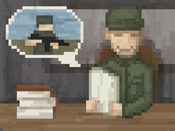
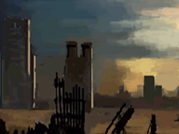
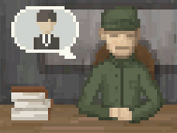
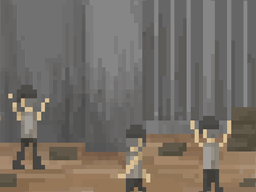
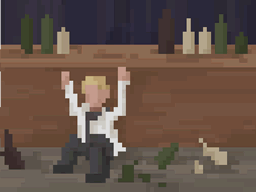
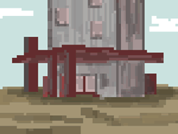
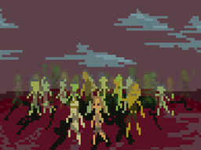
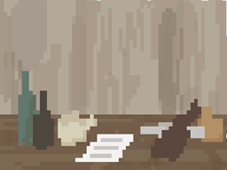

01. 基本信息
没落平原是游戏的首张正式地图, 它拥有精彩的主线任务和丰富的支线剧情, 过去这张地图通关后是可以前往暮色山谷的, 不过由于剧情冲突和后续版本功能的增加, 现在已经不再能实现这种转换, 所以当你通关后, 就尝试收拾好心情, 选择暮色山谷再次启程吧, 那又是截然不同的体验了, 此外为了方便总览和避免剧透, 我们将事件的详情折叠了起来, 你可以通过点击标题或下面的按钮来展开或关闭内容.
由于本页的文本非常多, 建议适当的利用浏览器的搜索功能, 只需要按下 Ctrl + F 并输入关键词即可, 标题或内容都可被查找到.
通过点击按钮来操作所有事件:

02. 主线任务
没落平原的主线任务, 主要是围绕着联合都市与雷雨城联盟这两大势力之间的争斗, 你可以自由的选择加入某一方, 从道德和收益的角度来讲, 帮助雷雨城联盟的市长, 避免他们被联合都市吞并是更为划算的, 在游戏中好人一般都有好报(圣母婊行为另说), 这也算是开发团队关于真善美的一种价值观引导吧, 当然你也可以选择站队联合都市, 当个坏人亦有别样的体验, 也许通关后再重开, 试试另一种可能?
————
01. 开始01
代码: 249
模式: 对话框
条件: 无限制条件
文本描述: 你的童年在同龄人中是什么角色(触发 # 开始02 / 延迟 30000 分钟触发 工具事件.html # 感染区扩大01 / XJ: 开始的这三个事件都已被废弃了, 这应该是游戏最初用来给角色增加基础属性的, 但后来增添了预设角色的内容, 这些事件也就被废弃了);
# 选项01: 孩子王(某成员 +2 战力);
# 选项02: 熊孩子(某成员 +1 战力 / 某成员 +2 注意);
# 选项03: 机灵鬼(某成员 +3 手工 / 某成员 +5 智力);
# 选项04: 富二代(获得 1000 零件);
02. 开始02
代码: 250
模式: 对话框
条件: 无限制条件
文本描述: 你的青年时代都经历了什么(触发 # 开始03);
# 选项01: 街溜子(某成员 +5 口才);
# 选项02: 剽窃者(某成员 +2 注意 / 某成员 +4 手工);
# 选项03: 在学习(某成员 +5 智力);
# 选项04: 去打工(某成员 +1 体质 / 获得 +500 零件);
————
01. 旅程开始
代码: 252
模式: 对话框
条件: 无限制条件
条件细节: (初始进入游戏 && 当前正在没落平原);
文本描述: 你曾经是谷地城市一名普通的小商贩, 平淡但是富足的生活让你变得比其他人更加的乐观, 但是望着从未踏足过的高墙之外, 使你对未知废土世界充满了好奇, 终于有一天, 你决定变卖所有家产, 换成一辆货车, 去未知的世界探险, 今天, 你在城市的近郊, 从卖车人那里得到了一辆货车, 接下来, 你需要前往自己在谷地城市的仓库拿走你的所有货物, 然后踏上新的旅程;
# 选项01: 出发(解锁成就: 旅途开始 / 触发 工具事件.html # 游戏开始 / 添加 # 任务: [到达谷地城]);
02. 任务: [到达谷地城]
 代码: 253
代码: 253
模式: 提示框
条件: 复合的条件
条件细节: (到达谷地城(CityID=63));
文本描述: 到达谷地城拿你的资产;
事件结果: (触发 # 拿到货物);
03. 拿到货物
代码: 254
模式: 对话框
条件: 无限制条件
文本描述: 你到达了谷地城, 在仓库里拿走了你的所有财产, 这些应该足够成为你的启动资金了, 而在这时你发现, 还有两封地契, 分别在雷雨城和星光城, 它们都已经尘封多年了, 不知道是哪位先祖留下来的, 这是属于你的财产, 你如此的想到, 理应去接收它;
# 选项01: 让我们先前往雷雨城(获得 1 核心 / 获得 3000 零件 / 添加 # 任务: [雷雨城地契] / 添加 # 任务: [星光城地契]);
04. 任务: [雷雨城地契]
代码: 255
模式: 提示框
条件: 复合的条件
条件细节: (到达雷雨城(CityID=62));
文本描述: 兑换我们位于雷雨城的地契;
事件结果: (触发 # 拜访市长(兑地契));
01. 拜访市长(兑地契)
代码: 256
模式: 对话框
条件: 无限制条件
文本描述: 经过旅途, 我们到达了雷雨城, 这里熙熙攘攘的好不热闹, 我们应该找到城里的市长, 尝试把属于我们的地契兑换成钱;
# 选项01: 去见市长(触发 # 拜访市长(市长01));
02. 拜访市长(市长01)
代码: 257
模式: 对话框
条件: 无限制条件
文本描述: 我们见到了市长, 穿着老式军装的中年男人, 目光炯炯有神, 从他沟壑纵横的面颊能看出岁月对他的洗礼, 听他和别人先聊我们了解到, 他似乎是大灾变之前出生的人, 我们还了解到, 这个城市面临着某种困境, 他们正尝试解决, 很快他注意到了我们;
# 选项01: 说明来意(触发 # 拜访市长(市长02));
03. 拜访市长(市长02)
代码: 258
模式: 对话框
条件: 无限制条件
文本描述: 在我们说明来意以后, 市长用一种很职业的假笑邀请我们坐下, 他翻了翻我们的地契之后, 皱起了眉头说道, 这份地契实在是太老了, 尽管它的确是雷雨城的地契, 嗯, 实际上, 即使我们愿意给你兑换, 然而我们城市现在也面临着各种各样的财政困难;
# 选项01: 照你这么说, 所以我是拿不到钱了吗?;
1/1 概率: 不, 并不是这样的, 孩子, 你要知道, 很多事情不是你想的那样的(某个成员 +150 见闻 / 添加 # 任务: [拿回钱财]);
04. 任务: [拿回钱财]
代码: 259
模式: 提示框
条件: 复合的条件
条件细节: (到达雷雨城(CityID=62));
文本描述: 使用地契换回属于我们的钱!;
事件结果: (启用 # 命令: [拜访市长01]);
01. 命令: [拜访市长01]
代码: 1001
模式: 侧边栏
条件: 复合的条件
条件细节: (在城市中 && 存在 # 任务: [拿回钱财] && 未触发过
# 拜访市长(市长请求02) > # 选项03: 好吧我知道了!);
事件结果: (触发 # 拜访市长(拿回钱财));
02. 拜访市长(拿回钱财)
代码: 260
模式: 对话框
条件: 无限制条件
文本描述: 我们该拿回这笔钱, 几万零件, 足够吃吃喝喝下半辈子;
# 选项01: 尝试和他达成某些交易, 也许, 我们可以相互合作一下;
1/1 概率: 我们了解到你们正面临着某种困境, 也许我们帮你们解决点问题, 你给我们地契的钱?(触发 # 拜访市长(市长请求01));
# 选项02: 威胁必须给钱(不会展示条件 / 无效就不显示选项 / 未触发过 # 拜访市长(拿回钱财) > # 选项02: 威胁他必须给钱);
1/1 概率: 老头子, 警告你不要嚣张, 我可以瞬间捏爆你的头! 但这市长显然不是个善茬, 他只瞪了我们一眼, 就把我们吓得不轻;
# 选项03: 骗他我们可怜(不会展示条件 / 无效就不显示选项 / 未触发过 # 拜访市长(拿回钱财) > # 选项03: 欺骗他我们可怜);
1/1 概率: 我们编了个堪称完美的理由, 说什么家里有人重病正在等待治疗, 但是显然市长说的, 这个城市陷入了财政困难是真的, 他真的拿不出钱给我们!(某个成员 -1 道德 / 某个成员 +2 口才);
03. 拜访市长(市长请求01)
代码: 261
模式: 对话框
条件: 无限制条件
文本描述: "就凭你?" 虽然市长投来了轻蔑的目光, 但是显然他对这个提案也很感兴趣, "好吧, 我们的城市现在面临的一个问题是, 我们正被旁边的联合都市这个邪恶势力所威胁着, 他们每个月都要求我们上缴不菲的保护费, 一旦拒绝, 他们便会对我们进行劫掠";
# 选项01: 联合都市?
1/1 概率: (触发 # 拜访市长(市长请求01) / if(未触发过两次 # 拜访市长(市长请求01) > # 选项01: 联合都市?){ 其实就是帮匪徒, 他们以那座城市为据点, 烧杀抢掠无恶不作, 不过他们似乎一直想更高效收取保护费, 所以始终把自己包装成正派人士, 连据点名字也叫"联合城市" }else{ 刚不是跟你说了吗, 他们就是帮土匪 });
# 选项02: 做什么?
1/1 概率: (触发 # 拜访市长(市长请求02));
# 选项03: 嗯哼?
1/1 概率: (触发 # 拜访市长(市长请求02));
04. 拜访市长(市长请求02)
代码: 262
模式: 对话框
条件: 无限制条件
文本描述: 让我们觉得棘手的是, 每次他们来抢劫, 都是挑我们守卫最薄弱的时候, 这很明显并不是巧合, 所以我强烈怀疑我们的城市中有内鬼, 因此我希望, 你能帮我们找出藏在我们城市里的内鬼;
# 选项01: 哪些人有嫌疑(不会展示条件 / 无效就不显示选项 / 未触发过 # 拜访市长(市长请求02) > # 选项01: 哪些人有嫌疑);
1/1 概率: 这座城市里的人大部分都是我的战友, 我们早在大灾变时代就在军队里一同战斗了, 目前来说, 新来的人有包括: 城门附近的母子, 四号当铺的商贩, 酒馆里的赌徒, 图书馆里新来的管理员(触发 # 拜访市长(市长请求02) / 添加 # 任务: [找出内奸]);
# 选项02: 有什么线索吗(不会展示条件 / 无效就不显示选项 / 未触发过 # 拜访市长(市长请求02) > # 选项02: 有什么线索吗);
1/1 概率: 我在北边的SP城有一个老朋友, 他正在那里的大餐厅做厨师, 六个月前他来拜访我的时候, 好像有说过他知道谁是内奸, 奈何我那时根本没把联合都市放在心上, 要是去问问他可能会有线索(触发 # 拜访市长(市长请求02) / 添加 # 任务: [内奸线索]);
# 选项03: 好吧我知道了(不会展示条件 / 无效就不显示选项
/ 已触发过 # 拜访市长(市长请求02) > # 选项01: 哪些人有嫌疑
&& 已触发过 # 拜访市长(市长请求02) > # 选项02: 有什么线索吗);
1/1 概率: "那就去吧, 如果你真的能帮到我们找出内鬼, 一定有重谢的, 零件跟核心都会给你们"(添加 # 任务: [侦察联合都市]);
01. 任务: [内奸线索]
代码: 264
模式: 提示框
条件: 复合的条件
条件细节: (到达SP城(CityID=103));
文本描述: 要在这里找到大餐厅的厨师;
事件结果: (启用 # 命令: [寻找厨师]);
02. 命令: [寻找厨师]
代码: 1004
模式: 侧边栏
条件: 复合的条件
条件细节: (在城市中 && 存在 # 任务: [内奸线索]);
事件结果: (触发 # 厨师(忙碌的厨师));
03. 厨师(忙碌的厨师)
代码: 272
模式: 对话框
条件: 无限制条件
文本描述: 我们很快就找到了那个厨师, 但是他非常忙, 似乎根本没时间理我们;
# 选项01: 直接询问他;
1/1 概率: 他自顾自的忙碌着, 不理我们;
# 选项02: 请他喝一杯!(拥有 100 零件);
1/1 概率: 没人会拒绝免费的酒!(失去 100 零件 / 触发 # 厨师(厨师的闲聊));
# 选项03: 暂时先离开;
04. 厨师(厨师的闲聊)
代码: 273
模式: 对话框
条件: 无限制条件
文本描述: 我们和他相聊甚欢, 了解到他和雷雨城的市长早年是战友关系, 情谊很深厚, 我觉得我们可以进一步的切入到主题中了;
# 选项01: 就直接询问内奸的事情!;
1/1 概率: (触发 # 厨师(线索01));
# 选项02: 意犹未尽再聊聊(不会展示条件 / 无效就不显示选项 / 未触发过 # 厨师(厨师的闲聊) > # 选项02: 意犹未尽再聊聊);
1/1 概率: 我们又和聊了很多, 他和市长的关系, 他们的故事(耗时 120 分钟 / 所有成员 +1 口才 / 触发 # 厨师(厨师的闲聊));
# 选项03: 就先到这;
05. 厨师(线索01)
代码: 274
模式: 对话框
条件: 无限制条件
文本描述: 说明来意后他脸上的笑容突然消失, 似乎不愿意提这事;
# 选项01: 软磨硬泡(团队口才大于 15);
1/1 概率: 缠到他说为止(触发 # 厨师(线索02));
# 选项02: 直接灌醉他(拥有 300 零件);
1/1 概率: (失去 300 零件 / 触发 # 厨师(线索02));
# 选项03: 保证保密(团队道德大于 12);
1/1 概率: (所有成员 +1 道德 / 触发 # 厨师(线索02));
# 选项04: 算了;
06. 厨师(线索02)
代码: 275
模式: 对话框
条件: 无限制条件
文本描述: "我其实并不想说这事的, 毕竟我不想被联合都市的人找麻烦, 但我可以告诉你, 报信的人肯定是再雷雨城有工作的人!";
# 选项01: 你为什么会知道啊;
1/1 概率: 半年前我去雷雨城进货, 走得比较晚, 在城门口看见有人在鬼鬼祟祟不知道干什么, 现在想来应该就是内奸和联合都市的人在交换情报吧, 我听到那个人说: "我的工作薪水太低了, 祝合作愉快", 具体我忘了, 反正大概这个意思(触发 # 厨师(线索02));
# 选项01: 你为什么不说出来;
1/1 概率: 我害怕啊, 你不知道联合都市那都是些什么人, 杀人越货无恶不作, 我当时差点跟市长闲聊说漏嘴了, 我不知道你为什么要调查这件事, 但是千万别说是我说的啊!(触发 # 厨师(线索02));
# 选项01: 好的再见;
1/1 概率: (某个成员 +150 见闻值 / 移除 # 任务: [内奸线索]);
————
01. 任务: [找出内奸]
代码: 263
模式: 提示框
条件: 复合的条件
条件细节: (到达雷雨城(CityID=62));
文本描述: 找出向联合都市报信的内奸;
事件结果: (启用 # 命令: [寻找内奸]);
02. 命令: [寻找内奸]
代码: 1002
模式: 侧边栏
条件: 复合的条件
条件细节: (未触发过 # 图书管理员(你是内奸) > # 选项02: 谎称愿意加入
&& 存在 # 任务: [找出内奸] && 当前在城市中);
事件结果: (触发 # 寻找出内奸);
03. 寻找出内奸
代码: 266
模式: 对话框
条件: 无限制条件
文本描述: 这事简直就是大海捞针, 先和有嫌疑的人聊聊, 看有什么线索吧(XJ: 乱问的话可能会掉口才, 建议查看攻略后再选择);
# 选项01: 城门母子(触发 # 寻找内奸(母子));
# 选项02: 当铺商贩(触发 # 寻找内奸(商贩));
# 选项03: 酒馆赌徒(不会展示条件 / 无效就不显示选项);
1/1 概率: 一靠近他, 这个酒鬼就散发出来了剧烈的臭味, 真是让人受不了啊(
if(已触发过 # 酒鬼(线索) > # 选项03: 再见){ 触发 # 酒鬼(询问) }else{ 触发 # 酒鬼(嬉笑) });
# 选项04: 图书管理员(触发 # 寻找内奸(图书管理员));
# 选项05: 暂时没头绪;
01. 酒鬼(嬉笑)
代码: 267
模式: 对话框
条件: 无限制条件
文本描述: "这位客人, 你看起来像是有什么心事啊, 想来和我玩一把吗?";
# 选项01: 我想打听事(触发 # 酒鬼(赌徒));
# 选项02: 我在找内奸(触发 # 酒鬼(赌徒));
# 选项03: 再见;
02. 酒鬼(赌徒)
代码: 268
模式: 对话框
条件: 无限制条件
文本描述: "不管你究竟是想要问什么, 先赌赢了我再说吧!", 说罢他哼着小曲, 掏出了自己的骰子, "下注, 输赔赢赚, 就比大小";
# 选项01: 赌 040 零件(拥有 040 零件);
1/2 概率: 我们输给了这个酒鬼, 他嘻嘻哈哈地把我们的钱都收了起来, 我们还要再试试吗(失去 040 零件 / 触发 # 酒鬼(赌徒));
1/2 概率: 我们赢走了这个酒鬼的钱, 他看起来很不爽但只能认栽, 我们问了关于内奸的事(获得 040 零件 / 触发 # 酒鬼(线索));
# 选项02: 赌 100 零件(拥有 100 零件);
1/2 概率: 我们输给了这个酒鬼, 他嘻嘻哈哈地把我们的钱都收了起来, 我们还要再试试吗(失去 100 零件 / 触发 # 酒鬼(赌徒));
1/2 概率: 我们赢走了这个酒鬼的钱, 他看起来很不爽但只能认栽, 我们问了关于内奸的事(获得 100 零件 / 触发 # 酒鬼(线索));
# 选项03: 赌 200 零件(拥有 200 零件);
1/2 概率: 我们输给了这个酒鬼, 他嘻嘻哈哈地把我们的钱都收了起来, 我们还要再试试吗(失去 200 零件 / 触发 # 酒鬼(赌徒));
1/2 概率: 我们赢走了这个酒鬼的钱, 他看起来很不爽但只能认栽, 我们问了关于内奸的事(获得 200 零件 / 触发 # 酒鬼(线索));
# 选项04: 不玩了;
03. 酒鬼(线索)
代码: 269
模式: 对话框
条件: 无限制条件
文本描述: "哦, 原来你想问的是这个啊, 具体的情况我不知道啦, 毕竟我只是个无业游民, 但是我能告诉你: 内奸必定是个女的";
# 选项01: 你怎么知道呢;
1/1 概率: 我有次晚上在城门外看到过联合都市的人, 他们的服饰太明显了, 行动也鬼鬼祟祟的, 很明显是来踩点的, 然后从城里出来了一个女人递给了他们什么东西, 我猜就是地图, 毫无疑问就是那个女人在给联合都市的人透露我们的情报(触发 # 酒鬼(线索));
# 选项02: 你就是内奸吧;
1/1 概率: 酒鬼憨憨地笑了笑, 喝了一口酒(触发 # 酒鬼(线索));
# 选项03: 再见;
04. 酒鬼(询问)
代码: 270
模式: 对话框
条件: 无限制条件
文本描述: 还有啥事;
# 选项01: 再问内奸的事;
1/1 概率: (触发 # 酒鬼(线索));
# 选项02: 你就是内奸;
1/1 概率: "呵呵, 我说了内奸是个女的, 你不信我也没办法",
我们和他争论了半天, 最终感觉确实证据并不充分, 我们觉得还是再收集多一点证据的好(某个成员 -1 口才);
# 选项03: 试试手气(不会展示条件 / 无效就不显示选项 / 未触发过 # 酒鬼(询问) > # 选项03: 试试手气);
1/1 概率: (触发 # 酒鬼(赌博));
# 选项04: 没事了;
05. 酒鬼(赌博)
 代码: 271
代码: 271
模式: 对话框
条件: 无限制条件
文本描述: 他哼着小曲掏出了骰子: "下注吧, 输赔赢赚, 比大小";
# 选项01: 赌 040 零件;
2/3 概率: 我们输给了这个酒鬼, 他嘻嘻哈哈地把我们的钱都收了起来, 我们还要再试试吗(失去 040 零件 / 触发 # 酒鬼(赌博));
1/3 概率: 我们赢走了这个酒鬼的钱, 他看起来很不爽, 但最后无可奈何的也还是只能认栽(获得 040 零件 / 触发 # 酒鬼(赌博));
# 选项02: 赌 100 零件;
2/3 概率: 我们输给了这个酒鬼, 他嘻嘻哈哈地把我们的钱都收了起来, 我们还要再试试吗(失去 100 零件 / 触发 # 酒鬼(赌博));
1/3 概率: 我们赢走了这个酒鬼的钱, 他看起来很不爽, 但最后无可奈何的也还是只能认栽(获得 100 零件 / 触发 # 酒鬼(赌博));
# 选项03: 赌 200 零件;
3/4 概率: 我们输给了这个酒鬼, 他嘻嘻哈哈地把我们的钱都收了起来, 我们还要再试试吗(失去 200 零件 / 触发 # 酒鬼(赌博));
1/4 概率: 我们赢走了这个酒鬼的钱, 他看起来很不爽, 但最后无可奈何的也还是只能认栽(获得 200 零件 / 触发 # 酒鬼(赌博));
# 选项04: 不玩了;
01. 寻找内奸(母子)
代码: 276
模式: 对话框
条件: 无限制条件
文本描述: 居住在城门口贫民区的一对母子, 蓬头垢面, 面黄肌瘦, 感觉很久没有吃东西了;
# 选项01: 跟他们聊天;
1/1 概率: "我们从SP城流亡过来, 饭都吃不饱, 求求你行行好吧", 被饥荒困扰的人, 总觉得是有动机的(触发 # 寻找内奸(母子));
# 选项02: 你就是内奸;
1/1 概率: (某个成员 -1 口才 / if(已触发过 # 酒鬼(线索) > # 选项03: 再见){ 我们一个人说了很久, 虽然酒鬼说了内奸可能是个女人, 但是图书管理员也是女的, 证据还是不够 }else{ "你有病吧, 我们都要饿死了, 不愿意行好就算了, 能不能不要寻我们的开心", 我们和他争论了半天, 然而感觉证据并不充分, 我们觉得还是再收集点证据的好 });
# 选项03: 再见;
02. 寻找内奸(商贩)
代码: 277
模式: 对话框
条件: 无限制条件
文本描述: 这是城里做生意的一个小商贩, 对我们似乎是爱理不理;
# 选项01: 聊天;
1/1 概率: 他瞪了一眼, 根本不鸟我们!(触发 # 寻找内奸(商贩));
# 选项02: 你是内奸;
1/1 概率: (某个成员 -1 口才 / if(已触发过 # 厨师(线索02) > # 选项03: 再见){ 虽然厨师说犯人可能是个有工作的人, 但图书管理员也有工作, 所以证据还是不足 }else{ 他根本不鸟我们, 我们一个人巴拉巴拉的在那里说个不停, 连我们自己都觉得自己说的话没什么逻辑性, 还是证据太少了! } / 触发 # 寻找内奸(商贩));
# 选项03: 买东西吧;
1/1 概率: (打开商店界面);
# 选项04: 拜拜;
01. 寻找内奸(图书管理员)
代码: 278
模式: 对话框
条件: 无限制条件
文本描述: 图书管理员是位年轻女性, 打扮干净而优雅, 仿佛不是这个时代的人, 在我的印象中, 只有大灾变之前的人有这种气质;
# 选项01: 先和她聊天吧(不会展示条件 / 无效就不显示选项 / 未触发过 # 寻找内奸(图书管理员) > # 选项01: 先和她聊天吧);
1/1 概率: 应该说不愧是管理员吗, 知书达理气质优雅, 我们感觉自己在交谈中学到很多知识(耗时 90 分钟 / 所有成员 +1 智力);
# 选项02: 你是内奸;
1/1 概率: (if(已触发过 # 厨师(线索02) > # 选项03: 再见){ if(已触发过 # 酒鬼(线索) > # 选项03: 再见){ 解锁成就: 神探 / 触发 # 图书管理员(你是内奸) }else{ 某个成员 -1 口才 / 她静静地看着我们叨叨逼逼, 我们最后说得面红耳赤, 厨师的确说过内奸是有工作的人, 但是小商贩也是啊, 我们证据不足 } }else{ if(已触发过 # 酒鬼(线索) > # 选项03: 再见){ 某个成员 -1 口才 / 她静静地看着我们叨叨逼逼, 我们最后说得面红耳赤, 酒鬼的确说过内奸是女人, 但是那对母子也是啊, 我们证据不足 }else{ 所有成员 -1 口才 / 她静静地看着我们叨叨逼逼, 我们最后说得面红耳赤, 是啊, 我们根本就没有足够证据就在这信口胡诹 } } );
# 选项03: 再见;
02. 图书管理员(你是内奸)
代码: 279
模式: 对话框
条件: 无限制条件
文本描述: 随着一环接一环分析, 表示的证据都指向她, 管理员的面容逐渐严肃, 笑容逐渐消失, 不过毫无疑问, 她当然不会承认;
# 选项01: 强烈地指认她;
1/1 概率: 尽管我们言辞犀利, 但她就是打死不承认, 毕竟她在有自己的工作, 承认了就是死路!(触发 # 图书管理员(你是内奸));
# 选项02: 谎称愿意加入(不会展示条件 / 无效就不显示选项 / 已触发过 # 图书管理员(你是内奸) > # 选项01: 强烈地指认她);
1/1 概率: 我们缓和了语气, 表示并非来揭发, 只想从她的工作分一杯羹(所有成员 +500 见闻 / 触发 # 图书管理员(谍中谍始));
# 选项03: 也许是认错了;
03. 图书管理员(谍中谍始)
代码: 280
模式: 对话框
条件: 无限制条件
文本描述: 她显然被这个突如其来的说法给惊讶到了, 她警惕地看着我们, 但是看我们并没有要伤害她的意思, 便逐渐放松了警惕;
# 选项01: 就这么说定了;
1/1 概率: 到城市附近的废弃小屋找我,
我会给你目标位置的地址(添加 # 任务: [谍中谍的行动]);
01. 任务: [谍中谍的行动]
代码: 281
模式: 提示框
条件: 复合的条件
条件细节: (到达任务位置, 半径 30, 距离 150);
文本描述: 和图书管理员做交易, 要去这里见她;
事件结果: (触发 # 图书管理员(谍中谍续));
02. 图书管理员(谍中谍续)
代码: 282
模式: 对话框
条件: 无限制条件
文本描述: 我们在那个小房子见到了她, 和在城里知书达理的知识分子装束不同, 她穿上了板甲并带上了武器, 俨然一名废土战士;
# 选项01: 联合都市是什么;
1/1 概率: (if(未触发过两次 # 图书管理员(谍中谍续) > # 选项01: 联合都市是什么人){ "他们是帮匪徒, 没错, 但他们同时也是这个世界最后的秩序维护者, 他们向各个城市收保护费, 但同时也保证了各个城市的安全, 不像现在的市长, 除了雷雨城, 不, 除了他们自己, 其他人的安危他们根本不在乎" }else{ "我不是跟你讲了吗, 我没兴趣再说一次" } / 触发 # 图书管理员(谍中谍续));
# 选项02: 为什么要做内奸;
1/1 概率: (if(未触发过两次 # 图书管理员(谍中谍续) > # 选项02: 为什么要做内奸){ "我是图书馆的主人, 但这个年代图书馆根本赚不到钱, 赚不到钱我就没法付清图书馆房租, 这些书, 这些宝贵的文化财产就会丢失, 所以我需要钱, 非常多钱, 你懂吗?" }else{ "我说了, 我需要钱, 非常多钱, 你找茬吗?" } / 触发 # 图书管理员(谍中谍续));
# 选项03: 来说说正经事吧;
1/1 概率: (触发 # 图书管理员(谍中谍终));
03. 图书管理员(谍中谍终)
代码: 283
模式: 对话框
条件: 无限制条件
文本描述: 她拿出了一张准备好的文书, 这是我给你的推荐信, 你可以自己去试试加入他们, 祝你成功, 毕竟举荐了我也会有奖励的(XJ: 这里是主线任务的第一次分歧选项, 如果你想走雷雨城线, 就选择选项02或选项03, 如果想走联合都市路线, 就选择选项01);
# 选项01: 假戏真做;
1/1 概率: 本来只是打算诈诈她, 但是我们想了想, 帮助市长并没有什么赚头, 那帮家伙太古板了, 为联合都市做事应该更有赚头, 她把推荐信给了我们后, 自己驾驶着车辆扬长而去,(解锁成就: 假戏真做 / 所有成员 -5 道德 / 移除 # 任务: [侦察联合都市] / 启用 # 命令: [拜访市长02]);
# 选项02: 擒拿住她;
1/1 概率: 我们想擒住她, 但搏斗的过程中枪支走火了, 不小心打死了她, 哦天呐, 但这封推荐信应该足够作为证据给市长交差了(启用 # 命令: [拜访市长02]);
# 选项03: 杀了她吧;
1/1 概率: 我们趁她不注意, 掏出枪后一枪崩了她, 她倒在地上, 到死眼睛里都满是不可思议, 我们抢走了她的东西, 都是些书而已, 那么接下来的重点就是这封推荐信了, 到底是应该交给市长交差呢, 还是用来进入联合都市(某个成员 -1 道德 / 获得 23 书籍 / 启用 # 命令: [拜访市长02]);
01. 命令: [拜访市长02]
代码: 1003
模式: 侧边栏
条件: 复合的条件
条件细节: (在城市中 && 存在 # 任务: [找出内奸]);
事件结果: (触发 # 寻找内奸-回报);
02. 寻找内奸(回报)
代码: 284
模式: 对话框
条件: 无限制条件
文本描述: 我们见了市长, 他急切地问我们寻找内奸的事有没有进展?(XJ: 建议先去完成侦察联合都市的任务, 否则将无法再完成);
# 选项01: 跑了(不会展示条件 / 无效就不显示选项 / 已触发过
# 图书管理员(谍中谍终) > # 选项01: 假戏真做);
1/1 概率: (触发 # 寻找内奸(结果));
# 选项02: 其实(不会展示条件 / 无效就不显示选项
/ 已触发过 # 图书管理员(谍中谍终) > # 选项02: 擒拿住她
|| 已触发过 # 图书管理员(谍中谍终) > # 选项03: 杀了她吧);
1/1 概率: (移除 # 任务: [侦察联合都市] / 触发 # 寻找内奸(结果));
# 选项03: 我们去侦查了联合都市(不会展示条件 / 无效就不显示选项 /
已触发过 # 侦察联合都市 > # 选项01: 侦察 && 未触发过 # 寻找内奸(回报) > # 选项03: 我们去侦查了联合都市);
1/1 概率: 不错, 但更希望你们早点找到内奸, 先给你们些报酬吧(所有成员 +1000 见闻
/ 雷雨城联盟 +10 好感度 / 获得 1 核心 / 获得 1500 零件);
# 选项04: 目前暂时还没什么进展;
03. 寻找内奸(结果)
代码: 285
模式: 对话框
条件: 无限制条件
文本描述: 这样啊, 我早就意识到事情不对了, 没想到真的是她, 哎, 市长陷入了沉吟之中(XJ: 市长早有预感, 只是不愿去面对?);
# 选项01: 我们能拿到报酬吗?(不会展示条件 / 无效就不显示选项 / 已触发过 # 图书管理员(谍中谍终) > # 选项01: 假戏真做);
1/1 概率: 我很难说这是一个令人满意的结果, 你让她跑了, 说不定她会将这个情况报告给联合都市, 然后我们就会遭遇更多袭击… 这样看来我们从市长这里是拿不到地契了, 或许我们应该想办法尝试投靠联合都市(所有成员 +2000 见闻 / 雷雨城联盟 -20 好感度 / 移除 # 任务: [找出内奸] / 添加 # 任务: [进入联合都市]);
# 选项02: 那么关于我的报酬(不会展示条件 / 无效就不显示选项 / (已触发过 # 图书管理员(谍中谍终) > # 选项02: 擒拿住她 || 已触发过 # 图书管理员(谍中谍终) > # 选项03: 杀了她吧) && 未触发过 # 寻找内奸(结果) > # 选项02: 那么关于我的报酬);
1/1 概率: 市长摇摇头, 还不能把地契的钱给你, 需要更多帮助, 先给你一部分报酬吧(所有成员 +1500 见闻 / 雷雨城联盟 +20 好感度 / 获得 4 核心 / 获得 2000 零件 / 触发 # 寻找内奸(结果));
# 选项03: 那接下来怎么说?(不会展示条件 / 无效就不显示选项 / 已触发过 # 寻找内奸(结果) > # 选项02: 那么关于我的报酬);
1/1 概率: (移除 # 任务: [找出内奸] / 触发 # 谍中谍(潜入的任务));
04. 谍中谍(潜入的任务)
代码: 286
模式: 对话框
条件: 无限制条件
文本描述: 我们需要你帮忙潜入联合都市, 以推荐的名义, 他们绑架了我们的一些人, 还计划着下一次进攻, 只要你帮忙救出我们的人, 找到他们的计划, 我就把地契的钱给你!;
# 选项01: 好吧;
1/1 概率: (添加 # 任务: [进入联合都市]);
05. 任务: [进入联合都市]
代码: 287
模式: 提示框
条件: 复合的条件
条件细节: (到达联合都市(CityID=64));
文本描述: 我们要想办法进入联合都市!;
事件结果: (启用 # 命令: [尝试侦察]);
————
01. 任务: [侦察联合都市]
代码: 265
模式: 提示框
条件: 复合的条件
条件细节: (到达联合都市(CityID=64));
文本描述: 联合都市, 土匪的窝点, 我们应该侦察一下, 如果发现了些什么的话, 也许可以和雷雨城的市长要点报酬;
事件结果: (启用 # 命令: [尝试侦察]);
02. 命令: [尝试侦察]
代码: 1005
模式: 侧边栏
条件: 复合的条件
条件细节: ((存在 # 任务: [侦察联合都市] || 存在 # 任务: [进入联合都市])
&& 当前正在联合都市(CityID=64) && 在城市中);
事件结果: (触发 # 侦察联合都市);
03. 侦察联合都市
代码: 289
模式: 对话框
条件: 无限制条件
文本描述: 虽然外围的商店酒店区域外人可以正常进入, 但是联合都市的中心区域却没办法直接进入, 周围有着高高的围墙, 门口有着怒目而视的守卫, 想必这就是真正的土匪窝点了吧(XJ: 做完选项01既侦查这步以后, 就可以回去找雷雨城市长拿一部分报酬了);
# 选项01: 侦察(不会展示条件 / 无效就不显示选项 /
未触发过 # 侦察联合都市 > # 选项01: 侦查 && 未触发过 # 谍中谍-潜入任务 > # 选项01: 好吧);
1/1 概率: 中心区域戒备森严, 根本没有什么溜进去的余地, 也许我们应该想点别的办法? 不过我们发现了些联合都市的人员配置, 也许可以向雷雨城的市长回报一下赚点外快, 去向雷雨城市长索要报酬吧(移除 # 任务: [侦察联合都市] / 所有成员 +1000 见闻);
# 选项02: 就说是来应聘的!(不会展示条件 / 无效就不显示选项 / 存在 # 任务: [进入联合都市]);
1/1 概率: 我们拿出了推荐信, 不一会儿就有人走出来吆喝我们, 让我们进去(解锁成就:
深入虎穴 / 移除 # 任务: [侦察联合都市] / 触发 # 联合都市(老板));
# 选项03: 离开;
01. 联合都市(老板)
代码: 290
模式: 对话框
条件: 无限制条件
文本描述: 我们穿过重重守卫的把手, 来到一间装修还算精致的办公室, 一个身着西装革履, 还梳着小胡子的人正坐在办公桌前, 他头也不抬地说: "我是联合都市的老板, 你就是新来的吗, 需要我给你讲解一下这里的规矩吗?";
选项01: 那就说一说吧(if(已触发过两次 # 联合都市(老板) > # 选项01: 那就说一说吧){ 同样的话我不喜欢说两遍 }else{ 联合都市从四周的城市收取服务费用, 用来壮大的实力, 然后反向保证大家的安全, 我这么说你能明白吗 } / 触发 # 联合都市(老板));
选项02: 现在要做什么(触发 # 联合都市(应聘));
02. 联合都市(应聘)
代码: 291
模式: 对话框
条件: 无限制条件
文本描述: 推荐信上说, 你们都是很聪明的人, 可是关于这点, 我并不清楚, 所以需要先对你们做个测试;
# 选项01: 测试;
1/1 概率: 对, 一个小小的测试, 看你是否胜任这份工作, 现在跟着他们走吧!(触发 # 联合都市(地牢));
03. 联合都市(地牢)
代码: 292
模式: 对话框
条件: 无限制条件
文本描述: 穿过蜿蜒的通道, 我们逐渐到达地下, 这是联合都市的地牢, 我们被带到一个房间, 房间有个被五花大绑的胖子, 看见我们进来眼中充满了惊恐;
# 选项01: 这个人是谁;
1/1 概率: 他是雷雨城的商人, 上个月雷雨城没交服务费, 强行收取后依然不够, 所以把这胖子带回来了(触发 # 联合都市(地牢));
# 选项02: 要做些什么;
1/1 概率: 他是雷雨城一名重要的商人, 我们将他绑了过来, 就是想要用他去换足够的钱, 或者说服务费(触发 # 联合都市(地牢));
# 选项03: 现在怎么办;
1/1 概率: 不过不知道究竟是无情无义, 还是说真的拿不出钱, 雷雨城一直都没有赎买他, 他已经没用了(触发 # 联合都市(测试));
04. 联合都市(测试)
代码: 293
模式: 对话框
条件: 无限制条件
文本描述: 说着守卫递过来了一把枪: "他已经没用了, 解决掉他吧"(XJ: 选择什么都不会影响后续剧情, 但是打头可以解锁成就~);
# 选项01: 打他的头;
1/1 概率: 咔! 枪没有响, 守卫似乎有点吃惊, 没想到你居然这么, 恩, 怎么说呢, 总之你通过了, 来吧(解锁成就: 毫不犹豫 / 所有成员 -3 道德 / 触发 # 联合都市(工作));
# 选项02: 打他的腿;
1/1 概率: 咔! 枪没有响, 守卫不怀好意地拍拍我们, 你通过了, 不过我必须告诉你, 就算只有腿受伤了, 我们也不会治疗他的, 他一样会死的(所有成员 -1 道德 / 触发 # 联合都市(工作));
# 选项03: 拒绝开枪;
1/1 概率: 守卫冷笑着, 我会如实跟老板反映的(所有成员 +1 道德 / 触发 # 联合都市(工作));
# 选项04: 射击守卫;
1/1 概率: 咔! 枪没有响, 守卫冷笑着, 我会如实跟老板反映的(所有成员 +3 道德 / 触发 # 联合都市(工作));
05. 联合都市(工作)
代码: 294
模式: 对话框
条件: 无限制条件
文本描述: 我们又被带回到老板的办公室, 老板依然头也不抬, 他肯定已经知道测试的结果, 但是关于这个他什么也没说, 有个工作要交给你, 老板说到;
# 选项01: 继续倾听;
1/1 概率: (添加 # 任务: [取得联合都市老板的信任] / 触发 # 联合都市(任务));
06. 联合都市(任务)
代码: 295
模式: 对话框
条件: 无限制条件
文本描述: 南边有一个小型农场, 他们已经很久没有交服务费了, 我希望你能从他们那里把服务费要回来;
# 选项01: 要通过谈判吗;
1/1 概率: 我不管, 总之你把钱要回来(触发 # 联合都市(任务));
# 选项02: 要使用暴力吗;
1/1 概率: 我不管, 总之你把钱要回来就行了(触发 # 联合都市(任务));
# 选项03: 知道了;
1/1 概率: (移除 # 任务: [进入联合都市] / 添加 # 任务: [第一份工作]);
01. 任务: [取得联合都市老板的信任]
代码: 297
模式: 提示框
条件: 复合的条件
条件细节: (到达联合都市(CityID=64));
文本描述: 要设法获得联合都市的老板的信任;
事件结果: (启用 # 命令: [拜访联合都市老板]);
02. 命令: [拜访联合都市老板]
代码: 1006
模式: 侧边栏
条件: 复合的条件
条件细节: (在城市中 && 存在 # 任务: [取得联合都市老板的信任]);
事件结果: (触发 # 联合都市(拜访老板01));
03. 联合都市(拜访老板01)
 代码: 298
代码: 298
模式: 对话框
条件: 无限制条件
文本描述: 老板依然在桌案上奋笔疾书着, 头也不抬表示, 我很忙的, 请你长话短说;
# 选项01: 关于那个囚犯的事情(不会展示条件 / 无效就不显示选项
/ 未触发过 # 囚犯(倒霉蛋) > # 选项02: 我们要赎他);
1/1 概率: (触发 # 囚犯(倒霉蛋));
# 选项02: 收到服务费了(不会展示条件 / 已触发过 # 龅牙农场(完工) > # 选项01: 回去报告吧);
1/1 概率: 老板打了个响指, 似乎很是满意呢(获得 4 核心 / 所有成员 +1000 见闻
/ 联合都市 +20 好感度 / 触发 # 联合都市(拜访老板02));
# 选项03: 没事了;
04. 囚犯(倒霉蛋)
代码: 299
模式: 对话框
条件: 无限制条件
文本描述: 你说那个人啊, 他已经没什么用了, 雷雨城看起来是座大城市, 但是实际上却没多少钱, 根本给不起 2000 零件的赎金, 我们准备最近找个日子, 把他给处理掉了(XJ: 最好是先点选项01给雷雨城报信, 返回雷雨城跟市长说一下, 然后再回来点选项02);
# 选项01: (该给雷雨城报信)(不会展示条件 / 无效就不显示选项 / 未触发过 # 囚犯(倒霉蛋) > # 选项01: (该给雷雨城报信));
1/1 概率: 这难道就是雷雨城市长说的被联合都市关押的囚犯? 不管怎么样我们还是跟雷雨城市长说一声!(添加 # 任务: [报信]);
# 选项02: 我们要赎他(拥有 2000 零件);
1/1 概率: (失去 2000 零件 /
触发 # 囚犯(营救));
# 选项03: 知道了;
01. 任务: [报信]
代码: 300
模式: 提示框
条件: 复合的条件
条件细节: (到达雷雨城(CityID=62));
文本描述: 我们得跟雷雨城的市长说一声, 联合都市有关押了他们的囚犯;
事件结果: (触发 # 囚犯(营救请求));
02. 囚犯(营救请求)
代码: 301
模式: 对话框
条件: 无限制条件
文本描述: 天呐, 那是我们的商会负责人啊, 上个月他在废土世界失踪了, 我们以为他遇难了, 没想到他还活着, 一定要救救他啊;
# 选项01: 好的;
1/1 概率: 添加 # 任务: [营救请求];
# 选项02: 不关我们的事;
1/1 概率: 我们做的已经够多了, 又想要白嫖我们的劳动力;
03. 任务: [营救请求]
代码: 302
模式: 提示框
条件: 复合的条件
条件细节: (到达雷雨城(CityID=62));
文本描述: 我们要营救联合都市的囚犯!;
事件结果: (启用 # 命令: [拜访市长03]);
01. 囚犯(营救)
代码: 304
模式: 对话框
条件: 无限制条件
文本描述: 老板难得的抬了一下头, 看着我们似乎有点吃惊, 但是什么也没说, 叫来了两个人在他们耳边窃窃私语, 又过了一会儿老板说: "已经释放他了, 不过他得自己回雷雨城", 老板顿了顿: "为什么赎他?";
# 选项01: 为了进一步勒索他;
1/1 概率: 老板笑了一下, 仿佛很满意(某个成员 -3 道德 / 触发 # 囚犯(感激的囚犯));
# 选项02: 他实在太可怜了;
1/1 概率: 老板冷笑了一下, 然后继续埋头写东西(某个成员 +2 道德 / 触发 # 囚犯(感激的囚犯));
# 选项03: 雷雨城付钱;
1/1 概率: 老板点点头, 似乎很满意, 然后招呼我们赶紧离开(某个成员 -1 道德 / 触发 # 囚犯(感激的囚犯));
02. 囚犯(感激的囚犯)
代码: 305
模式: 对话框
条件: 无限制条件
文本描述: 我们带着囚犯离开了联合都市, 当我们摘下他的头套给他松绑后, 他顿时痛哭流涕给我们下跪, 很显然他受着非人待遇;
# 选项01: 你到底怎么被抓的;
1/1 概率: 我之前负责联合都市和雷雨城之间的贸易, 但是我经常说对他们不好的话, 久而久之他们都讨厌我, 上次他们洗劫我们, 就把我抓走了, 我真的以为我死定了(触发 # 囚犯(感激的囚犯));
# 选项02: 我们救你花了钱的;
1/1 概率: 他突然面露难色起来, 我的所有财产早在被他们抢劫的时候就拿走了, 我真的很想报答你, 但现在确实已经身无分文了(某个成员 -1 道德 / 触发 # 囚犯(感激的囚犯));
# 选项03: 今后就好自为之吧;
1/1 概率: 等等! 我突然想起来还有一批货物藏在沙漠里, 一直没说出来, 现在能保住性命已经很不错了, 就送给你了吧(解锁成就: 营救 / 添加 # 任务: [囚犯宝藏]);
03. 任务: [囚犯宝藏]
代码: 308
模式: 提示框
条件: 复合的条件
条件细节: (到达任务位置, 半径 30 距离 300);
文本描述: 这个地方藏了那位囚犯的宝藏;
事件结果: (触发 # 囚犯(宝藏));
04. 囚犯(宝藏)
代码: 309
模式: 对话框
条件: 无限制条件
文本描述: 我们到达了目标地点, 发现一块不起眼的防水布盖在沙地上, 我们打开它, 果然发现了很多物资;
# 选项01: 拿走;
1/1 概率: (获得 3 医疗箱 /
获得 10 轮胎 / 获得 1000 汽油 / 获得 120 弹药);
————
01. 命令: [拜访市长03]
代码: 1008
模式: 侧边栏
条件: 复合的条件
条件细节: (在城市中
&& 存在 # 任务: 营救请求);
事件结果: (触发 # 囚犯(再拜访市长));
02. 囚犯(再拜访市长)
代码: 303
模式: 对话框
条件: 无限制条件
文本描述: 怎么样了, 救到了吗;
# 选项01: 暂时还没;
# 选项02: 救到人了(不会展示条件 / 无效就不显示选项 / 已触发过 # 囚犯(倒霉蛋) > # 选项02: 我们要赎他);
1/1 概率: (移除 # 任务: [营救请求] / 触发 # 囚犯(感激的市长)
/ 雷雨城联盟 +20 好感度);
03. 囚犯(感激的市长)
代码: 306
模式: 对话框
条件: 无限制条件
文本描述: 没想到你真的把商会负责人带回来了, 真的非常感谢;
# 选项01: 总得给点报酬吧;
1/1 概率: 是的是的, 没错, 辛苦你了(获得 500 零件 / 获得 2 核心 / 启用 # 命令: [拜访市长04]);
# 选项02: 钱可是我出的哦;
1/1 概率: 市长的笑容突然凝固, 但是并没有显示出明显的不快,
讲道理, 我们毕竟出了那么多钱, 我们又不是圣母(获得 2000 零件 / 获得 2 核心 / 启用 # 命令: [拜访市长04]);
# 选项03: 这是我应该做的;
1/1 概率: 市长向我们敬了一个礼, 据说在大灾变前, 这是种表示礼节的方式(所有成员 +3 道德 / 启用 # 命令: [拜访市长04]);
01. 命令: [拜访市长04]
代码: 1009
模式: 侧边栏
条件: 复合的条件
条件细节: (存在 # 任务: [拿回钱财] && 已触发过 # 囚犯(再拜访市长) > # 选项02: 救到人了
&& 未触发过 # 拜访市长(新请求) > # 选项01: 好吧 && 在城市中);
事件结果: (触发 # 拜访市长(要账01));
02. 拜访市长(要账01)
代码: 319
模式: 对话框
条件: 无限制条件
文本描述: 市长看到我们脸色很复杂, 我们好歹还是帮过一些忙的, 但是我们主动来找他通常只有一件事, 这令他很不快;
# 选项01: 地契的钱;
1/1 概率: (触发 # 拜访市长(要账02));
03. 拜访市长(要账02)
代码: 320
模式: 对话框
条件: 无限制条件
文本描述: 市长扶了扶额头, 从道义的角度来说, 你帮了我们那么多, 我不应该拒绝你的, 但是我们真的拿不出那么多钱;
# 选项01: 又来了哦;
1/1 概率: (触发 # 拜访市长(要账03));
04. 拜访市长(要账03)
代码: 321
模式: 对话框
条件: 无限制条件
文本描述: 不过, 也不是完全没有钱, 但是现在这个钱并不在我们这里, 如果你愿意将钱取回来, 那就是你的了, 好不好;
# 选项01: 又来了啊;
1/1 概率: (触发 # 拜访市长(新请求));
05. 拜访市长(新请求)
代码: 322
模式: 对话框
条件: 无限制条件
文本描述: 之前跟你说的那个在"SP城"的厨师, 之前他从我们这里进了一批食材, 但是还没有付尾款, 我们最近忙着应付联合都市,
所以一直都没人去收, 如果你去收到了, 那笔钱就是你的了, 这样行不;
# 选项01: 好吧好吧;
1/1 概率: (添加 # 任务: [欠债厨师])
01. 任务: [欠债厨师]
代码: 323
模式: 提示框
条件: 复合的条件
条件细节: (到达SP城(CityID=103));
文本描述: 向厨师收取拖欠的食材尾款;
事件结果: (启用 # 命令: [拜访厨师]);
02. 命令: [拜访厨师]
代码: 1010
模式: 侧边栏
条件: 复合的条件
条件细节: (在城市中 && 存在 # 任务: [欠债厨师]);
事件结果: (if(未触发过 # 苦恼的厨师(借酒消愁02) > # 选项01: 好吧
){ 触发 # 苦恼的厨师(借酒消愁01) }else{
触发 # 尝试劝回帮手 });
03. 苦恼的厨师(借酒消愁01)
代码: 324
模式: 对话框
条件: 无限制条件
文本描述: 我们又见到了那名厨师, 不过他愁眉苦脸的, 看起来不是能交流的样子;
# 选项01: 问他怎么了?(不会展示条件);
1/1 概率: (if(已触发过两次 # 苦恼的厨师(借酒消愁01) > # 选项02: 请他喝一杯){ 他缓缓开口了 / 触发 # 苦恼的厨师(借酒消愁02) }else{ 厨师并不想搭理我们! });
# 选项02: 请他喝一杯(拥有 125 零件);
1/1 概率: (失去 125 零件 / 耗时 30 分钟且感染度不增加 / 触发 # 苦恼的厨师(借酒消愁01) / if(已触发过两次 # 苦恼的厨师(借酒消愁01) > # 选项02: 请他喝一杯){ 又一杯酒下肚, 我们相谈甚欢 }else{ 我们和厨师喝了酒, 但他似乎还是愁眉苦脸的 });
# 选项03: 走了;
04. 苦恼的厨师(借酒消愁02)
代码: 325
模式: 对话框
条件: 无限制条件
文本描述: 我们这里有个很厉害的帮手, 他做的菜十里八乡都喜欢, 但是最近我们因为一些琐事吵架了, 真的就只是一些琐事而已, 当时我也是喝醉了, 气血上头, 要他滚, 不然就要用散弹枪崩他, 等我清醒过来的时候, 他已经走了, 留下一张字条说他在WS城, 我真的很想和他道歉, 能帮我劝他回来吗?;
# 选项01: 好吧;
1/1 概率: (添加 # 任务: [劝回帮手]);
# 选项02: 其实我们是来跟你要债的噢!;
1/1 概率: 现在不是说这个的时候, 就算我们想来硬的, 他现在这个晕晕乎乎的样子也没法交流;
# 选项03: 告辞;
01. 任务: [劝回帮手]
代码: 326
模式: 提示框
条件: 复合的条件
条件细节: (到达WS城(CityID=102));
文本描述: 将出走的厨房帮手给劝回来;
事件结果: (启用 # 命令: [面见帮手]);
02. 命令: [面见帮手]
代码: 1011
模式: 侧边栏
条件: 复合的条件
条件细节: (在城市中
&& 存在 # 任务: [劝回帮手]);
事件结果: (触发 # 逃跑的帮手(生气));
03. 逃跑的帮手(生气)
代码: 328
模式: 对话框
条件: 无限制条件
文本描述: 我们根据老板的描述, 我们很快就找到了那个帮手, 我们跟他说明了来意后, 他却说不去不去, 那个老家伙想撒气就撒气, 想叫我回去就叫我回去, 当我是啥啊!;
# 选项01: 请他喝酒吧(拥有 150 零件);
1/1 概率: 他态度坚决不回去!(失去 150 零件 / 触发 # 逃跑的帮手(生气));
# 选项02: 尝试贿赂(不会展示条件 / 无效就不显示选项 / 拥有 1000 零件);
1/1 概率: 帮我们个忙, 你回去我们才能拿到钱, 当我们拿出钱, 他很明显动摇了(失去 1000 零件 / 触发 # 逃跑的帮手(回去);)
# 选项03: 努力说服(团队口才大于 25);
1/1 概率: (触发 # 逃跑的帮手(回去));
# 选项04: 好吧;
04. 逃跑的帮手(回去)
 代码: 329
代码: 329
模式: 对话框
条件: 无限制条件
文本描述: 说着说着, 他的态度也渐渐的软化了, 其实我早就不生气了, 我只是不满意他的做事风格, 算了, 我还是回去吧, 听你说的, 他似乎也非常消沉;
# 选项01: 那可太好了;
1/1 概率: (所有成员 +200 见闻 / 移除 # 任务: [劝回帮手]);
01. 尝试劝回帮手
代码: 327
模式: 对话框
条件: 无限制条件
文本描述: 怎么样怎么样, 他愿意回来吗?;
# 选项01: 还没好, 不要急;
# 选项02: 他很快就回来了(不会展示条件 / 无效就不显示选项 / 已触发过 # 逃跑的帮手(回去) > # 选项01: 那可太好了);
1/1 概率: 太好了太好了, 真是感激不尽! 我今后一定好好对他(
触发 # 逃跑的帮手(报酬));
02. 逃跑的帮手(报酬)
代码: 330
模式: 对话框
条件: 无限制条件
文本描述: 看着我们的眼神, 厨师仿佛想起了什么, 哦, 对了, 货款, 你是来收债的, 我这就把 3000 零件给你;
# 选项01: 就这么点;
1/1 概率: 是啊, 我当时欠雷雨城的就是这么多(获得 3000 零件
/ 移除 # 任务: [欠债厨师] / if(未触发过 # 首都(密谋04) > # 选项01: 知道了){ 添加 # 任务: [要债] });
03. 任务: [要债]
代码: 331
模式: 对话框
条件: 无限制条件
条件细节: (到达雷雨城(CityID=62));
文本描述: 老狐狸又耍我们, 地契可是值几万零件的,
就这么点钱, 想把我们打发走, 要去找他说说理;
事件结果: (启用 # 命令: [拜访市长05]);
01. 命令: [拜访市长05]
代码: 1012
模式: 侧边栏
条件: 复合的条件
条件细节: (在城市中 && 存在 # 任务: [要债] /
未触发过 # 首都(密谋04) > # 选项01: 知道了);
事件结果: (触发 # 拜访市长(扑了个空));
02. 拜访市长(扑了个空)
代码: 332
模式: 对话框
条件: 无限制条件
文本描述: 市长不在, 扑了个空, 得等他回来找他算账;
# 选项01: 先走吧(if(存在 # 任务: [营救请求]){ 移除 # 任务: [营救请求] });
————
01. 任务: [第一份工作]
代码: 281
模式: 提示框
条件: 复合的条件
条件细节: (到达龅牙农场(CityID=54));
文本描述: 帮联合都市去龅牙农场收欠费;
事件结果: (启用 # 命令: [拜访大龅牙]);
02. 命令: [拜访大龅牙]
代码: 1007
模式: 侧边栏
条件: 复合的条件
条件细节: (在城市中 && 存在 # 任务: [第一份工作]);
事件结果: (触发 # 龅牙农场(到达农场));
03. 龅牙农场(到达农场)
代码: 307
模式: 对话框
条件: 无限制条件
文本描述: 我们到达了传说中的龅牙农场, 在田地正中间耕作的那个大龅牙应该就是农场主了, 农场主看到我们, 很憨厚地笑了起来, 说道: "这里好久都没有客人来了, 快进来坐坐吧", 声音非常爽朗, 不难想象这是一个平易近人的人;
# 选项01: 直说服务费的事;
1/1 概率: 一听到我们是联合都市派来收租的, 他的脸色突然就阴沉下来了!(触发 # 龅牙农场(收租));
# 选项02: 先随意的聊会天;
1/1 概率: (触发 # 龅牙农场(憨厚的农场主01));
04. 龅牙农场(憨厚的农场主01)
代码: 310
模式: 对话框
条件: 无限制条件
文本描述: 我们之间相谈甚欢, 他自称是联合都市的原公民, 但忍受不了那里杀人越货的营生习俗, 于是自己一路南逃, 最后逃到了这里, 看到土地还相对肥沃, 于是便自己耕种了起来, 因为自己的龅牙, 所以这里就被称为了龅牙农场;
# 选项01: 关于服务费的事;
1/1 概率: 一听到我们是联合都市派来收租的, 他的脸色突然就阴沉下来了!(触发 # 龅牙农场(收租));
# 选项02: 请他喝两杯(拥有 150 零件 / 失去 150 零件);
1/1 概率: 好啊来吧(触发 # 龅牙农场(憨厚的农场主02));
05. 龅牙农场(憨厚的农场主02)
代码: 311
模式: 对话框
条件: 无限制条件
文本描述: 说是土地肥沃, 其实也只是相对于漫天的黄沙, 一年到头根本产出不了什么东西, 不仅要面对恶劣的气候, 还要面对零星出现的丧尸, 而一年前联合都市发现了这里, 开始派人收所谓的"服务费", 这更是让他的生活雪上加霜;
# 选项01: 其实;
1/1 概率: 一听到说我们是联合都市
来催缴费用的, 他的笑容突然凝固了!(触发 # 龅牙农场(收租));
01. 龅牙农场(收租)
代码: 312
模式: 对话框
条件: 无限制条件
文本描述: 没钱! 你自己也看得到我这里种的作物颗粒都这么干瘪, 而且你们收了钱也从来不来帮忙, 上个月丧尸过境都是我们自己处理的! 你们就是群土匪, 我没钱给你们, 你们把我这条老命拿去好了!;
# 选项01: 你需要吃点苦头了!(团队战力大于 30 && 团队道德小于 10);
1/1 概率: 我们把老头和农场的工人们都撂翻在地, 还补了几枪吓唬他们, 老头哭着鼻子向我们求饶, 并表示一定继续交费(所有成员 -4 道德 / 移除 # 任务: [第一份工作] / 触发 # 龅牙农场(完工));
# 选项02: 晓之以情动之以理(团队口才大于 25);
1/1 概率: 我们反复向老人说明了不交保护费的坏处, 尽管他们真的捉襟见肘, 但是最后还是接受了(所有成员 -2 道德 / 所有成员 + 800 见闻 / 移除 # 任务: [第一份工作] / 触发 # 龅牙农场(完工));
# 选项03: 其实我可以帮帮你(不会展示条件 / 无效就不显示选项 / 已触发过 # 龅牙农场(憨厚的农场主02) > # 选项01: 其实);
1/1 概率: (触发 # 龅牙农场(好人));
# 选项04: 那算了吧;
02. 龅牙农场(完工)
代码: 314
模式: 对话框
条件: 无限制条件
文本描述: 不管怎么样,
我们算是解决了第一份工作了, 是时候回去和老板复命了;
# 选项01: 回去报告吧;
1/1 概率: (解锁成就: 优秀马仔);
03. 龅牙农场(好人)
代码: 313
模式: 对话框
条件: 无限制条件
文本描述: 你为什么要帮我, 这对你有什么好处? 大龅牙神色震惊了起来, 满脸都是不可思议的表情;
# 选项01: 不为什么(拥有 3000 零件);
1/1 概率: 我们并不是真的要加入联合都市, 因为某种原因必须为他们干活, 但是我们并不想弄脏自己的手(失去 3000 零件 / 所有成员 +4 道德 / 所有成员 + 1500 见闻 / 移除 # 任务: [第一份工作] / 触发 # 龅牙农场(兄弟));
# 选项02: 还是算了;
1/1 概率: (触发 # 龅牙农场(收租));
04. 龅牙农场(兄弟)
代码: 315
模式: 对话框
条件: 无限制条件
文本描述: 真的很不好意思, 不管怎么样都谢谢你了, 不过我不想让你负担这么多, 我现在确实拿不出钱, 但北边的山谷里有个加油站, 有我藏了一笔用来应急的钱, 那里的负责人是我的兄弟, 你只要跟他报我的名字, 他就会带你去取那笔钱, 好心人, 祝你平安;
# 选项01: 好的;
1/1 概率: ((触发 # 龅牙农场(完工) / 添加 # 任务: [龅牙兄弟]);
01. 任务: [龅牙兄弟]
代码: 316
模式: 提示框
条件: 复合的条件
条件细节: (到达龅牙加油站(CityID=53));
文本描述: 龅牙农场主兄弟会给我们报酬;
事件结果: (触发 # 龅牙兄弟(兄弟));
02. 龅牙兄弟(兄弟)
代码: 317
模式: 对话框
条件: 无限制条件
文本描述: 我们找到了龅牙的兄弟, 他太显眼了, 和农场主简直一模一样, 我们和他说明来意后, 他便招待我们进去了, 他问我们他的兄弟现在怎样了;
# 选项01: 挺好的;
1/1 概率: 他脾气实在太倔强了, 这样总会出问题的, 像我按时给联合都市交服务费就没有那么多破事儿(触发 # 龅牙兄弟(宝藏));
# 选项02: 不太好;
1/1 概率: 他脾气实在太倔强了, 这样总会出问题的, 像我按时给联合都市交服务费就没有那么多破事儿(触发 # 龅牙兄弟(宝藏));
# 选项03: 东西呢;
1/1 概率: 触发 # 龅牙兄弟(宝藏);
03. 龅牙兄弟(宝藏)
代码: 318
模式: 对话框
条件: 无限制条件
文本描述: 大龅牙把我们带到了他弟弟藏东西的地方;
# 选项01: 我们打开了储藏室, 里面果然放了很多的东西;
1/1 概率: (所有成员 +800 见闻 / 获得 80 口粮 / 获得 2 核心);
————
01. 联合都市(拜访老板02)
代码: 333
模式: 对话框
条件: 无限制条件
文本描述: 接下来有一个重要的工作交给你,
这事关我们整个联合都市的未来, 你先到首都去, 我会在那里等你;
# 选项01: OK(移除 # 任务: [取得联合都市老板的信任] / 添加 # 任务: [前往首都]);
02. 任务: [前往首都]
代码: 334
模式: 提示框
条件: 复合的条件
条件细节: (到达首都(CityID=61));
文本描述: 联合都市老板在等我们;
事件结果: (触发 # 首都(碰头));
03. 首都(碰头)
代码: 335
模式: 对话框
条件: 无限制条件
文本描述: 我们到达首都, 和老板的一众马仔碰头了, 看起来都不是什么善茬, 老板招呼大家进了一个酒店, 我们也跟着进去了, 但是当我们跨入大门的一瞬间, 突然被几个彪形大汉压倒在地, 几把枪抵在了我们脑袋上;
# 选项01: 什么情况?!
1/1 概率: (触发 # 首都(暴露));
04. 首都(暴露)
代码: 406
模式: 对话框
条件: 无限制条件
文本描述: 老板坐在桌前, 居高临下的, 用着一种难以言喻的表情看着我们, 冷冷地笑道: "你们之前一直在为雷雨城办事对不对";
# 选项01: 你怎么知道(不会展示条件 / 无效就不显示选项 / 未触发过 # 首都(暴露) > # 选项01: 你怎么知道);
1/1 概率: 回答错误, 一个大汉拎起我们一个成员踢了一脚, 力道仿佛要把肠子踢出来(随机某个成员受伤 / 触发 # 首都(暴露));
# 选项02: 没有(不会展示条件 / 无效就不显示选项 / 未触发过 # 首都(暴露) > # 选项02: 没有);
1/1 概率: 老板扔下一堆照片, 是我们和雷雨城市长会面的照片, 我们不由得冷汗直冒(所有成员 -3 口才 / 触发 # 首都(暴露));
# 选项03: 没错;
1/1 概率: (所有成员 +1 道德 / 触发 # 首都(抉择));
# 选项04: 现在没有了;
1/1 概率: (触发 # 首都(抉择));
05. 首都(抉择)
代码: 407
模式: 对话框
条件: 无限制条件
文本描述: 老板打了个响指, 两个大汉提着两个巨大的箱子走了上来, 老板指着箱子说, 给你两个选择, 死在这里或者帮我们做事;
# 选项01: 这哪有得选!;
1/1 概率: 你们僵硬地点头, 老板很满意, 补充道: 我并不想考验你们的忠诚,
你们应该知道, 雷雨城的市长拿不出你们想要的钱, 跟着谁干能拿到钱, 我觉得你们心里应该很清楚才对~(触发 # 首都(密谋01));
04. 首都(密谋01)
代码: 408
模式: 对话框
条件: 无限制条件
文本描述: 联合都市自建立以来, 扩展速度势如破竹, 我们把周边大小十个城市都纳入了我们的势力范围, 此时几个彪形大汉松了手, 你们得以站起来, 但是, 雷雨城市长这个老顽固, 始终不肯跟我们合作, 都不知道他在坚持什么! 就连首都也早已被我们渗透了;
# 选项01: 所以你们打算怎么办呢?;
1/1 概率: (触发 # 首都(密谋02));
04. 首都(密谋02)
代码: 409
模式: 对话框
条件: 无限制条件
文本描述: 雷雨城不是龅牙加油站这种小城市, 强攻是不现实的, 何况他们是一批老兵建立起来的城市, 之前有内奸内应, 尚无法攻入他们城市, 现在内奸不在, 就更不现实了, 市长顿了顿, 唯有智取!;
# 选项01: 如何智取?;
1/1 概率: 雷雨城还在实行老掉牙的选举制
, 那个市长仅仅是因为威望所以才能一直连任(触发 # 首都(密谋03));
04. 首都(密谋03)
 代码: 410
代码: 410
模式: 对话框
条件: 无限制条件
文本描述: 但是现在不一样了, 我们接下来会集结我们的所有兵力, 部署在雷雨城周边, 不过这些兵力并不是用来进攻的, 这时你注意到房间进来了一个西装革履的人, 经过你的仔细回忆, 你似乎见过他, 老板接着说道, 这是雷雨城的新闻部长, 他现在已经是我们的人了, 我们会想办法渲染雷雨城的市长和联合都市的个人恩怨, 让民众认识到, 他们如果再继续支持他们现在的市长, 就只是死路一条, 然后我们会在合适的时候, 推举一个我们的人成为市长候选人, 让民众选出他来, 这样我们就可以兵不血刃地占有雷雨城了;
# 选项01: 那我们还可以做些什么?;
1/1 概率: (触发 # 首都(密谋04));
04. 首都(密谋04)
代码: 411
模式: 对话框
条件: 无限制条件
文本描述: 你要做的就是告诉市长我们的全盘计划, 就这样, 我们志在必得, 他是个聪明人, 希望能为我们省点事!;
# 选项01: 知道了;
1/1 概率: (所有成员 +1100 见闻 / 移除 # 任务: [营救请求] / 移除 # 任务: [要债] / 添加 # 任务: [通告]);
01. 任务: [通告]
代码: 412
模式: 提示框
条件: 复合的条件
条件细节: (到达雷雨城(CityID=62));
文本描述: 向雷雨城市长通告联合都市的最后通牒;
事件结果: (移除 # 任务: [要债] / 触发 # 雷雨城(通告01));
02. 雷雨城(通告01)
代码: 413
模式: 对话框
条件: 无限制条件
文本描述: 我们到达了雷雨城, 这次市长倒是在
, 在看到我们的瞬间, 他似乎有一点动摇, 支支吾吾地说, 关于之前说的报酬;
# 选项01: 我们为别的事而来;
1/1 概率: (耗时 120 分钟 / 触发 # 雷雨城(通告02));
03. 雷雨城(通告02)
代码: 414
模式: 对话框
条件: 无限制条件
文本描述: 市长听完以后面色凝重, 不能让他们为所欲为, 你不知道被联合都市统治的人们过着多么悲惨的生活, 我从大灾变时代走来, 见证了太多的混乱无序, 好不容易才在雷雨城建立了秩序, 不能让这一切毁在联合都市那帮混蛋的手中, 你们一定要帮帮我们;
# 选项01: 该如何选;
1/1 概率: (触发 # 雷雨城(抉择));
04. 雷雨城(抉择)
代码: 415
模式: 对话框
条件: 无限制条件
文本描述: 重要放入选择, 我们要怎么做, 应该站在谁那边;
# 选项01: 雷雨城的市长(团队道德大于 10);
1/1 概率: (解锁成就: 十字路口 / 雷雨城联盟 +20 好感度 /
联合都市 -30 好感度 / 所有成员 +1000 见闻 / 触发 # 雷雨线(开始进行反击));
# 选项02: 联合都市老板(团队道德小于 15);
1/1 概率: (解锁成就: 十字路口 / 雷雨城联盟 -30 好感度 /
联合都市 +20 好感度 / 所有成员 +1000 见闻 / 触发 # 联合线(通告任务结束));
————
01. 雷雨线(开始进行反击)
代码: 416
模式: 对话框
条件: 无限制条件
文本描述: 非常感谢你选择了正确的一边, 我们必须要粉碎联合都市的阴谋, 他们既然要从宣传上入手, 那我们也从这里入手, 首先我们要从那个叛变的宣传部长下手, 让他交代联合都市的军队的相关情况;
# 选项01: 那就让我们开始吧;
1/1 概率: (添加 # 任务: [质问宣传部长]);
02. 任务: [质问宣传部长]
代码: 417
模式: 提示框
条件: 复合的条件
条件细节: (到达雷雨城(CityID=62));
文本描述: 从宣传部长那问到敌方的情报;
事件结果: (启用 # 命令: [拜访宣传部长]);
01. 联合线(通告任务结束)
代码: 418
模式: 对话框
条件: 无限制条件
文本描述: 对不起, 我们是联合都市的人, 我们冷冰冰地说出这句话之后, 便头也不回地离开了, 我们能用余光扫到市长正垂着头, 满是丧气地掩着面, 是时候向宣传部长复命了, 他们可以开始操纵选举了;
# 选项01: 希望这一切是对的;
1/1 概率: (添加 # 任务: [回报宣传部长]);
02. 任务: [回报宣传部长]
代码: 419
模式: 提示框
条件: 复合的条件
条件细节: (到达雷雨城(CityID=62));
文本描述: 要求传达到了, 是时候复命了;
事件结果: (启用 # 命令: [拜访宣传部长]);
01. 命令: [拜访宣传部长]
代码: 1030
模式: 侧边栏
条件: 复合的条件
条件细节: (在城市中 && (存在 # 任务: [质问宣传部长] || 存在 # 任务: [回报宣传部长]));
事件结果: (触发 # 雷雨城(再见宣传部长));
02. 雷雨城(再见宣传部长)
代码: 420
模式: 对话框
条件: 无限制条件
文本描述: 我们在办公室见到了宣传部长, 他一脸假笑地问道, 自从首都那一次以来, 好久不见了, 老板交给你的事办得怎么样了?;
# 选项01: 已经顺利完成了(不会展示条件 / 已触发过 # 雷雨城(抉择) > # 选项02: 联合都市老板);
1/1 概率: (移除 # 任务: [回报宣传部长] / 触发 # 联合线(宣传部长02));
# 选项02: 对不起我是卧底(不会展示条件 / 已触发过 # 雷雨城(抉择) > # 选项01: 雷雨城的市长);
1/1 概率: (移除 # 任务: [质问宣传部长] / 触发 # 雷雨线(宣传部长01));
————
01. 雷雨线(宣传部长01)
代码: 421
模式: 对话框
条件: 无限制条件
文本描述: 说话间雷雨城的市长突然带着一堆警卫冲进了办公室, 宣传部长的笑容瞬间凝固了, 在他弯下腰准备从自己抽屉里拿出枪之前就已经被一个身形壮硕的老兵狠狠地压在了下面, 你们这样与联合都市作对不会有好果子吃的, 他叫嚣着, 联合都市的军队正在集结, 很快就会把你们全部都杀光的;
# 选项01: 直接揍他一顿!(不会展示条件 / 无效就不显示选项 / 未触发过 # 雷雨线(宣传部长01) > # 选项01: 直接揍他一顿!);
1/1 概率: 正当我们准备动手时, 市长却拦住了我们, 这种脏活还是我们来吧, 说着手一挥, 两个警卫冲上前, 一个钳住了他的手, 另一个便开始拔他的指甲, Biu 地一声血便溅了出来, 宣传部长顿时发出了杀猪般的叫声, 我说! 我说! 但是两个警卫并没有停手, 继续拔着指甲, 整栋楼都回荡着瘆人的惨叫(触发 # 雷雨线(宣传部长01));
# 选项02: 逼问部队的配置;
1/1 概率: (if(已触发过 # 雷雨线(宣传部长01) > #选项01: 直接揍他一顿!){ 市长冷冷地说, 如果你说的有一句假话, 那你的剩下的手指和脚趾, 也都别想要了, 宣传部长哀嚎道, 我全都说, 我全都说 / 触发 # 雷雨线(大军压境01) }else{ 呸, 他朝我们脸上吐了口水, 你什么都别想知道 / 触发 # 雷雨线(宣传部长01) });
# 选项03: 为什么要做这种事;
1/1 概率: 因为有钱可赚啊, 跟着这个市长, 你们有钱赚吗, 整天就只有什么秩序正义, 能让自己变得更富有吗, 但在场的所有警卫都对他的话无动于衷(触发 # 雷雨线(宣传部长01));
02. 雷雨线(大军压境01)
 代码: 422
代码: 422
模式: 对话框
条件: 无限制条件
文本描述: 联合都市为了施加军事压力, 在工业都市, 住宅都市, 西部加油站集结了大量兵力, 他们的配置是... 听完之后, 市长召集了城市的主要人员进行了一场会议, 大家纷纷认为, 这次联合都市是玩真的了, 尽管他们声称是为了给选举施加压力, 但是这个兵力, 几乎是已经可以把整个雷雨城荡平了!;
# 选项01: 事态非常严峻;
1/1 概率: (触发 # 雷雨线(大军压境02));
03. 雷雨线(大军压境02)
代码: 423
模式: 对话框
条件: 无限制条件
文本描述: 现在唯一的办法, 就是在他们出发之前消灭他们, 我们将会开始着手雷雨城防御工事的建立, 可以麻烦你们去刺探他们的军队集结点吗, 如果能消灭他们就更好了;
# 选项01: 没问题啊;
1/1 概率: (所有成员 +1000 见闻
/ 添加 # 任务: [歼灭联合都市联军01]
/ 添加 # 任务: [歼灭联合都市联军02]
/ 添加 # 任务: [歼灭联合都市联军03]);
01. 任务: [歼灭联合都市联军01]
代码: 424
模式: 提示框
条件: 复合的条件
条件细节: (到达工业都市(CityID=66));
文本描述: 联合都市在这部署了一支部队,
但是似乎是一群很业余的佣兵组成的部队,
我们应该想办法让他们退兵或者歼灭他们;
事件结果: (启用 # 命令: [前往集结点01]);
02. 命令: [前往集结点01]
代码: 1031
模式: 侧边栏
条件: 复合的条件
条件细节: (当前在城市中 && 存在 # 任务: [歼灭联合都市联军01]);
事件结果: (if(已触发过 # 工业都市(集结) > # 选项01: 尝试接触
){ 触发 # 工业都市(冲突) }else{ 触发 # 工业都市(集结) });
03. 工业都市(集结)
代码: 427
模式: 对话框
条件: 无限制条件
文本描述: 我们顺着那个人的口供到达了联合都市在这里的集结点,
果然发现了一个营地, 但是这个营地的人员看起来并不多, 只有几辆车和几个帐篷, 武器装备看起来也比较破旧;
# 选项01: 尝试接触;
1/1 概率: 触发 # 工业都市(接触);
04. 工业都市(接触)
代码: 428
模式: 对话框
条件: 无限制条件
文本描述: 看到我们靠近, 这些人突然举起了枪械, 大声质问我们是什么人;
# 选项01: 是来消灭你们的;
1/1 概率: (触发 # 工业都市(冲突));
# 选项02: 我们是来交涉的;
1/1 概率: (触发 # 工业都市(交涉));
05. 工业都市(交涉)
代码: 429
模式: 对话框
条件: 无限制条件
文本描述: 我们尝试与对方沟通, 你们是联合都市雇来的佣兵吧, 希望你们不要参与到对雷雨城的军事行动了, 对方似乎对我们要说什么并不意外, 说道那对我们有什么好处?;
# 选项01: 威胁(50%)(团队战力大于 50);
1/2 概率: 你们的部队还没有集结起来, 我们可以在这把你们碾碎, 我建议你们在这里就地解散, 慑于我们得威胁, 他们面面相觑, 最后不得已而解散了部队, 希望他们不会再度集结起来吧(移除 # 任务: [歼灭联合都市联军01] / 触发 # 歼灭联合都市联军判断);
1/2 概率: 去你的, 我们会怕你, 我们交涉失败了, 他们根本就不怕我们, 直接拉开阵势准备和我们开打(触发 # 工业都市(冲突));
# 选项02: 欺骗(50%)(团队口才大于 50);
1/2 概率: 雷雨城已知道你们的情报, 联合都市只是把你们当成炮灰, 不至于为了这点好处丧命, 慑于我们得威胁, 他们面面相觑, 最后不得已而解散了部队, 希望他们不会再度集结起来吧(移除 # 任务: [歼灭联合都市联军01] / 触发 # 歼灭联合都市联军判断);
1/2 概率: 去你的, 我们会怕你, 我们交涉失败了, 他们并没被我们唬住, 直接拉开阵势准备和我们开打(触发 # 工业都市(冲突));
# 选项03: 贿赂(50%)(拥有 2000 零件);
1/2 概率: 嘿嘿, 你们也只是想赚钱, 现在不用拼命就能赚到不是挺好吗, 聪明人都该知道这样是更好的选择吧, 他们乐呵呵地把钱收起来, 启动了自己的车辆扬长而去(失去 2000 零件 / 删除 # 任务: [歼灭联合都市联军01] / 触发 # 歼灭联合都市联军判断);
1/2 概率: 去你的, 这么点小钱就想打发我们, 你做什么梦呢, 我们交涉失败了, 说着他们便拉开了架势(触发 # 工业都市(冲突));
# 选项04: 算了, 你们还是赶紧去死吧;
1/1 概率: (触发 # 工业都市(冲突));
06. 工业都市(冲突)
代码: 430
模式: 对话框
条件: 无限制条件
文本描述: 冲突在所难免, 双方都剑拔弩张;
# 选项01: 开战吧;
1/1 概率: (战斗:感染参数=60
, 人类敌人, 胜利触发 # 工业都市(解决));
07. 工业都市(解决)
 代码: 431
代码: 431
模式: 对话框
条件: 无限制条件
文本描述: 经过一番恶战,
我们成功摧毁了他们的主要载具, 虽然让一些人逃掉了, 但是在破坏了他们大部分装备的情况下, 应该算是解除了他们的威胁吧;
# 选项01: 任务完成;
1/1 概率: (移除 # 任务: [歼灭联合都市联军01] / 触发 # 歼灭联合都市联军判断);
01. 任务: [歼灭联合都市联军02]
代码: 425
模式: 提示框
条件: 复合的条件
条件细节: (到达西部加油站(CityID=83));
文本描述: 联合都市在这里部署了一支部队,
这似乎是由一群很专业的佣兵所组成的部队,
我们应该想办法让他们退兵, 或者歼灭他们;
事件结果: (启用 # 命令: [前往集结点02]);
02. 命令: [前往集结点02]
代码: 1032
模式: 侧边栏
条件: 复合的条件
条件细节: (在城市中 && 存在 # 任务: [歼灭联合都市联军02]);
事件结果: (
if(未触发过 # 荒漠加油站(交涉02) > # 选项01: 考虑一下){ 触发 # 荒漠加油站(集结点) }else{
if(未触发过 # 荒漠加油站(交易01) > # 选项02: 都带来了){ 触发 # 荒漠加油站(交易01) }else{
if(未触发过 # 荒漠加油站(交易02) > # 选项02: 都带来了){ 触发 # 荒漠加油站(交易02) }else{
if(未触发过 # 荒漠加油站(交易03) > # 选项02: 都带来了){ 触发 # 荒漠加油站(交易03) }else{
触发 # 荒漠加油站(交易04)
};
};
};
};
);
03. 荒漠加油站(集结点)
代码: 432
模式: 对话框
条件: 无限制条件
文本描述: 我们到达了荒漠加油站的集结点, 在一处山坡上观察到了联合都市联军的驻扎地, 这是一个巨大的军营, 里面的武器与载具摆放得井井有条, 人员看起来也是精神抖擞, 这战斗素质还有庞大的军营规模, 可不是我们能应付得来的, 看来这回会很麻烦了;
# 选项01: 先撤退吧;
# 选项01: 尝试交涉;
1/1 概率: (触发 # 荒漠加油站(指挥官));
04. 荒漠加油站(指挥官)
代码: 433
模式: 对话框
条件: 无限制条件
文本描述: 当我们进入营地时, 出乎所有人的意料, 并没有任何人在为难我们, 负责看守营地的人将我们带到了指挥官的营地, 指挥官出来迎接我们, 他的制服非常干净整洁, 人看起来精神抖擞, 看起来一点也不像雇佣兵, 他叫人给我们倒了茶, 示意我们坐下来;
# 选项01: 说正事吧;
1/1 概率: (触发 # 荒漠加油站(交涉01));
05. 荒漠加油站(交涉01)
代码: 434
模式: 对话框
条件: 无限制条件
文本描述: 我就开门见山吧, 我知道你们是雷雨城的代表, 他从桌下的盒子里拿出雪茄, 剪开头尾后叼了起来, 我们是骷髅队, 废土上有名的佣兵组织, 一旦我们出手, 没有城市会幸存, 他点上了烟开始吞云吐雾, 不过嘛, 大家都是赚钱的, 没人会和钱过不去的;
# 选项01: 所以说呢;
1/1 概率: (触发 # 荒漠加油站(交涉02));
06. 荒漠加油站(交涉02)
代码: 435
模式: 对话框
条件: 无限制条件
文本描述: 我们确实是为钱而来, 但同时我们也不想多费力气, 如果你们能够提供 10 个蒸馏酒, 我们马上就走, 我觉得这个提议已经是很划算了, 你们现在一时半会应该也拿不出这么多, 给你们点时间考虑吧, 说完这个, 指挥官就站了起来, 头也不回的离开了;
# 选项01: 考虑一下;
07. 荒漠加油站(交易01)
代码: 436
模式: 对话框
条件: 无限制条件
文本描述: 指挥官看到我们来了, 傲慢地问道, 怎么样, 东西都带来了吗, 他对我们的态度还是那么充满防备, 他会信守承诺的吗?;
# 选项01: 暗杀掉他(团队注意大于 60 && 团队战力大于 100);
1/1 概率: 我们趁他和守卫不注意, 突然暴起勒住他的脖子将他放倒, 警卫还没来得及反应时, 我们已经完成了对他的绞杀(移除 # 任务: [歼灭联合都市联军02] / 触发 # 荒漠加油站(混乱中));
# 选项02: 都带来了(拥有 10 蒸馏酒);
1/1 概率: 我们把他要的东西给了他, 在他叫手下人清点完了以后突然说道, 很不错, 但是我觉得这一点东西还不够, 我们还需要 50 个轮胎, 不然相比联合都市给的就太少了, 什么? 你们惊呼道, 但是指挥官很快打断了你们, 刚刚的只能算是试探你们的诚意, 如果真的想做生意, 给我拿 50 个轮胎过来吧~(失去 10 蒸馏酒);
# 选项03: 暂时还没;
08. 荒漠加油站(交易02)
代码: 437
模式: 对话框
条件: 无限制条件
文本描述: 指挥官看到我们来了, 傲慢地问道, 怎么样, 东西都带来了吗, 他对我们的态度变得更轻蔑了, 像把我们当成了冤大头;
# 选项01: 暗杀掉他(团队注意大于 40 && 团队战力大于 075);
1/1 概率: 我们趁他和守卫不注意, 突然暴起勒住他的脖子将他放倒, 警卫还没来得及反应时, 我们已经完成了对他的绞杀(移除 # 任务: [歼灭联合都市联军02] / 触发 # 荒漠加油站(混乱中));
# 选项02: 都带来了(拥有 50 轮胎);
1/1 概率: 他清点完了我们带来的物资, 冲我们笑了笑, 说道, 很不错很不错, 我们的合作有了一个非常不错的开始, 仿佛是知道他要说什么一般, 我们并没有回话, 看着我们不说话, 他便说了起来, 这是最后的一个要求了, 我们需要点钱, 你再给我们 2000 个零件, 我们就立刻离开, 这次保证不出尔反尔了~(失去 50 轮胎);
# 选项03: 出尔反尔;
1/1 概率: 废土之上有它自己的规则,
究竟给还是不给, 自己可以选择(触发 # 荒漠加油站(交易02));
# 选项04: 暂时还没;
09. 荒漠加油站(交易03)
代码: 438
模式: 对话框
条件: 无限制条件
文本描述: 指挥官看到我们来了, 傲慢地问道, 怎么样, 东西都带来了吗, 他把我们当成冤大头了, 不管什么要求我们都会满足他;
# 选项01: 暗杀掉他(团队注意大于 40 && 团队战力大于 030);
1/1 概率: 我们趁他和守卫不注意, 突然暴起勒住他的脖子将他放倒, 警卫还没来得及反应时, 我们已经完成了对他的绞杀(移除 # 任务: [歼灭联合都市联军02] / 触发 # 荒漠加油站(混乱中));
# 选项02: 都带来了(拥有 2000 零件);
1/1 概率: 我们把零件交给了他, 拿到零件的瞬间, 他说道, 我说了是 2000 零件吗, 我说的是 8000, 还有 6000, 快去把钱搞到吧, 说着便挥手让我们出去, 搞到钱了来找我~(失去 2000 零件);
# 选项03: 反复无常;
1/1 概率: 我保证这次是最后一次了,
你交钱, 我们收到后立刻就走人(触发 # 荒漠加油站(交易03));
# 选项04: 暂时还没;
10. 荒漠加油站(交易04)
代码: 439
模式: 对话框
条件: 无限制条件
文本描述: 指挥官看到我们来了, 傲慢地问道, 怎么样, 东西都带来了吗, 感觉他甚至已经是把我们当成他自己手下的那些马仔了;
# 选项01: 暗杀掉他(团队注意大于 20 && 团队战力大于 020);
1/1 概率: 我们趁他和守卫不注意, 突然暴起勒住他的脖子将他放倒, 警卫还没来得及反应时, 我们已经完成了对他的绞杀(移除 # 任务: [歼灭联合都市联军02] / 触发 # 荒漠加油站(混乱中));
# 选项01: 带来了(拥有 6000 零件);
1/1 概率: 不知道是终于赚够了, 还是说有别的什么原因, 他拿了钱, 真的就走了, 整个营地在一个小时的时间里就搬空了, 虽然被坑了很多钱, 但是好歹让他们走了吧(失去 6000 零件 / 移除 # 任务: [歼灭联合都市联军02] / 触发 # 歼灭联合都市联军判断);
# 选项01: 暂时还没;
11. 荒漠加油站(混乱中)
代码: 440
模式: 对话框
条件: 无限制条件
文本描述: 击杀指挥官后, 我们消灭了他的警卫, 迅速逃了出来, 穿行在营地内, 我们能感觉混乱已经开始蔓延了, 营地已经乱成了一锅粥, 他坑了我们那么多钱, 我们是不是应该去拿回点东西?;
# 选项01: 去抢劫混乱的人群;
1/1 概率: 我们逮住了几个落单的雇佣兵, 准备前去洗劫他们
(战斗:感染参数=40, 人类敌人, 胜利触发 # 荒漠加油站(洗劫吧) / 触发 # 歼灭联合都市联军判断);
# 选项02: 去洗劫军火库;
1/1 概率: 军械库这里有重兵把守, 看来我们得先消灭他们了
(战斗:感染参数=75, 人类敌人, 胜利触发 # 荒漠加油站(洗劫吧) / 触发 # 歼灭联合都市联军判断);
# 选项03: 赶紧走吧;
1/1 概率: 还是不要再节外生枝了, 我们飞快地逃离了这片是非之地(触发 # 歼灭联合都市联军判断);
12. 荒漠加油站(洗劫吧)
代码: 441
模式: 对话框
条件: 无限制条件
文本描述: 我们击倒了所有守军, 但是营地的混乱还在蔓延, 我们不能继续呆着, 得赶快了, 只能拿走有限的东西, 要带走些什么?;
# 选项01: 军火;
1/1 概率: (获得 360 弹药);
# 选项02: 辎重;
1/1 概率: (获得 120 口粮);
# 选项03: 零件;
1/1 概率: (获得 2 K 零件);
01. 任务: [歼灭联合都市联军03]
代码: 426
模式: 提示框
条件: 复合的条件
条件细节: (到达蓝色驿站(CityID=57));
文本描述: 联合都市在这里部署了一支部队,
他们似乎是由一群亡命之徒所组成的小部队,
他们应该不会谈判, 我们要想办法消灭他们;
事件结果: (启用 # 命令: [前往集结点03]);
02. 命令: [前往集结点03]
代码: 1033
模式: 侧边栏
条件: 复合的条件
条件细节: (在城市中 && 存在 # 任务: [歼灭联合都市联军03]);
事件结果: (触发 # 蓝色驿站(集结点));
03. 蓝色驿站(集结点)
代码: 452
模式: 对话框
条件: 无限制条件
文本描述: 我们在蓝色驿站外围遇见了一群武装人员, 想必应该就是联合都市雇佣的部队了, 从他们的旗帜不难看出这是亡命帮, 人如其名的, 是个废土上杀人越货的亡命组织, 他们通常是不和人谈判的, 只是对方的数也不多, 我们应该可以直接在这里歼灭他们;
# 选项01: 消灭他们;
1/1 概率: (战斗:感染参数=45, 人类敌人, 胜利触发 # 蓝色驿站(歼灭战));
# 选项02: 再准备下;
04. 蓝色驿站(歼灭战)
代码: 453
模式: 对话框
条件: 无限制条件
文本描述: 我们击垮了这帮土匪的主力, 剩下的做鸟兽散了, 这下应该就解除威胁了!;
# 选项01: 不错;
1/1 概率: (移除 # 任务: [歼灭联合都市联军03] / 触发 # 歼灭联合都市联军判断);
01. 歼灭联合都市联军判断
代码: 458
模式: 提示框
条件: 复合的条件
条件细节: (没有 # 任务: [歼灭联合都市联军01]
&& 没有 # 任务: [歼灭联合都市联军02] &&
没有 # 任务: [歼灭联合都市联军03]);
事件结果: (所有成员 +2750 见闻 / 触发 # 雷雨线(决战));
02. 雷雨线(决战)
代码: 455
模式: 对话框
条件: 无限制条件
文本描述: 联合都市的威胁已经解除, 是时候去解决问题的根源了,
我们从一个俘虏的口中, 得知了联合都市的联军主力所驻扎的地方;
# 选项01: 没错;
1/1 概率: (添加 # 任务: [大决战]);
03. 任务: [大决战]
代码: 451
模式: 提示框
条件: 复合的条件
条件细节: (到达住宅都市(CityID=101));
文本描述: 是时候跟联合都市做个了断了;
事件结果: (启用 # 命令: [前往决战]);
04. 命令: [前往决战]
代码: 1034
模式: 侧边栏
条件: 复合的条件
条件细节: (在城市中 && 存在 # 任务: [大决战]);
事件结果: (触发 # 住宅都市(集结地点));
05. 住宅都市(集结地点)
代码: 442
模式: 对话框
条件: 无限制条件
文本描述: 我们到达了住宅都市的集结点, 在一个小山坡上观察到了联合都市军队的集结点, 通过望远镜我们看到了联合都市的老板, 想必这支部队就是联合都市军队的主力了, 是时候为一切做个了断了;
# 选项01: 歼灭他们;
1/1 概率: (触发 # 住宅都市(最终决战));
# 选项02: 再准备下;
06. 住宅都市(最终决战)
代码: 443
模式: 对话框
条件: 无限制条件
文本描述: 就在我们做着进攻的准备的时候, 他们也发现了我们, 老板一眼就认出了我们得车辆, 下令对我们发起攻击, 很快几个全副武装的车辆就向我们冲过来了, 对方人多势众, 这应给会是一场恶战;
# 选项01: 那就来吧;
1/1 概率: (触发 # 住宅都市(歼灭战01));
07. 住宅都市(歼灭战01)
代码: 444
模式: 对话框
条件: 无限制条件
文本描述: 首先有几辆摩托车向我们冲了过来, 不停地在我们车辆周围环绕射击;
# 选项01: 碾压他们(25%);
1/4 概率: 我们成功撞飞了这些螳臂当车的宵小!(触发 # 住宅都市(歼灭战02));
3/4 概率: 他们实在太灵活了, 我们没能撞到他们, 不得不直接与他们开始战斗
(战斗:感染参数=40, 人类敌人, 胜利触发 # 住宅都市(歼灭战02));
# 选项02: 倒油焚烧(50%)(拥有 250 汽油 / 失去 250 汽油);
1/2 概率: 汽油点着了他们, 他们陷入了火海之中(触发 # 住宅都市(歼灭战02));
1/2 概率: 他们实在太灵活了, 汽油没能烧到他们, 不得不直接与他们开始战斗
(战斗:感染参数=40, 人类敌人, 胜利触发 # 住宅都市(歼灭战02));
# 选项03: 直接战斗;
1/1 概率: (战斗:感染参数=40, 人类敌人, 胜利触发 # 住宅都市(歼灭战02));
08. 住宅都市(歼灭战02)
代码: 445
模式: 对话框
条件: 无限制条件
文本描述: 清除烦人的摩托车队后, 一辆全副武装的卡车向我们冲了过来, 他们车身上装载着重机枪和沙袋, 朝着我们不断地射击;
# 选项01: 跳到敌人车上(50%);
1/2 概率: 一名勇敢的成员跳到了敌人车上, 从车顶消灭了驾驶员, 使得整辆车倾覆了, 太精彩了!(触发 # 住宅都市(歼灭战03));
1/2 概率: 一名勇敢的成员跳到了敌人车上, 但被敌方的人伤到了, 好不容易才回到我们车里, 一场恶战就此展开了
(随机某个成员受伤 / 战斗:感染参数=60, 人类敌人, 胜利触发 # 住宅都市(歼灭战03));
# 选项02: 向敌车扔炸药(33%)(拥有 60 弹药 / 失去 60 弹药);
1/3 概率: 我们将炸药扔到了他们的车上, 炸药瞬间爆炸, 将他们炸的粉碎(触发 # 住宅都市(歼灭战03));
2/3 概率: 虽然敌车非常笨重, 但是还是灵活地躲过了炸药, 我们不得不面临一场恶战
(战斗:感染参数=60, 人类敌人, 胜利触发 # 住宅都市(歼灭战03));
# 选项03: 撞击敌车;
1/1 概率: 我们撞向敌人, 将对方撞翻了, 但我们的车辆也受到了巨大的伤害(卡车减 70 耐久度 / 触发 # 住宅都市(歼灭战03));
# 选项04: 直接战斗;
1/1 概率: (战斗:感染参数=60, 人类敌人, 胜利触发 # 住宅都市(歼灭战03));
09. 住宅都市(歼灭战03)
代码: 446
模式: 对话框
条件: 无限制条件
文本描述: 我们成功突破了敌人的外围防线, 直冲冲向敌人的营地冲进去, 敌人眼见不能阻止我们, 在营地正前方设置了重重路障;
# 选项01: 直接冲过路障;
1/1 概率: 我们撞向敌人, 将工事和守备人员撞得稀烂,
但是我们的车辆也受到了巨大的伤害!(卡车减 70 耐久度 / 触发 # 住宅都市(歼灭战04));
# 选项02: 从侧面冲进去;
1/2 概率: 虽然大门堆满了很多工事, 但是侧面的防御墙却很薄弱, 我们直接就冲破墙壁冲了进去!(触发 # 住宅都市(歼灭战04));
1/2 概率: 侧面的防御墙也很牢固, 在寻找突破的时候, 我们受到了很多的伤害, 同时还要面对围上来的敌人
(卡车减 15 耐久度 / 战斗:感染参数=100, 人类敌人, 胜利触发 # 住宅都市(歼灭战04));
# 选项03: 就在大门战斗;
1/1 概率: (战斗:感染参数=100, 人类敌人, 胜利触发 # 住宅都市(歼灭战04));
10. 住宅都市(歼灭战04)
代码: 447
模式: 对话框
条件: 无限制条件
文本描述: 我们终于成功冲进了营地, 四周全是因爆炸和流弹倒下的敌人, 在我们的车辆重新启动之前, 远方的敌人增援还在靠近;
# 选项01: 狙击远处敌人(团队注意大于 45);
1/1 概率: 我们高超的狙击技巧, 很快便放倒了远处的敌人(触发 # 住宅都市(宣言));
# 选项02: 构建防御工事(团队手工大于 30);
1/1 概率: 我们构筑了坚实的防御工事, 使我们在消灭这些增援时几乎没有损失(触发 # 住宅都市(宣言));
# 选项03: 以车辆为掩体;
1/1 概率: 我们击败了来犯的敌人, 但是车辆在这个过程中也因此受了较大的伤害(卡车减 15 耐久度 / 触发 # 住宅都市(宣言));
# 选项04: 直接正面接敌;
1/1 概率: (战斗:感染参数=80, 人类敌人, 胜利触发 # 住宅都市(宣言));
11. 住宅都市(宣言)
代码: 448
模式: 对话框
条件: 无限制条件
文本描述: 消灭最后一批敌人后, 我们马不停蹄向着营地深处前进, 最后发现了一堆聚集在一起的武装人员, 在他们中间的正是联合都市的老板, 他看到我们, 叫嚣道, 你们以为做了这种事还能有活路吗, 你们不知道联合都市的势力有多大吗, 我给过你们机会的;
# 选项01: 干他;
1/1 概率 (战斗:感染参数=150, 人类敌人, 胜利触发 # 住宅都市(结局));
12. 住宅都市(结局)
代码: 449
模式: 对话框
条件: 无限制条件
文本描述: 恶战还在持续着, 营地内弥漫着硝烟和血肉的气味, 十分呛人, 但是我们逐渐占据了优势, 将联合都市老板身边的护卫一个接一个的击倒了, 在营地内发生的激烈战斗, 让很多不明真相的雇佣兵四处逃窜, 最终都作鸟兽散, 就要成功了, 胜利就在眼前;
# 选项01: 继续;
1/1 概率 随着最后一个护卫被击毙, 我们终于将联合都市的老板逼入绝路
(耗时 120 分钟 / 解锁成就: 联合都市末路 / 触发 # 住宅都市(尾声));
13. 住宅都市(尾声)
代码: 450
模式: 对话框
条件: 无限制条件
文本描述: 联合都市的老板看着我们, 开始做最后的挣扎, 朝着我们嘶吼, 我们是废土最后的秩序, 联合都市保障了这片大陆西南方的安宁, 如果我们不在了, 这里会重新陷入混乱, 权力的真空会让更多的人陷入流血冲突的, 你们到底知不知道自己在做些什么事;
# 选项01: 雷雨城会重建秩序;
1/1 概率: (触发 # 雷雨线(尾声));
# 选项02: 我只是想要回地契;
1/1 概率: (触发 # 雷雨线(尾声));
# 选项03: 今天你的话很多呢;
1/1 概率: (触发 # 雷雨线(尾声));
14. 雷雨线(尾声)
代码: 456
模式: 对话框
条件: 无限制条件
文本描述: 一颗子弹穿膛而过, 结束了联合都市老板罪恶的一生, 是非功过都已经无所判断, 只是虽然说联合都市的老板死了, 但是联合都市的势力依然在废土世界蔓延, 其实我们什么也没做到, 我们现在要做的, 只是去要回我们的地契, 我们应该回到雷雨城去;
# 选项01: 最后的工作了;
1/1 概率: (所有成员 +2250 见闻 /
移除 # 任务: [大决战] / 启用 # 命令: [拜访市长06]);
01. 命令: [拜访市长06]
代码: 1035
模式: 侧边栏
条件: 复合的条件
条件细节: (在城市中 && 存在 # 任务: [拿回钱财]
&& 已触发过 # 雷雨线(尾声) > # 选项01: 最后的工作了
&& 未触发过 # 雷雨线(结局) > # 选项01: 笑着接纳这一切
&& 未触发过 # 雷雨线(结局) > # 选项01: 留着建设城市吧);
事件结果: (触发 # 雷雨线(结局));
02. 雷雨线(结局)
代码: 457
模式: 对话框
条件: 无限制条件
文本描述: 我们见到了市长, 他已经在办公室准备好了, 看到我们进来了以后, 他什么也没说, 起身带我们进入了仓库, 你们为这个城市做出了很多, 我一直以来都欠你们的, 从第一次见到你们就想赖你们的账了, 他清了口痰又说道, 不过如果没有你们, 也就没有这个城市了, 所以这些都给你们吧, 在我们面前的正是堆积如山的零件;
# 选项01: 笑着接纳这一切;
1/1 概率: 你已完成本章雷雨线主线, 可以继续游玩或进入下一个地图
(获得 5 核心 / 获得 5000 零件 / 移除 # 任务: [拿回钱财] / 移除 # 任务: [要债]);
# 选项02: 留着建设城市吧;
1/1 概率: 你已完成本章雷雨线主线, 可以继续游玩或进入下一个地图
(所有成员 +5 道德 / 所有成员 +10 战力 / 所有成员 +10 口才 / 所有成员 +10 智力 / 所有成员 +1000 见闻 / 移除 # 任务: [拿回钱财] / 移除 # 任务: [要债]);
————
01. 联合线(宣传部长02)
代码: 459
模式: 对话框
条件: 无限制条件
文本描述: 很好, 宣传部长看起来很高兴, 虽然我们的军事威胁能让城内的一些人倒向我们, 但是还有相当数量的骑墙派, 我需要你让他们都投票给联合都市派来的候选人~;
# 选项01: 知道了;
1/1 概率: (添加 # 任务: [游说居民]);
01. 任务: [游说居民]
代码: 460
模式: 提示框
条件: 复合的条件
条件细节: (到达雷雨城(CityID=62));
文本描述: 游说居民投票联合都市的人;
事件结果: (启用 # 命令: [游说居民]);
01. 命令: [游说居民]
代码: 1036
模式: 侧边栏
条件: 复合的条件
条件细节: (在城市中
&& 存在 # 任务: [游说居民]);
事件结果: (触发 # 联合线(游说));
01. 联合线(游说)
代码: 461
模式: 对话框
条件: 无限制条件
文本描述: 我们要决定去游说哪些居民;
# 选项01: 城门母女(不会展示条件 / 无效就不显示选项 / 未触发过 # 联合线(游说母女) > # 选项01: 给他们点吃的);
1/1 概率: (触发 # 联合线(游说母女));
# 选项02: 商铺老板(不会展示条件 / 无效就不显示选项 / 未触发过 # 联合线(游说商铺老板) > # 选项01: 没问题);
1/1 概率: (触发 # 联合线(游说商铺老板));
# 选项03: 酒馆赌徒(不会展示条件 / 无效就不显示选项 / 未触发过 # 联合线(酒馆的冲突) > # 选项01: 继续吧);
1/1 概率: (触发 # 联合线(游说赌徒));
# 选项04: 图书馆长(不会展示条件 / 无效就不显示选项 / 未触发过 # 联合线(游说图书馆长) > # 选项02: 关于选举
&& 已触发过次 # 图书管理员(谍中谍终) > # 选项01: 假戏真做);
1/1 概率: 触发 # 联合线(游说图书馆长);
# 选项05: 离开;
# 选项06: 回报任务(不会展示条件 /
已触发过 # 联合线(游说母女) > # 选项01: 给他们点吃的
&& 已触发过 # 联合线(这是个陷阱02) > # 选项01: 战斗吧
&& 已触发过 # 联合线(酒馆的冲突) > # 选项01: 继续吧 && (
已触发过 # 联合线(游说图书馆长) > # 选项02: 关于选举 ||
已触发过 # 图书管理员(谍中谍终) > # 选项02: 擒拿住她 ||
已触发过 # 图书管理员(谍中谍终) > # 选项03: 杀了她吧));
1/1 概率: 触发 # 联合线(游说完成);
01. 联合线(游说母女)
代码: 462
模式: 对话框
条件: 无限制条件
文本描述: 我们找到了城门口的那对母女, 她们看起来依然面黄肌瘦, 我们向他们表明了来意, 但是他们并不理我们;
# 选项01: 给他们点吃的(拥有 5 口粮);
1/1 概率: 总之, 只是不要投票给现任的市长对吧, 我知道了,
这对母女一边狼吞虎咽一边说道, 我们很怀疑他是否知道"投票"是什么意思(失去 5 口粮);
# 选项02: 阐明政见(团队口才大于 25);
1/1 概率: 在说了许多之后, 虽然我们觉得已经把自己的政见阐明得很清楚了, 但是这些似乎并不能提起他们的兴趣;
# 选项03: 离开;
02. 联合线(游说赌徒)
代码: 463
模式: 对话框
条件: 无限制条件
文本描述: 哟, 老板, 你又来啦, 走进酒馆, 那个酒鬼就向我们打招呼了, 我们并不想多和他纠缠, 因此我们直截了当地说明了我们的来意, 希望他投票给联合都市的人, 完全不出乎我们意料, 他笑眯眯地掏出了一堆牌, 老规矩, 只要你能赢, 你说什么都听你的;
# 选项01: 赌 100 零件(拥有 100 零件);
1/1 概率: 我们输给了这个赌徒, 他笑嘻嘻地收起了钱(耗时 60 分钟 / 失去 100 零件 / 触发 # 联合线(游说赌徒));
# 选项02: 赌 200 零件(拥有 200 零件);
1/1 概率: 我们输给了这个赌徒, 他笑嘻嘻地收起了钱(耗时 60 分钟 / 失去 200 零件 / 触发 # 联合线(游说赌徒));
# 选项03: 有问题(不会展示条件 / 无效就不显示选项 / (
已触发过两次 # 联合线(游说赌徒) > # 选项01: 赌 100 零件
|| 已触发过两次 # 联合线(游说赌徒) > # 选项02: 赌 200 零件));
1/1 概率: 触发 # 联合线(你出老千01);
# 选项04: 不玩了;
03. 联合线(你出老千01)
代码: 464
模式: 对话框
条件: 无限制条件
文本描述: 我们感觉这个赌局有问题, 但是又说不出来哪里不对;
# 选项01: 分析牌局(团队智力大于 30);
1/1 概率: 经过我们分析, 他绝对不可能一直胜利, 这个牌局肯定有问题(触发 # 联合线(你出老千02));
# 选项02: 观察发牌(团队注意大于 50);
1/1 概率: 我们发现发牌动作不对, 原来他总是把大牌发给自己, 好家伙(触发 # 联合线(你出老千02));
# 选项03: 掀桌子;
1/1 概率: 虽然没什么证据证明他出老千, 我们还是掀翻了桌子并大声指责他, 这时,
原来坐在一旁的人此时都围了上来, 看起来他们早就是一伙的了(战斗:感染参数=80, 人类敌人, 胜利触发 # 联合线(酒馆的冲突));
# 选项04: 算了;
04. 联合线(你出老千02)
代码: 465
模式: 对话框
条件: 无限制条件
文本描述: 我们已经确定了这家伙绝对出老千, 我们应该怎么办;
# 选项01: 将计就计(团队智力大于 35 && 团队注意大于 30);
1/1 概率: 我们将计就计, 尝试替换了他的牌, 结果他一连输了好几局, 当他意识到不对的时候, 我们已经赢走了很多钱, 赌徒恼羞成怒, 掀翻了桌子, 而周围的人也围了上来(获得 1000 零件 / 战斗:感染参数=80, 人类敌人, 胜利触发 # 联合线(酒馆的冲突));
# 选项02: 掀桌子;
1/1 概率: 我们直接掀翻了桌子, 并大声指责他出老千, 这时,
原来坐在一旁的人此时都围了上来, 看起来他们早就是一伙的了(战斗:感染参数=80, 人类敌人, 胜利触发 # 联合线(酒馆的冲突));
# 选项03: 算了;
05. 联合线(酒馆的冲突)
代码: 466
模式: 对话框
条件: 无限制条件
文本描述: 我们将酒馆里围上来的人悉数撂倒, 并不停地揍这个赌徒, 最后他哭着求饶,
向我们保证他会投票给联合都市的人, 这下就应该算完成了游说吧;
# 选项01: 继续吧;
1/1 概率: (解锁成就: 黑吃黑 / 某个成员 +350 见闻);
06. 联合线(游说商铺老板)
代码: 467
模式: 对话框
条件: 无限制条件
文本描述: 我们到了商铺, 老板对我们还是爱理不理, 当我们说明了来意后, 他对我们的到来感到了诧异, 思索一番后, 他说, 我有批货物落在了城郊, 如果你们愿意帮我取回来的话, 我就投票给你们指定的人;
# 选项01: 没问题;
1/1 概率(添加 # 任务: [商铺老板的货物]);
# 选项02: 我很忙;
07. 任务: [商铺老板的货物]
代码: 468
模式: 提示框
条件: 复合的条件
条件细节: (到达任务位置, 半径 30 距离 250);
文本描述: 商铺老板说他有批货被落在了这里;
事件结果: (触发 # 联合线(这是个陷阱01));
08. 联合线(这是个陷阱01)
代码: 469
模式: 对话框
条件: 无限制条件
文本描述: 我们到达了指定地点, 是个小山谷, 但里面却什么都没有, 就在我们犹豫时, 突然发现山谷上方站满了人, 其中就有商铺老板, 就在我们迷惑时, 商铺老板先发话了, 我们雷雨城只有一个市长, 联合都市的渣滓, 我在山谷里埋满了炸药, 你们都去死吧;
# 选项01: 赶紧逃跑;
1/1 概率: 我们飞速向外逃, 但爆炸冲击波还是使我们的车辆还有乘员受了伤
(随机某个成员受伤 / 卡车减 25 耐久度 / 触发 # 联合线(这是个陷阱02));
# 选项02: 拆除炸弹(团队手工大于 25);
1/1 概率: 我们拆除炸弹, 随即冲出了谷底(触发 # 联合线(这是个陷阱02));
09. 联合线(这是个陷阱02)
代码: 470
模式: 对话框
条件: 无限制条件
文本描述: 看见我们活着逃了出来, 这些人恨得牙痒痒,
我们明天就会离开雷雨城了, 但是今天一定会要你们死;
# 选项01: 战斗吧;
1/1 概率: 因为商铺老板已经离开雷雨城, 所以我们的游说算是完成了吧?
(某个成员 +350 见闻 / 战斗:感染参数=100, 人类敌人, 击败匪徒结果);
10. 联合线(游说图书馆长)
代码: 471
模式: 对话框
条件: 无限制条件
文本描述: 怎么是你? 当我们进入图书馆时我们惊呆了, 坐在馆长办公室的, 正是之前那个内奸;
# 选项01: 你怎么在这;
1/1 概率: 市长要下台了, 没人会追究我做过的事(解锁成就: 再会 / 触发 # 联合线(游说图书馆长));
# 选项02: 关于选举;
1/1 概率: 我本来就为联合都市做事, 我当然会投票给他们, 这还用说吗(触发 # 联合线(游说图书馆长));
# 选项03: 离开(
不会展示条件 / 无效就不显示选项 /
已触发过 # 联合线(游说图书馆长) > # 选项02: 关于选举)
1/1 概率: 这样一来, 那图书馆这边也算是游说完成了(某个成员 +1250 见闻);
01. 联合线(游说完成)
代码: 472
模式: 对话框
条件: 无限制条件
文本描述: 我们完成了游说, 回到了宣传部长的办公室, 这里已经聚集了很多人,
宣传部长说, 很好, 我们的准备工作做的很不错, 接下来就是等待选举的结果了;
# 选项01: 等待;
1/1 概率: 由于联合都市在城外的武力威胁, 以及城内居民被潜移默化的洗脑, 几乎 90% 的人都投给了联合都市的候选人, 他们兵不血刃地控制了雷雨城, 前市长很快被赶出来市政厅, 联合都市的军队进驻城市, 一切就这么快结束了(耗时 600 分钟 / 所有成员 +1000 见闻 / 雷雨城联盟 -5000 好感度 / 联合都市 +5000 好感度 / 移除 # 任务: [游说居民] / 添加 # 任务: [索取报酬]);
02. 任务: [索取报酬]
代码: 473
模式: 提示框
条件: 复合的条件
条件细节: (到达联合都市(CityID=64));
文本描述: 我们帮助联合都市控制了雷雨城, 该去联合都市索要报酬了;
事件结果: 我们到达了联合都市准备去拜访老板, 但是守卫并不允许我们进去, 称我们并不是合作方(触发 # 联合线(物尽其用));
03. 联合线(物尽其用)
代码: 474
模式: 对话框
条件: 无限制条件
文本描述: 突然像是想起了什似的, 守卫递给了你们一封信并说道, 你们应该是已经被联合都市解雇了, 自己看看信, 然后离开吧;
# 选项01: 阅读信件;
1/1 概率: 你们早该庆幸, 在间谍身份暴露的时候没有被我们杀掉, 联合都市对你们已经很好了, 现在你们已经完成了自己的工作, 现在已经没什么用了, 第二封信里有你们最后的报酬, 拿着之后就从联合都市消失吧, 不要不知好歹(触发 # 联合线(物尽其用));
# 选项02: 第二封信(不会展示条件 / 无效就不显示选项 / 已触发过 # 联合线(物尽其用) > # 选项01: 阅读信件);
1/1 概率: (获得 7 零件 / 解锁成就: 鸟尽弓藏 / 延迟 120 分钟触发 # 联合线(最后工作));
04. 联合线(最后工作)
代码: 475
模式: 对话框
条件: 无限制条件
文本描述: 恐怕, 我们从联合都市这里是捞不到任何油水的, 我们还是得回雷雨城,
从前市长那里要回地契的钱, 他现在已经不是市长了, 我们有一万种办法拿回钱来;
# 选项01: 去雷雨城(启用 # 命令: [拜访前市长01]);
01. 命令: [拜访前市长01]
代码: 1037
模式: 侧边栏
条件: 复合的条件
条件细节: (存在 # 任务: [拿回钱财] && 已触发过 # 联合线(最后工作) > # 选项01: 去雷雨城 &&
未触发过 # 联合线(前市长02) > # 选项01: 说来听听 && 在城市中);
事件结果: (触发 # 联合线(前市长01));
02. 联合线(前市长01)
代码: 476
模式: 对话框
条件: 无限制条件
文本描述: 我们见到了前市长, 他看起来苍老了许多, 本就饱经风霜的面庞此时已经彻底没了光泽, 仿佛一具尸体一样瘫在椅子上;
# 选项01: 说明来意(触发 # 联合线(前市长02));
03. 联合线(前市长02)
代码: 477
模式: 对话框
条件: 无限制条件
文本描述: 当我们说明了我们得来意后, 前市长久久地才抬起来头, 哦, 是为了地契而来啊, 前市长说, 我留着这个也没什么用了, 但是我还有最后一个请求, 如果你能帮我, 我就把地契的钱都给你;
# 选项01: 说来听听;
1/1 概率: 我年轻的时候, 也是一个废土行者, 开着我的爱车在整片大陆上行侠仗义, 自从当上了雷雨城市长, 这二十多年来我便没有离开过这座城市, 以至于我的爱车都报废了, 如果你能帮我把我的爱车修好, 我就把地契给你, 我想再去这个广阔的世界转一转, 你可以把车子的照片拍下来, 然后去废车镇找镇长, 他会知道怎么修的(添加 # 任务: [市长的爱车] / 添加 # 任务: [修理废车]);
# 选项02: 跟我谈条件;
1/1 概率: 那就算了吧, 说着前市长的头又低了下去, 陷入了沉默;
04. 任务: [市长的爱车]
代码: 478
模式: 提示框
条件: 复合的条件
条件细节: (到达雷雨城(CityID=62));
文本描述: 帮市长修车才会把地契给我们;
事件结果: (启用 # 命令: [拜访前市长02]);
01. 命令: [拜访前市长02]
代码: 1038
模式: 侧边栏
条件: 复合的条件
条件细节: (在城市中 && 存在 # 任务: [市长的爱车]);
事件结果: (触发 # 联合线(修理爱车));
02. 联合线(修理爱车)
代码: 479
模式: 对话框
条件: 无限制条件
文本描述: 市长见到我们后, 激动地问: 我的爱车修理好了吗;
# 选项01: 还没;
# 选项02: 好了(不会展示条件 / 存在 # 任务: [修理废车]);
1/1 概率: (所有成员 +1250 见闻 / 耗时 180 分钟 / 移除 # 任务: [市长的爱车] / 触发 # 联合线(市长与爱车));
03. 任务: [修理废车]
代码: 480
模式: 提示框
条件: 复合的条件
条件细节: (到达废车镇(CityID=79));
文本描述: 到达废车镇, 帮前市长修车;
事件结果: (启用 # 命令: [拜访镇长]);
04. 命令: [拜访镇长]
代码: 1039
模式: 侧边栏
条件: 复合的条件
条件细节: (在城市中 && 存在 # 任务: [修理废车]);
事件结果: (if(未触发过 # 废车镇(拜访镇长02) > # 选项01: 在
哪里可以找到){ 触发 # 废车镇(拜访镇长01) }else{ 触发 # 废车镇(修车) });
05. 废车镇(拜访镇长01)
代码: 482
模式: 对话框
条件: 无限制条件
文本描述: 我们找到镇长,
说明来意以后, 镇长便帮我们看起了照片~;
# 选项01: 这车还有救吗;
1/1 概率: (触发 # 废车镇(拜访镇长02));
06. 废车镇(拜访镇长02)
代码: 483
模式: 对话框
条件: 无限制条件
文本描述: 虽然很老旧, 外壳几乎锈蚀完了, 但看得出来是一直在保养的, 除了发动机以外其他地方都是好的, 我可以重新做个发动机, 你拿过去装上就行, 不过我缺一个火花塞和气门杆, 目前刚好缺货, 如果你能帮忙搞到这两个东西, 我就可以帮你修一个新的;
# 选项01: 在哪里可以找到;
1/1 概率: 我在住宅都市那边有个老朋友, 他经常收集汽车的一些零部件, 气门杆在他那里也许就能买到了, 火花塞这东西, 就只有在工业都市那边才有生产, 不过价格都很便宜, 你可以去那里买到(添加 # 任务: [购买气门杆] / 添加 # 任务: [购买火花塞]);
01. 任务: [购买气门杆]
代码: 484
模式: 提示框
条件: 复合的条件
条件细节: (到达住宅都市(CityID=101));
文本描述: 我们要去住宅都市购买气门杆;
事件结果: (触发 # 住宅都市(大劫案01));
02. 住宅都市(大劫案01)
代码: 491
模式: 对话框
条件: 无限制条件
文本描述: 我们到达了住宅都市, 却发现这里的市场一片狼藉, 似乎刚刚遭遇了一场抢劫;
# 选项01: 发生了什么;
1/1 概率: 是联合都市, 他们劫掠了这座城市, 抢走了很多设备和器材,
真该死, 以前他们从来不会来这么远的, 一名正在维持秩序的警卫告诉我们(所有成员 +250 见闻 / 触发 # 住宅都市(大劫案02));
03. 住宅都市(大劫案02)
代码: 492
模式: 对话框
条件: 无限制条件
文本描述: 这下好了, 我们想买的气门杆肯定也被他们被抢走了, 我们还得想办法追回来;
# 选项01: 他们在哪里;
1/1 概率: 警卫忙着维持秩序无暇顾及我们, 但一位热心市民告诉我们, 这些联合都市的劫匪要把这些物资运往联合都市销赃, 不过听说他们会先在荒漠加油站落脚, 如果我们快点的话也许能赶上他们(移除 # 任务: [购买气门杆] / 添加 # 任务: [追回气门杆]);
04. 任务: [追回气门杆]
代码: 493
模式: 提示框
条件: 复合的条件
条件细节: (到达西部加油站(CityID=83));
文本描述: 需要从劫匪的手中追回气门杆;
事件结果: (启用 # 命令: [前往营地]);
05. 命令: [前往营地]
代码: 1042
模式: 侧边栏
条件: 复合的条件
条件细节: (在城市中
&& 存在 # 任务: [追回气门杆]);
事件结果: (触发 # 荒漠加油站(匪徒营地));
06. 荒漠加油站(匪徒营地)
代码: 494
模式: 对话框
条件: 无限制条件
文本描述: 我们追上了那些洗劫了住宅都市的匪徒, 在他们的营地我们看到他们正将抢来的东西一一罗列, 好家伙啊真就公然销赃;
# 选项01: 去见首领;
1/1 概率: (触发 # 荒漠加油站(匪徒首领));
07. 荒漠加油站(匪徒首领)
代码: 495
模式: 对话框
条件: 无限制条件
文本描述: 我们见到了匪徒首领, 说明来意, 首领表示可以卖给我们气门杆, 但是我们得付 10000 零件, 原本只要 1000 零件的气门杆到了他们这里价格竟然涨了这么多, 真是太可怕了;
# 选项01: 抢夺;
1/1 概率: (战斗:感染参数=100, 人类敌人, 胜利触发 # 荒漠加油站(抢夺));
# 选项02: 购买(拥有 10000 零件);
1/1 概率: 没办法, 谁叫他们垄断了商品呢(失去 10000 零件 / 移除 # 任务: [追回气门杆]);
# 选项03: 讲价(拥有 6000 零件 / 团队口才大于 60);
1/1 概率: 他表示最多只能给我们打六折, 尽管如此, 也贵的离谱了(失去 6000 零件 / 移除 # 任务: [追回气门杆]);
# 选项04: 离开;
08. 荒漠加油站(抢夺)
代码: 496
模式: 对话框
条件: 无限制条件
文本描述: 这本来就是他们抢来的东西, 任由他们胡作非为, 总有一天整个大陆都会笼罩在联合都市的阴影下, 他们叫嚣着跟他们作对不会有好结果就逃走了;
# 选项01: 拿到气门杆了;
1/1 概率: (所有成员 +650 见闻 / 移除 # 任务: [追回气门杆]);
01. 任务: [购买火花塞]
代码: 485
模式: 提示框
条件: 复合的条件
条件细节: (到达工业都市(CityID=66));
文本描述: 我们要去工业都市购买火花塞;
事件结果: (启用 # 命令: [拜访车店]));
02. 命令: [拜访车店]
代码: 1041
模式: 侧边栏
条件: 复合的条件
条件细节: (在城市中 &&
存在 # 任务: [购买火花塞]);
事件结果: (触发 # 工业都市(车店));
03. 工业都市(车店)
 代码: 487
代码: 487
模式: 对话框
条件: 无限制条件
文本描述: 我们到达了工业都市的零件交易市场,
这里的零件真是琳琅满目, 往来的也是车水马龙, 我们很快便找到了售卖汽车配件的店;
# 选项01: 进入店铺;
1/1 概率: (触发 # 工业都市(强买));
04. 工业都市(强买)
代码: 488
模式: 对话框
条件: 无限制条件
文本描述: 当我们进入店铺, 发现老板正和两个西装革履的人吵得不可开交, 再怎么说这也太低了, 你们的收购价远低于成本价, 老板摸样的老人哭诉道, 今后这座城市将会是联合都市的城市, 你最好不要不知好歹, 给你钱已经很不错了, 老人哭诉道, 一个火花塞的成本至少也是 500 零件, 平常我们都是按 1000 零件售卖的, 200 零件实在是要我们死啊, 正在他们争吵之际我们想起来我们也是来购买火花塞的;
# 选项01: 趁火打劫低价收购(拥有 200 零件);
1/1 概率: 真是太棒了, 我们用这么低的价格买到了火花塞, 虽然那个老人看起来充满了怨言,
但是这一切又和我们有什么关系呢(某个成员 -4 道德 / 失去 200 零件 / 所有成员 +275 见闻 / 移除 # 任务: [购买火花塞]);
# 选项02: 路见不平拔刀相助;
1/1 概率: (触发 # 工业都市(矛盾));
# 选项03: 离开;
05. 工业都市(矛盾)
代码: 489
模式: 对话框
条件: 无限制条件
文本描述: 在他们争论的不可开交时, 你们走了上去, 对两个西装革履的人说, 两位, 这样逼迫一个老人恐怕不好吧, 他们转了过来, 恶狠狠地瞪着你;
# 选项01: 揍他们;
1/1 概率: (所有成员 +1 道德
/ 战斗:感染参数=40, 人类敌人, 胜利触发 # 工业都市(店主));
# 选项02: 巧言令色;
1/1 概率: 我们说了一堆, 让他们相信在这闹事不会有好果子吃,
他们在我们的恐吓下, 似乎还是认怂了, 最后灰溜溜的准备离开(所有成员 +2 道德 / 触发 # 工业都市(店主));
# 选项03: 抱歉认错人;
06. 工业都市(店主)
代码: 490
模式: 对话框
条件: 无限制条件
文本描述: 给我等着, 跟联合都市作对, 你们不会有好果子吃的, 两个人骂骂咧咧地离开了, 哎, 什么世道啊, 老人叹气道, 联合都市不是离我们这里十万八千里吗, 为什么会到这惹是生非, 对了, 谢谢你们啊, 要不是你们今天不知道被纠缠成什么样, 你们需要什么火花塞吗, 我都给你们;
# 选项01: 这是应该做的;
1/1 概率: (所有成员 +650 见闻
/ 移除 # 任务: [购买火花塞]);
01. 废车镇(修车)
代码: 486
模式: 对话框
条件: 无限制条件
文本描述: 我们去拜访镇长, 镇长问我们, 怎么样了, 气门杆和火花塞拿来了吗;
# 选项01: 还没;
# 选项02: 好了(不会展示条件 / 没有 # 任务: [购买气门杆] && 没有 # 任务: [购买火花塞] && 没有 # 任务: [追回气门杆]);
1/1 概率: 经过一番鼓捣, 镇长给了我们一个小型发动机, 把这个替换原来的车上的发动机就行, 我们谢过了镇长, 驾车离开, 在我们驶出镇子的时候, 镇长在后面喊道, 帮我和你们的市长打个招呼, 让他记得开到这来跟我喝一杯啊, 他似乎还不知道雷雨城已经换了市长了(耗时 180 分钟 / 解锁成就: 引擎轰鸣 / 移除 # 任务: [修理废车]);
02. 联合线(市长与爱车)
代码: 497
模式: 对话框
条件: 无限制条件
文本描述: 当我们把车辆发动起来的时候, 前市长兴奋地像一个孩子, 围着车转了好几圈, 对着引擎盖摸来摸去, 美人儿, 我们又要上路啦, 他把帽子交给我们拿着, 自己跨上了车, 在附近溜达了好几圈, 看来当市长这么多年, 他真的没有时间做些什么自己的事;
# 选项01: 地契;
1/1 概率: 哈哈, 是哦, 他不好意思地笑了笑, 你一直就为这事来, 这是我的银行账户,
你去把所有的钱取走吧, 我也用不上了(所有成员 +1500 见闻 / 获得 5 核心 / 获得 10000 零件 / 触发 # 联合线(广袤的天地));
03. 联合线(广袤的天地)
代码: 498
模式: 对话框
条件: 无限制条件
文本描述: 先去废车镇和我的老朋友喝一杯, 然后到首都会会我的老情人, 再去亡灵谷造访我年轻时探险的地方, 再见咯, 雷雨城;
# 选项01: 那再见了;
1/1 概率: 我们刚和市长说完再见没多久, 我们突然想起来他的帽子还在我们手上呢, 他的车太快了, 我们根本追不上, 不如我们直接去废车镇等他吧, 反正现在也有钱了, 所以也不赶时间了(添加 # 任务: [送还帽子] / 延迟 240 分钟触发 # 联合线(意外01));
04. 任务: [送还帽子]
代码: 499
模式: 提示框
条件: 复合的条件
条件细节: (到达废车镇(CityID=79));
文本描述: 我们要把市长的帽子送还给他;
05. 联合线(意外01)
代码: 500
模式: 对话框
条件: 无限制条件
文本描述: 我们正行驶在路上的时候,
远远地却看见了滚滚浓烟, 定睛一看, 那正是前市长的车, 它发生意外了吗;
# 选项01: 前去看看;
1/1 概率: (触发 # 联合线(意外02));
06. 联合线(意外02)
代码: 501
模式: 对话框
条件: 无限制条件
文本描述: 当我们到了近处, 发现有一群荷枪实弹的人正围着那辆车子, 为首的人正是联合都市的老板, 他看到是我们后, 似乎非常吃惊, 但是转而就回复了平常的神色, 这时我们发现, 雷雨城的前市长正躺在一滩血中, 他的胸口有几个枪眼, 还在不断往外冒血;
# 选项01: 干什么呢;
1/1 概率: 这个老家伙, 从十年前开始, 就一直在妨碍我们联合都市的东进计划, 现在终于是把他赶下台了, 但是我心中的怨恨难以消失, 一直就想杀了他, 只是碍于他在雷雨城的声望, 不好动手, 现在天助我也, 他竟然自己跑出雷雨城来(触发 # 联合线(收买));
07. 联合线(收买)
 代码: 502
代码: 502
模式: 对话框
条件: 无限制条件
文本描述: 老板走来往我们手上递过来一个箱子说 你们的工作已经结束了, 拿着钱, 赶紧滚吧;
# 选项01: 我滚;
1/1 概率: (所有成员 -4 道德 / 获得 2000 零件 / 触发 # 联合线(结局));
# 选项02: 拼了;
1/1 概率: (随机某个成员受伤 / 触发 # 联合线(末路01));
01. 联合线(末路01)
代码: 503
模式: 对话框
条件: 无限制条件
文本描述: 我们也不知道战斗持续了多久, 最终四周的人都死光了, 我们的成员也受了伤, 联合都市的老板不知道在什么时候被打穿了脑门, 我们来到前市长跟前, 他在不停地咳着血, 看到我们, 他艰难地把手移动到肩膀, 似乎是想敬个礼, 谢, 谢谢你们, 咳咳;
# 选项01: 把帽子还给他;
1/1 概率: (移除 # 任务: [送还帽子] / 触发 # 联合线(末路02));
02. 联合线(末路02)
代码: 504
模式: 对话框
条件: 无限制条件
文本描述: 我这一辈子, 咳咳, 一直在践行着自己的正义, 不管是年轻时带着一众难民建立雷雨城, 还是现在, 咳咳, 很多人说我古板, 不懂得变通, 咳咳, 总是与强权作斗争, 但事实总与愿违, 最后总是带来了更多牺牲, 最后连自己的女儿也和自己作对, 如果我能多读点书就好了, 就不会不知道图书馆的重要性了, 咳咳(XJ: 图书馆的内奸其实是市长的女儿, 众叛亲离命丧荒原, 无限唏嘘);
# 选项01: 不能再说话了;
1/1 概率: (触发 # 联合线(末路03));
03. 联合线(末路03)
代码: 505
模式: 对话框
条件: 无限制条件
文本描述: 他的目光渐渐暗淡下去, 终于离开了这个疯狂而混乱的世界, 我们也不知道, 他最后这些话, 是给自己还是给我们说的, 不管怎么样, 我们还是把他埋葬一下吧, 我们为他挖好了一个坑, 竖起了一个用他的爱车车门做的墓碑, 我们要在上面写点什么呢;
# 选项01: 雷雨城的前市长长眠于此;
1/1 概率: (触发 # 联合线(结局));
# 选项02: 一个贯彻正义的斗士之墓;
1/1 概率: (触发 # 联合线(结局));
# 选项03: 一个欠钱不还的小人之墓;
1/1 概率: (触发 # 联合线(结局));
04. 联合线(结局)
代码: 506
模式: 对话框
条件: 无限制条件
文本描述: 不管怎样, 前市长的旅途已走到了终点, 我们还要继续自己的旅程;
# 选项01: 旅途漫漫;
1/1 概率: 你已完成本章节关于联合线主线, 可以继续游玩或进入下一个地图;
03. 支线内容
没落平原的支线内容非常丰富, 它们的事件数量甚至多于主线, 当中存在许多有意思的小故事, 并且有的收益也非常不错, 当然也有一些事件非常诡异和凶险, 它们共同构成了这个奇妙而广阔的废土世界, 而支线任务大致上可分为两种, 一种是在地图上单独存在的 (?), 我们开车过去, 碰到了就会自动触发, 另一类则是位于某些据点中, 我们需要进入城市之后才会触发, 总之就尝试每个城市都访问一下吧.
————
01. 灵光一闪
代码: 397
模式: 纯逻辑
条件: 复合的条件
条件细节: (当前不在风尘丘陵 / 当前不在死者国度地表
/ 当前不在死者国度地下 / 进入游戏后将自动触发);
事件结果: (自动延迟 90 分钟触发 # 寻找一帮手);
02. 寻找一帮手
代码: 398
模式: 对话框
条件: 无限制条件
文本描述: 在出发后不久, 你想起老前辈们的告诫, 关于那些在大漠中因为过于疲劳, 最后被困死在感染区中的倒霉蛋的故事, 你深感一个人出发是一件多么艰难的事, 你应该去城镇招募一些帮手!(提示: 在城市酒馆中招募帮手);
# 选项01: 有道理耶;
1/1 概率: (if(成员数量多于 1){ 我们现在人手足够, 非常棒 }else{ 添加 # 任务: [帮手] });
03. 任务: [帮手]
代码: 399
模式: 提示框
条件: 复合的条件
条件细节: (成员数量多于 1);
文本描述: 需要增加车上的乘员, 可以减少行驶中的风险;
事件结果: 人多力量大, 两个人轮流开车也可以减少休息的次数(所有成员 +1 智力);
————
01. 任务: [星光城地契]
代码: 400
模式: 提示框
条件: 复合的条件
条件细节: (到达星光城(CityID=115));
文本描述: 最好去兑换一下城市地契;
事件结果: (触发 # 星光城(破败的城市));
02. 星光城(破败的城市)
代码: 401
模式: 对话框
条件: 无限制条件
文本描述: 到了星光城, 这里一片萧条破败, 农田枯竭, 房屋也摇摇欲坠, 路上甚至看不到一个活人, 只有市政厅散发着些许烛光;
# 选项01: 去见市长;
1/1 概率: (触发 # 星光城(邋遢的市长));
03. 星光城(邋遢的市长)
代码: 402
模式: 对话框
条件: 无限制条件
文本描述: 当我们踏进市政厅的时候, 映入眼中的是满地的垃圾, 冲入鼻腔的是难以名状的恶臭, 不知究竟是食物腐败的味道, 还是衣物未曾洗涤的气味, 坐在垃圾堆中的一个大胡子看到了我们, 满眼惊奇, 难道说这个人就是市长? 毕竟这里好像也没其他的人了;
# 选项01: 这是地契;
1/1 概率: (触发 # 星光城(我们的城市));
04. 星光城(我们的城市)
代码: 403
模式: 对话框
条件: 无限制条件
文本描述: 大胡子看看我们又看看地契, 笑呵呵地说, 哈哈, 原来是城市的原主人啊, 然后站了起来, 拍拍身上的垃圾说道, 从今天开始, 这座城市就为你服务了!;
# 选项01: 为什么这么爽快啊?;
1/1 概率: 那可不嘛, 你有地契, 你就是这座城市的主人, 为你服务是理所应当的, 从他的眼神中, 你分明看到的是看冤大头的眼神(触发 # 星光城(我们的城市));
# 选项02: 城市居民数量如何?;
1/1 概率: 嘿嘿, 目前只有我一个, 最后的那一家人在农场干涸后, 在上周搬走了(触发 # 星光城(我们的城市));
# 选项03: 城市资产状况如何?;
1/1 概率: 嘿嘿, 啥都没有, 最后一点粮食被我吃光(触发 # 星光城(我们的城市));
# 选项04: 那就让我们开始吧!;
1/1 概率: 那就让我们开始这个艰难的工程吧, 地上散落的一些建筑废料似乎可以为我们所用, 在升级了城市建筑之后, 就可以定期产出资源了~(所有成员 +300 见闻 / 获得 5 建材 / 添加 # 任务: [重建星光城]);
05. 任务: [重建星光城]
代码: 404
模式: 提示框
条件: 复合的条件
条件细节: (当前位于星光城 && 城市繁荣度大于18);
文本描述: 城市熙熙攘攘, 街上车水马龙, 它已经恢复了往日的繁华;
事件结果: (所有成员 +2 道德 / 获得 150 政治点数 / 解锁成就: 基建狂魔);
————
01. 地点: [【支线】老旧房子]
代码: 2001
模式: 提示框
条件: 复合的条件
条件细节: (到达任务位置);
文本描述: 地图有个老房子的标志;
事件结果: (触发 # 老人(佝偻的老人));
02. 老人(佝偻的老人)
代码: 1200
模式: 对话框
条件: 无限制条件
文本描述: 路边一辆破旧的车里, 坐着一位佝偻的老人, 我们看不清他的样子, 他对于我们也没有丝毫反应, 我们应该去帮帮他吗;
# 选项01: 打个招呼;
1/1 概率: (触发 # 老人(乞讨的老人));
# 选项02: 以后再说;
1/1 概率: (在 0km 处生成区域半径 50 的 # 地点: [老旧房子]);
03. 老人(乞讨的老人)
代码: 1201
模式: 对话框
条件: 无限制条件
文本描述: 老人看到我们, 吃力的起身, 向我们讨吃的;
# 选项01: 给他(拥有 3 口粮);
1/1 概率: (失去 3 口粮 / 触发 # 老人(老人的请求));
# 选项02: 不给;
1/2 概率: 老人没有进一步的反应, 我们就直接离开了;
1/2 概率: 老人突然开始撒泼, 还对我们乱扔石头, 我们放入一名队员受伤了(随机某个成员受伤);
04. 老人(老人的请求)
代码: 1202
模式: 对话框
条件: 无限制条件
文本描述: 谢谢你们的食物, 你们是快递员吗? 这里有批货物希望你们能运送一下, 我好像已经要不行了, 我保证报酬一定很丰富;
# 选项01: 帮他;
1/1 概率: (所有成员 +200 见闻 / 触发 # 老人(货物的抉择));
# 选项02: 不帮;
1/1 概率: 不关我们的事;
05. 老人(货物的抉择)
代码: 1203
模式: 对话框
条件: 无限制条件
文本描述: 说完老人就咽气了, 该怎么办;
# 选项01: 执行任务;
1/1 概率: (某个成员 +3 道德
/ 添加 # 任务: [运送货物]);
# 选项02: 私吞货物(某个成员 -5 道德);
1/2 概率: (获得 200 弹药);
1/2 概率: 一车炸药(卡车减 20 耐久度);
01. 任务: [运送货物]
代码: 1204
模式: 提示框
条件: 复合的条件
条件细节: (到达任务位置, 半径 30 距离 500);
文本描述: 我们要将老人委托的这些东西运往指定地点;
事件结果: (解锁成就: 诚信生意 / 触发 # 老人(运送货物));
02. 老人(运送货物)
代码: 1206
模式: 对话框
条件: 无限制条件
文本描述: 我们把货物运到了指定地点, 但是收货人却以逾期为理由, 只愿意付一半的报酬;
# 选项01: 就一半吧;
1/1 概率: (获得 1 核心 / 获得 500 零件);
# 选项02: 不给你了;
1/2 概率: (所有成员 -3 道德 / 获得 200 弹药);
1/2 概率: (触发 # 老人(冲突));
# 选项03: 据理力争(团队口才大于 25);
1/2 概率: 说服了对方(获得 2 核心 / 获得 1000 零件);
1/2 概率: (触发 # 老人(冲突));
03. 老人(冲突)
代码: 1207
模式: 对话框
条件: 无限制条件
文本描述: 我们在争执过程中产生了冲突;
# 选项01: 脚底抹油(拥有 40 汽油 / 失去 40 汽油 / 获得 200 弹药);
1/2 概率: 三十六计走为上;
1/2 概率: 我们被他们追上狠狠地揍了一顿, 好歹货物没被抢走(随机某个成员受伤);
# 选项02: (有 80 弹药);
1/1 概率: 这个时代, 拳头硬才是唯一的道理(某个成员 -3 道德 / 失去 80 弹药 / 获得 200 弹药);
# 选项03: 尝试缓和局势(团队口才大于 45);
1/1 概率: 他们被我们的三寸不烂之舌打动了, 愿意付全款(所有成员 +2 道德 / 获得 2 核心 / 获得 1000 零件);
————
01. 地点: [【支线】雷雨区域]
代码: 2002
模式: 提示框
条件: 复合的条件
条件细节: (到达任务位置);
文本描述: 这片区域总是在下雷雨;
事件结果: (触发 # 惊雷(巨大的爆炸声));
02. 惊雷(巨大的爆炸声)
代码: 1208
模式: 对话框
条件: 无限制条件
文本描述: 一阵震耳欲聋的爆炸声在旷野上突然传开, 但我们都不清楚这是什么声音, 该去探查;
# 选项01: 探查声音来源;
1/1 概率: (触发 # 惊雷(平地惊雷) / 失去 20 汽油 / 耗时 60 分钟且感染度不增加);
# 选项02: 晚点再来;
1/1 概率: (在 0km 处生成区域半径 50 的 # 地点: [【支线】雷雨区域] 事件);
03. 惊雷(平地惊雷)
代码: 1209
模式: 对话框
条件: 无限制条件
文本描述: 真令人震惊, 前方的平原上方孤耸着一片漆黑云朵, 而下方电闪雷鸣!;
# 选项01: 进入雷云下方;
1/5 概率: 我们发现在雷云的下方, 竟然有一座不起眼的小屋(触发 # 惊雷(雷云中的小屋));
2/5 概率: 雷电击中了车身, 好在没破坏车体, 尽管如此我们还是退出了这里(触发 # 惊雷(避雷针));
2/5 概率: 雷电击中了车身, 每个人都吓得不轻, 我们退出了雷云(卡车减 20 耐久度 / 触发 # 惊雷(避雷针));
# 选项02: 先在远处观察(团队注意大于 20 / 耗时 60 分钟);
1/2 概率: 强烈的闪电和刺耳的轰鸣吓得大家心惊胆颤(触发 # 惊雷(平地惊雷));
1/2 概率: 我们发现雷云下方竟有座不起眼的小屋, 我们尝试进入看看(触发 # 惊雷(雷云中的小屋));
# 选项03: 制作一个避雷针;
1/1 概率: (触发 # 惊雷(避雷针));
# 选项04: 赶紧离开这地方;
1/1 概率: (在 0km 处生成区域半径 30 的 # 地点: [【支线】雷雨区域] 事件);
04. 惊雷(避雷针)
代码: 1210
模式: 对话框
条件: 无限制条件
文本描述: 我们决定用现有材料制作一个避雷针!;
# 选项01: 简单制作(耗时 060 分钟);
1/2 概率: 似乎效果不佳, 我们要再试一试吗(触发 # 惊雷(避雷针));
1/2 概率: 雷电成功聚到了避雷针上, 我们进入雷云, 很快发现了一座小屋(所有成员 +300 见闻 / 触发 # 惊雷(雷云中的小屋));
# 选项02: 精密制作(耗时 120 分钟);
1/5 概率: 似乎效果不佳, 我们要再试一试吗(触发 # 惊雷(避雷针));
4/5 概率: 雷电成功聚到了避雷针上, 我们进入雷云, 很快发现了一座小屋(所有成员 +300 见闻 / 触发 # 惊雷(雷云中的小屋));
# 选项03: 暂时放弃;
1/1 概率: (在 0km 处生成区域
半径 30 的 # 地点: [【支线】雷雨区域] 事件);
05. 惊雷(雷云中的小屋)
 代码: 1211
代码: 1211
模式: 对话框
条件: 无限制条件
文本描述: 我们到达雷云中的小屋, 没想到里面居然有一只丧尸, 不过好像没有攻击我们的意向;
# 选项01: 先下手为强;
1/3 概率: 这是个老人, 真是太丑了, 因为我们攻击了他, 老人愤然把我们赶了出去;
2/3 概率: 这个丧尸的旁边是一个老人, 他正在和这个丧尸战斗, 不过似乎已经力不从心,
我们应该帮帮他(战斗:感染参数=50, 丧尸敌人, 击败丧尸结果 / 触发 # 惊雷(雷云中的老人));
# 选项02: 尝试着对话;
1/2 概率: (触发 # 惊雷(雷云中的老人));
1/2 概率: 这是一只真的丧尸, 而旁边是一个老人, 正在和这个丧尸战斗,
不过似乎力不从心, 我们帮助了老人, 但是因为一开始的疏忽而受了伤(随机某个成员受伤 / 触发 # 惊雷(雷云中的老人));
06. 惊雷(雷云中的老人)
 代码: 1212
代码: 1212
模式: 对话框
条件: 无限制条件
文本描述: 老人声称自己是一位研究员, 正在调查大灾变的真相, 目前已经有了些眉目, 希望我们帮他运送一些血清到另外一个秘密研究所, 并承诺有大量报酬, 我们应该帮忙吗;
# 选项01: 帮他;
1/1 概率: 拯救人类也是我们的使命之一
(某个成员 +3 道德 / 所有成员 +500 见闻 / 解锁成就: 穿越雷云 / 添加 # 任务: [运送血清]);
# 选项02: 不帮;
1/1 概率: 我们还有更重要的事要做;
01. 任务: [运送血清]
代码: 1213
模式: 提示框
条件: 复合的条件
条件细节: (到达任务位置, 半径 30 距离 500);
文本描述: 我们需要将血清运往指定的地点;
事件结果: (触发 # 惊雷(运送血清));
02. 惊雷(运送血清)
代码: 1215
模式: 对话框
条件: 无限制条件
文本描述: 我们把血清送到了指定地点, 似乎是一个医院, 但是似乎门口非常骚乱;
# 选项01: 进入医院;
1/1 概率: 院长非常感谢我们送来了血清, 他说有了这个, 就会有机会研制出疫苗,
他给了我们一些报酬(获得 1 核心 / 所有成员 +300 见闻 / 触发 # 惊雷(骚乱));
# 选项02: 了解情况(不会展示条件 / 无效就不显示选项 / 未触发过 (惊雷: 运送血清) > # 选项02: 了解情况);
1/1 概率: 我们了解到, 附近一个小镇昨晚受到了丧尸群的袭击, 一大群人受了伤,
目前医院已经收容不下了(触发 # 惊雷(运送血清));
03. 惊雷(骚乱)
代码: 1216
模式: 对话框
条件: 无限制条件
文本描述: 但是在一旁的主治医生却希望, 能够把疫苗优先用来救治当前的病人们, 因为现在医院已经要撑不住了!;
# 选项01: 支持院长研制疫苗;
2/3 概率: 在我们讨论时, 一些病人的病情恶化已经变成了丧尸, 冲进了办公室, 杀死了院长(触发 # 惊雷(暴乱));
1/3 概率: 院长感谢了我们, 并且给了我们一些报酬, 表示说, 这些病人是必要的牺牲
(所有成员 -4 道德 / 获得 4 医疗箱 / 所有成员 +300 见闻);
# 选项02: 支持医生救治病人;
1/1 概率: 疫苗研发还不知道还得等多少年, 救治当下的病人才更重要(所有成员 +6 道德 / 所有成员 +300 见闻);
# 选项03: 这些不关我们的事;
1/2 概率: 这不属于我们工作的范畴, 我们还是离开吧(所有成员 -4 道德);
1/2 概率: 就在我们打算脚底抹油时, 一些病人的病情突然恶化了起来, 他们已经变成丧尸了(触发 # 惊雷(暴乱));
04. 惊雷(暴乱)
代码: 1217
模式: 对话框
条件: 无限制条件
文本描述: 变成丧尸的患者很快充斥了医院, 并不停地把剩下的人也变成丧尸;
# 选项01: 消灭所有的丧尸(拥有 50 弹药 / 耗时 60 分钟 / 失去 50 弹药);
3/4 概率: 我们消灭了威胁, 医院给了我们些报酬, 并表示会妥善安置其他患者(获得 4 医疗箱);
1/4 概率: 我们只注意到了丧尸, 没留意到其他变成丧尸的患者, 他们从背后突然偷袭了我们!(随机某个成员受伤);
# 选项02: 消灭丧尸并给患者注射血清(拥有 50 弹药 / 耗时 60 分钟 / 失去 50 弹药);
1/3 概率: 这决定也许是错的, 因为操作的难度太高了, 我们的队员受了伤!(随机某个成员受伤);
2/3 概率: 我们消灭了威胁, 救下了剩下的人, 医院给了我们些报酬, 并表示会妥善安置其他患者(获得 6 医疗箱);
# 选项03: 同时消灭所有的丧尸和患者(拥有 100 弹药);
1/1 概率: 我们消灭了所有威胁, 但做法明显过激, 我们默默
离开了医院(耗时 120 分钟 / 失去 100 弹药 / 某个成员 -5 道德);
# 选项04: 还是脚底抹油吧;
1/2 概率: 逃跑过程中一名队员被丧尸抓伤了(随机某个成员受伤);
1/2 概率: 虽然很对不起医院的这些人, 但现在这个场面, 真的已经不是我们能控制的了(某个成员 -3 道德);
————
01. 地点: [【支线】神秘广播]
代码: 2003
模式: 提示框
条件: 复合的条件
条件细节: (到达任务位置);
文本描述: 这里能听到些神秘广播;
事件结果: (触发 # 广播(神秘信号));
02. 广播(神秘信号)
代码: 1218
模式: 对话框
条件: 无限制条件
文本描述: 我们的收音机收到了神秘的信号, 它不停地重复位置和 SOS 信号, 我们应该去看看吗;
# 选项01: 前往坐标;
1/1 概率: (失去 20 汽油 / 耗时 60 分钟且感染度不增加 / 触发 # 广播(神秘广播));
# 选项02: 以后再说;
1/1 概率: (在 0km 处生成区域半径 30 的 # 地点: [【支线】神秘广播] 事件);
03. 广播(神秘广播)
代码: 1219
模式: 对话框
条件: 无限制条件
文本描述: 我们跟随广播的指示, 最终到达一个小屋, 小屋周边有很多干涸的血迹;
# 选项01: 敲门;
1/2 概率: (触发 # 广播(急促的敲门));
1/2 概率: (触发 # 广播(昏暗的小屋));
# 选项02: 直接进入小屋;
1/3 概率: 触发 # 广播(昏暗的小屋);
1/3 概率: 突然一群丧尸冲了出来!(战斗:感染参数=50, 丧尸敌人, 击败丧尸结果);
1/3 概率: 我们就被敲晕了, 醒来后发现丢失了很多物资, 显然这是个精心设计的陷阱(损失 1 随机物品);
# 选项03: 先在外面观察(团队注意大于 30);
1/2 概率: 屋子里全是丧尸, 显然我们应该赶紧离开这地方;
1/2 概率: 没看出屋里有什么异样, 我们决定进入屋内(触发 # 广播(昏暗的小屋));
04. 广播(急促的敲门)
代码: 1220
模式: 对话框
条件: 无限制条件
文本描述: 在我们敲门时, 突然急促的敲击声出现在了门的另一侧;
# 选项01: 马上开门;
1/2 概率: 一个口齿不清的人冲了出来, 但是他很快就死了, 我们不知道他想说什么, 我们决定进小屋调查;
1/2 概率: 一群丧尸冲了出来(战斗:感染参数=30, 丧尸敌人, 击败丧尸结果 / 触发 # 广播(昏暗的小屋));
# 选项02: 马上逃跑;
1/1 概率: 我们很快跑得远远的
(在 0km 处生成区域半径 30 的 # 地点: [【支线】神秘广播] 事件);
05. 广播(昏暗的小屋)
代码: 1221
模式: 对话框
条件: 无限制条件
文本描述: 小屋非常昏暗, 窗户被封的死死的;
# 选项01: 直接点火照明;
2/4 概率: 点了火以后视觉明亮多了(触发 # 广播(神秘地下室01));
1/4 概率: 屋子里似乎有什么可燃的气体, 解除明火后突然发生了爆炸(随机某个成员受伤);
1/4 概率: 屋子里全是丧尸, 他们一看见我们就全部扑了上来(战斗:感染参数=30, 丧尸敌人, 击败丧尸结果);
# 选项02: 等待眼睛适应(不会展示条件 / 无效就不显示选项 / 未触发过 (广播: 昏暗的小屋) > # 选项02: 等待眼睛适应);
1/2 概率: 屋里全部都是丧尸, 不过他们似乎看不见我们, 幸好没有点火(触发 # 广播(神秘地下室01));
1/2 概率: 屋子里太黑了, 我们依然是什么都没看到(触发 # 广播(昏暗的小屋));
# 选项03: 离开这里;
1/1 概率: (在 0km 处生成区域
半径 30 的 # 地点: [【支线】神秘广播] 事件);
06. 广播(神秘地下室01)
代码: 1222
模式: 对话框
条件: 无限制条件
文本描述: 我们在屋子角落发现一个地下室, 但是上锁了;
# 选项01: 暴力开锁(耗时 30 分钟且感染度不增加);
2/3 概率: 失败了, 要再试一试吗?(触发 # 广播(神秘地下室01));
1/3 概率: (所有成员 +150 见闻 / 触发 # 广播(神秘地下室02));
# 选项02: 撬锁(团队手工大于 20);
1/1 概率: (所有成员 +350 见闻 / 触发 # 广播(神秘地下室02));
# 选项03: 离开地下室;
1/1 概率: (在 0km 处生成区域
半径 30 的 # 广播(神秘地下室01) 事件);
07. 广播(神秘地下室02)
代码: 1223
模式: 对话框
条件: 无限制条件
文本描述: 地下室居然是一个巨大的空间, 从各个房间的布局来看, 这里似乎是一座地牢, 桌子上有一个还在工作的收音机, 广播的源头似乎就是这里了, 还有一封信件和一个箱子;
# 选项01: 阅读信件(不会展示条件 / 无效就不显示选项 / 未触发过 (广播: 神秘地下室02) > # 选项01: 阅读信件);
1/1 概率: 你好, 陌生人, 当你读到这封信的时候, 我可能已经死了, 这里其实是一群人渣的据点, 他们抓来附近村落的人关进地牢, 然后做成食物, 我很不幸也成为了其中一员, 但是有一天似乎抓来的一个人已经活尸化了, 然后袭击了他们, 导致他们全都变成了丧尸, 真是活该, 但很不幸的是, 没有人来帮我们打开地牢的门, 我不知道我还能活多久, 我只是用这台平时狱卒用来发信号的收音机广播自己的位置, 希望能有好心人来救我, 如果我没能撑到有人来救我, 好心人, 请拿走箱子里的东西吧, 我依然感谢你(触发 # 广播(神秘地下室02) / 解锁成就: 神秘地下室);
# 选项02: 打开箱子(不会展示条件 / 无效就不显示选项
/ 已触发过 (广播: 神秘地下室02) > # 选项01: 阅读信件
&& 未触发过 (广播: 神秘地下室02) > # 选项02: 打开箱子);
1/1 概率: (获得 1000 零件 / 获得 1 核心
/ 触发 # 广播(神秘地下室02));
# 选项03: 四处搜索(耗时 90 分钟);
1/1 概率: (if(已触发过 (广播: 神秘地下室02) > # 选项01: 阅读信件){ 我们在一座牢房里发现了一名幸存者, 谢天谢地他还活着 / 某个成员 +400 见闻 / 囚犯加入了我们 }else{ 地下室里全是被关押人的尸体, 恶臭不堪 / 触发 # 广播(神秘地下室02) });
# 选项04: 离开这里;
1/1 概率: 不管这里曾经发生什么, 我们都必须继续上路了;
————
01. 地点: [【支线】废弃矿场]
代码: 2004
模式: 提示框
条件: 复合的条件
条件细节: (到达任务位置);
文本描述: 地图显示有废弃矿坑;
事件结果: (触发 # 坑洞(隐藏洞穴));
02. 坑洞(隐藏洞穴)
代码: 1224
模式: 对话框
条件: 无限制条件
文本描述: 路边的一个高地的旁边, 出现了一座深不见底的坑洞, 门口还有一些散落的装备, 我们要进坑洞里面查看一下吗?;
# 选项01: 改天再来;
1/1 概率: (在 0km 处生成区域半径 30 的 # 地点: [【支线】废弃矿场] 事件);
# 选项02: 进去探索;
1/1 概率: (触发 # 坑洞(深深的洞));
03. 坑洞(深深的洞)
代码: 1225
模式: 对话框
条件: 无限制条件
文本描述: 我们在坑洞深处遇见岔路;
# 选项01: 左边的路(耗时 30 分钟);
1/3 概率: 里面岔路太多了, 我们又回到了原点, 不过一名队员坚持称已经发现了出口, 我们要再试试吗(触发 # 坑洞(深深的洞));
2/3 概率: (触发 # 坑洞(三个岔路));
# 选项02: 右边的路(耗时 30 分钟);
2/3 概率: 里面的岔路太多了, 我们又回到了原点, 这里七拐八弯, 根本不可能找到出路(触发 # 坑洞(深深的洞));
1/3 概率: (触发 # 坑洞(三个岔路));
# 选项03: 仔细观察(耗时 30 分钟 / 团队注意大于 12);
1/1 概率: 细心的我们很快发现了风吹来的方向, 很快找到了正确的路(触发 # 坑洞(三个岔路));
# 选项04: 离开洞穴;
04. 坑洞(三个岔路)
代码: 1226
模式: 对话框
条件: 无限制条件
文本描述: 洞穴的深处出现了更多岔路;
# 选项01: 左边的路(耗时 30 分钟);
1/2 概率: 里面岔路太多了, 我们又回到了原点, 不过一名队员坚持称已经发现了出口, 我们要再试试吗(触发 # 坑洞(三个岔路));
1/2 概率: (触发 # 坑洞(洞穴深处));
# 选项02: 右边的路(耗时 30 分钟);
1/1 概率: 这条路的尽头是一条死路(触发 # 坑洞(三个岔路));
# 选项03: 中间的路(耗时 30 分钟);
1/2 概率: 我们发现了矿工留下的一些财物(获得 300 零件 / 触发 # 坑洞(三个岔路));
1/2 概率: 这里居然有大量丧尸, 他们都穿着矿工衣服(战斗:感染参数=
20, 丧尸敌人, 击败丧尸结果 / 触发 # 坑洞(三个岔路));
# 选项04: 仔细观察(团队注意大于 35);
1/1 概率: 通过检查水流的方向, 我们很快就发现了正确的路(触发 # 坑洞(洞穴深处));
# 选项05: 离开洞穴;
05. 坑洞(洞穴深处)
代码: 1227
模式: 对话框
条件: 无限制条件
文本描述: 我们在洞穴深处发现了一大堆物资还有一群尸体, 物资箱上似乎留言"救援用物资", 请送往 XXX;
# 选项01: 完成委托;
1/1 概率: 责任比利益更重要(某个成员 +400 见闻 / 某个成员 +5 道德 / 添加 # 任务: [运送食物]);
# 选项02: 霸占物资;
1/1 概率: 这些人都死了, 物资已经没用了, 我们应该自己留着(某个成员 -4 道德 / 获得 40 口粮);
01. 任务: [运送食物]
代码: 1228
模式: 提示框
条件: 复合的条件
条件细节: (到达任务位置, 半径 30 距离 500);
文本描述: 将洞穴里里的食物运到指定地点;
事件结果: (触发 # 坑洞(运送食物));
02. 坑洞(运送食物)
 代码: 1230
代码: 1230
模式: 对话框
条件: 无限制条件
文本描述: 我们将食物运送到了目标的位置, 这是一个碉堡一般的建筑, 门口的守卫叫停了我们;
# 选项01: 说明来意;
1/1 概率: 我们表明了来意, 但是似乎有更大的麻烦(触发 # 坑洞(闹饥荒));
# 选项01: 直接离开;
1/1 概率: 我们突然后悔了, 也许现在来的不是时候;
03. 坑洞(闹饥荒)
 代码: 1231
代码: 1231
模式: 对话框
条件: 无限制条件
文本描述: 这个城市正处在一场饥荒之中, 显然我们带的食物是不能够满足这里所有人的, 对于食物如何分配, 大家发生了意见;
# 选项01: 将食物分给每个人;
1/1 概率: 我们只是送货的, 能把东西给他们拿过来已经很不错了(某个成员 +3 道德 / 某个成员 +400 见闻);
# 选项02: 将食物分给需要的人;
1/1 概率: 显然这个方案不能让所有人都满意(所有成员 +1 道德 / 触发 # 坑洞(冲突01));
# 选项03: 自掏腰包(拥有 15 口粮);
1/1 概率: 他们给予了我们很多报酬, 如此大爱无疆, 希望我们今后不要
遇到什么困难(所有成员 +3 道德 / 某个成员 +400 见闻 / 获得 1500 零件 / 获得 1 核心 / 失去 15 口粮);
04. 坑洞(冲突01)
 代码: 1232
代码: 1232
模式: 对话框
条件: 无限制条件
文本描述: 对于食物分配, 居民爆发了激烈冲突, 随即寻找我们的意见;
# 选项01: 脚底抹油;
1/1 概率: 我们选择置身事外, 就是可惜了运这么一趟我们啥都没拿到;
# 选项02: 优先分给青壮年;
1/1 概率: 尽管心存不满, 但是慑于青壮年的战斗力, 其他弱势群体也
只能接受了, 我们获得了一些报酬, 但这样真的好吗?(所有成员 -3 道德 / 某个成员 +200 见闻 / 获得 700 零件);
# 选项03: 支持优先分给老弱病残;
1/1 概率: 照顾弱者的世界才是有未来的世界(所有成员 +2 道德 / 某个成员 +1000 见闻 / 触发 # 坑洞(冲突02));
05. 坑洞(冲突02)
代码: 1233
模式: 对话框
条件: 无限制条件
文本描述: 青壮年群体提出了激烈的抗议, 对我们的决定极其不满, 意欲诉诸暴力;
# 选项01: 据理力争(团队口才大于 35);
1/1 概率: 我们通过三寸不烂之舌最终还是说服了他们, 他们还给予了我们关于货运的报酬(获得 800 零件);
# 选项02: 暴力对抗(拥有 30 弹药);
1/1 概率: 我们杀了人, 几名青年倒在血泊中, 食物危机算解决了, 但这疯狂世道何时是尽头(所有成员 -3 道德 / 失去 30 弹药);
# 选项03: 直接认怂(不干涉);
1/1 概率: 我们不愿过多干涉, 但是他们还是不愿放过我们, 认为这些是我们挑起的矛盾, 并抢走了我们的东西(损失 1 随机物品);
————
01. 地点: [【支线】？？？？]
代码: 2005
模式: 提示框
条件: 复合的条件
条件细节: (到达任务位置);
文本描述: 地图问号, 不知道有什么;
事件结果: (触发 # 机器人(孤独的机器人));
02. 机器人(孤独的机器人)
代码: 1234
模式: 对话框
条件: 无限制条件
文本描述: 一个机器人孤独地行走在荒野上, 一瘸一拐, 他身上装备着各式轻重武器, 但从锈迹看来这些武器应该都已经损坏了;
# 选项01: 打个招呼;
1/1 概率: (触发 # 机器人(奇怪的机器人));
# 选项02: 过会再来;
1/1 概率: (在 0km 处生成区域半径 30 的 # 地点: [【支线】？？？？] 事件);
03. 机器人(奇怪的机器人)
代码: 1235
模式: 对话框
条件: 无限制条件
文本描述: 机器人突然抬起头, 似乎要攻击我们;
# 选项01: 让机器人队友和他沟通(不会展示条件 / 无效就不显示选项 / 某个成员拥有"机器人"特性);
1/1 概率: 原来他并不是真的要攻击我们, 但还是我们都吓了一大跳!(触发 # 机器人(机器人问题01));
# 选项02: 继续观察;
2/3 概率: 他并不是真的要攻击, 吓我们一跳!;
1/3 概率: 他并不是真的要攻击, 但是夸张的动作却伤到了我们(随机某个成员受伤 / 触发 # 机器人(机器人问题01));
# 选项03: 抢先拦下这攻击(团队注意大于 30);
1/1 概率: (触发 # 事机器人(机器人问题01));
# 选项04: 赶紧逃跑;
1/1 概率: (在 0km 处生成区域半径 30 的 # 地点: [【支线】？？？？] 事件);
04. 机器人(机器人问题01)
代码: 1236
模式: 对话框
条件: 无限制条件
文本描述: 它用很机械的声音说话: 你是谁?;
# 选项01: 我是人类;
1/1 概率: (触发 # 机器人(机器人问题02));
# 选项02: 我是丧尸;
1/1 概率: 识别敌对目标, 开始进行攻击(随机某个成员受伤);
# 选项03: 我是太阳;
1/1 概率: 不理解你在说什么(耗时 60 分钟 / 触发 # 机器人(机器人问题01));
05. 机器人(机器人问题02)
代码: 1237
模式: 对话框
条件: 无限制条件
文本描述: 识别到保护对象, 执行保护程序, 开始驱逐感染源, 引导目标前往安全区域, 错误错误错误;
# 选项01: 保护对象?;
1/1 概率: 程序指令确保在其大灾变的安全, 依靠… 因此, 采用三级…(触发 # 机器人(机器人问题02));
# 选项02: 安全区域?;
1/1 概率: 即大灾变临时隔离所, 提供完整… 处于… 之下, 坐标位于…(触发 # 机器人(机器人问题02));
# 选项03: 拍他一下!;
1/1 概率: (触发 # 机器人(损坏的机器人));
06. 机器人(损坏的机器人)
代码: 1238
模式: 对话框
条件: 无限制条件
文本描述: 机器人话说到一半突然损坏了, 无论怎样对话都没反应, 看来是寿终正寝了;
# 选项01: 去隔离所看看;
1/1 概率: (某个成员 +400 见闻 / 添加 # 任务: [前往隔离所]);
# 选项02: 把机器人拆了(不会展示条件 /
无效就不显示选项 / 未触发过 # 机器人(损坏的机器人) > # 选项02: 把机器人拆了);
1/1 概率: 那就物尽其用(某个成员 -2 道德 / 获得 1 核心 / 获得 200 零件 / 触发 # 机器人(损坏的机器人));
# 选项03: 离开;
01. 任务: [前往隔离所]
代码: 1239
模式: 提示框
条件: 复合的条件
条件细节: (到达任务位置, 半径 30 距离 500);
文本描述: 一个在传说中的大灾变前的隔离所;
事件结果: (触发 # 机器人(前往隔离所));
02. 机器人(前往隔离所)
代码: 1241
模式: 对话框
条件: 无限制条件
文本描述: 我们到达了机器人所说的那个隔离所, 这是一座堡垒模样的建筑, 门口还有个奇怪装置;
# 选项01: 进入隔离所;
1/1 概率: 装置对扫描了一下便让我们进去了, 因为我们是人类吗?(触发 # 机器人(虚拟现实01));
03. 机器人(虚拟现实01)
代码: 1242
模式: 对话框
条件: 无限制条件
文本描述: 我们发现整个堡垒的内部, 全是类似于培养皿一样的装置, 里面泡着各种各样的人类;
# 选项01: 近距离观察;
1/1 概率: 培养皿中的那些人都插着各种管子, 表情很是安详(触发 # 机器人(虚拟现实01));
# 选项02: 查看下公告;
1/1 概率: 对大灾… 急中心, 特殊… 室, 方… 将… 置于虚拟现实… 绝外… 直运行直至…
灾变结束, 将派出… 器人外出搜寻… 者以收容(触发 # 机器人(虚拟现实01));
# 选项03: 进入控制室;
1/1 概率: (所有成员 +100 见闻 / 触发 # 机器人(虚拟现实02));
04. 机器人(虚拟现实02)
代码: 1243
模式: 对话框
条件: 无限制条件
文本描述: 突然, 一台显示器上出现了一行文字: 你是谁?;
# 选项01: 直接回答;
1/1 概率: 我们是来自外面的人, 你又是谁(触发 # 机器人(虚拟现实03) / 所有成员 +100 见闻);
# 选项02: 沉默不应;
1/1 概率: 请回答, 请回答(触发 # 机器人(虚拟现实02));
# 选项03: 赶紧离开;
1/1 概率: 事件结束;
05. 机器人(虚拟现实03)
代码: 1244
模式: 对话框
条件: 无限制条件
文本描述: 我需要你们的帮忙, 我想要离开这个该死的地方;
# 选项01: 你到底是什么人;
1/1 概率: 我是天堂岛小镇的一个普通居民,
但是如果我没猜错的话, 我的真身应该泡在旁边某个培养皿里面, 没错吧(触发 # 机器人(虚拟现实03));
# 选项02: 这里是什么地方;
1/1 概率: 这是天堂岛, 风景秀丽气候宜人,
小镇中不愁吃穿, 人们幸福的生活, 至少从我出生开始, 就一直是被这么宣传着(触发 # 机器人(虚拟现实03));
# 选项03: 需要我们做什么;
1/1 概率: 听着, 我从小就感觉到不对劲, 总觉得生活的地方有问题,
我觉得我不是活在一个真正的世界中, 周围的一切都是虚伪的, 你能帮我从这里出去吗(触发 # 机器人(虚拟现实03));
# 选项04: 尝试着帮助他;
1/1 概率: (所有成员 +100 见闻
/ 触发 # 机器人(黑客帝国01));
# 选项05: 不管我们的事;
1/1 概率: 事件到此结束;
06. 机器人(黑客帝国01)
代码: 1245
模式: 对话框
条件: 无限制条件
文本描述: 当我们接近主控台, 突然警报声响起, 另一个屏幕也亮了起来: 警报, 请说明来意… 一群武装的机器人出现在我们面前;
# 选项01: (有 50 弹药);
1/1 概率: 它们太老旧了, 行动迟缓, 一旦子弹穿透他们的控制面板, 就不再动了(失去 50 弹药 / 触发 # 机器人(黑客帝国02));
# 选项02: 编一个理由(团队口才大于 20);
1/1 概率: 扯了一堆我们自己都不信的理由, 检修工人之类的, 没想到居然骗过了(触发 # 机器人(黑客帝国02));
# 选项03: 骇入机器人(团队智力大于 15);
1/1 概率: 机器人的摄像机渐渐的黯淡, 最后变得一动不动了(触发 # 机器人(黑客帝国02));
# 选项04: 乖乖离开;
1/1 概率: 事件结束;
07. 机器人(黑客帝国02)
代码: 1246
模式: 对话框
条件: 无限制条件
文本描述: 我们开始继续操作控制面板;
# 选项01: 查看日志01;
1/1 概率: …年, 天堂岛建立, 作为永生计划示范性设施之一, 第一次实现了人类在虚拟世界中的存活, 人脑同步率高达 90% 以上, 但是人的肉体在培养皿中仍然会衰老, 这是对于迈向永生来说还有一定距离(触发 # 机器人(黑客帝国02));
# 选项02: 查看日志02;
1/1 概率: …年, 大灾变第六个月, 联合政府已决定永久关闭天堂岛设施, 然而为了保留人类文明的火种, 基金会决定将最后一批实验者永久实施冬眠, 由天堂岛的居民自行决定未来的走向(触发 # 机器人(黑客帝国02));
# 选项03: 查看日志03;
1/1 概率: …年, 大灾变第…年, 第一批实验者已经全数死亡, 由纯粹的在培养皿产生的第二代居民逐渐成为天堂岛的主要人口, 但是此时天堂岛社会已经由最初的民主社区社会演变成了独裁社会, 整个虚拟世界应该不存在所谓的物资短缺问题, 由于缺乏社会学数据, 暂时不清楚成因(触发 # 机器人(黑客帝国02));
# 选项04: 查看日志04;
1/1 概率: …年, 天堂岛日志中最残暴(系统根据数据库定义的修饰词)的君主"天堂上帝八世"成为领导者, 在登基仪式当天宣布"首先停止鼓掌的前一百人将被处死作为活祭", 此举使天堂岛居民一次性减少了三分之一以上, 为设施建立以来最恶劣的事件(触发 # 机器人(黑客帝国02));
# 选项05: 查看日志05;
1/1 概率: …年, 第四次革命爆发, 由于"天堂上帝十七世"过于残暴, 底层民众发动了暴动, 经历了长达一百年(系统时间)的血腥战争, 终于再次建立了民主政府(触发 # 机器人(黑客帝国02));
# 选项06: 是该动手了;
1/1 概率: (所有成员 +1000 见闻
/ 解锁成就: 天堂岛 / 触发 # 机器人(最后的抉择));
08. 机器人(最后的抉择)
代码: 1247
模式: 对话框
条件: 无限制条件
文本描述: 我们要帮助这个人从虚拟世界中出来, 做决定的时刻到来了;
# 选项01: 强行开启培养皿;
1/2 概率: 他的心跳逐渐停止, 离开了这些设备之后, 他便活不下去了;
1/2 概率: 从培养皿出来, 他差点死去, 好在他强烈的求生欲望支撑他活了下来, 欢迎来到现实世界, 当他睁开眼睛时, 我们对他说(实验对象加入了我们);
# 选项02: 使用系统开启培养皿(团队智力大于 15);
1/1 概率: 从培养皿出来, 他差点死去, 好在他强烈的求生欲望支撑他活了下来, 欢迎来到现实世界, 当他睁开眼睛时, 我们对他说(实验对象加入了我们);
# 选项03: 开启所有培养皿;
1/1 概率: 错误错误错误!!(触发 # 机器人(最后的抉择));
# 选项04: 我们也进入天堂岛好了;
1/1 概率: 你在开什么玩笑(触发 # 机器人(最后的抉择));
————
01. 地点: [【支线】营地]
代码: 2006
模式: 提示框
条件: 复合的条件
条件细节: (到达任务位置);
文本描述: 营地, 不知道会有什么;
事件结果: (触发 # 营地(废弃的营地));
02. 营地(废弃的营地)
代码: 1248
模式: 对话框
条件: 无限制条件
文本描述: 一座数十个帐篷组成的营地出现在前方, 营地似乎很新, 像不久之前搭起来的, 但没有看到一个活人, 我们该去看看吗;
# 选项01: 进去看看;
1/1 概率: (某个成员 +600 见闻 / 触发 # 营地(神秘营地01));
# 选项02: 离开此地;
1/1 概率: 事件结束;
03. 营地(神秘营地01)
代码: 1249
模式: 对话框
条件: 无限制条件
文本描述: 我们在营地待了一会儿, 感觉越来越奇怪了, 一个人也没有遇到, 越发感觉事态不正常了!;
# 选项01: 四处搜索一下营地;
1/1 概率: 我们发现营地内很多帐篷都是半开的状态,
甚至有很多火炉的火还没灭, 还有许多吃到一半的食物, 看起来还很新鲜(触发 # 营地(神秘营地01));
# 选项02: 检查一下营地四周;
1/1 概率: 我们在营地四周发现了很多痕迹, 但令人费解的是, 只有进来的车轮印和脚印, 没有出去的(触发 # 营地(神秘营地01));
# 选项03: 检查营地内的车辆;
1/1 概率: 发现很多车辆看起来还很新, 甚至车门也没锁, 引擎还是热的(触发 # 营地(神秘营地01));
# 选项04: 整理一下当前现状;
1/1 概率: (某个成员 +600 见闻 / 触发 # 营地(神秘营地02));
04. 营地(神秘营地02)
代码: 1250
模式: 对话框
条件: 无限制条件
文本描述: 很显然, 整个营地似乎维持在一个还有很多人使用的状态, 但是我们在这里并不能看见一个活人, 事情是相当的不对劲;
# 选项01: 前往营地深处;
1/3 概率: (触发 # 神秘营地(深处01));
1/3 概率: (触发 # 神秘营地(深处01));
1/3 概率: (触发 # 神秘营地(深处01));
# 选项02: 尝试搜索营地;
1/2 概率: 这个营地很大, 到处都散落着有用的东西(获得 200 零件);
1/2 概率: 我们找到了一些东西, 但是清点的时候, 却发现物资总数变
少了, 这是怎么一回事(耗时 60 分钟且感染度不增加 / 失去 300 零件 / 触发 # 营地(神秘营地02));
# 选项03: 就地小憩;
1/1 概率: (if(已触发过两次 # 营地(神秘营地02) > # 选项03: 就地小憩){ 当我们醒来时, 负责看守的伙伴不见了, 哪里都不在, 无声无息的不见了 / 我们失去了某个成员 / 解锁成就: 神隐 }else{ 这里有不少房车, 特别的舒服, 压力疲劳一扫而空 / 耗时 60 分钟且感染度不增加 / 休息:休息参数=1600 / 所有成员 -50 压力(睡觉) / 所有成员 +2 注意 / 触发 # 营地(神秘营地02) });
# 选项04: 赶紧离开;
1/1 概率: 这地方越想越不对劲, 到处透露着诡异, 我们得及时离开!;
05. 神秘营地(深处01)
代码: 5214
模式: 对话框
条件: 无限制条件
文本描述: 前往营地的深处时, 你注意到这个营地非常大, 你看到了大概三台完整的发电机, 七个帐篷, 还有四辆报废的车;
# 选项01: 继续走(触发 # 神秘营地(深处02));
06. 神秘营地(深处01)
代码: 5215
模式: 对话框
条件: 无限制条件
文本描述: 前往营地的深处时, 你注意到这个营地非常大, 你看到了大概四辆报废的车, 三个帐篷, 还有七台完整的发电机;
# 选项01: 继续走(触发 # 神秘营地(深处02));
07. 神秘营地(深处01)
代码: 5216
模式: 对话框
条件: 无限制条件
文本描述: 前往营地的深处时, 你注意到这个营地非常大, 你看到了大概四个帐篷, 七辆报废的车, 还有三台完整的发电机;
# 选项01: 继续走(触发 # 神秘营地(深处02));
08. 神秘营地(深处02)
代码: 5217
模式: 对话框
条件: 无限制条件
文本描述: 哈! 突然一个满脸胡茬的老人跳了出来, 把我们吓得措手不及, 哈哈看看是谁来了, 你们好啊, 我是智慧老人, 他要是智慧老人, 我们就是天才了, 他没停下话茬, 咯咯咯笑着, 说道, 智慧老人要考考你们, 这个营地有几顶帐篷, 几个车, 几个发电机?;
# 选项01: 7 个帐篷, 4 辆报废的车, 3 台发电机;
1/1 概率: 完全正确! 你通过了智慧老人的考验! 说着你看到他在地上放了什么东西, 是给我们的吗(获得 1 核心);
# 选项02: 3 个帐篷, 4 辆报废的车, 7 台发电机;
1/1 概率: 完全错误! 你要受到惩罚! 说着他一溜烟跑了, 当你回到车上, 你发现车上少了东西(损失 3 随机物品);
# 选项03: 4 个帐篷, 7 辆报废的车, 3 台发电机;
1/1 概率: 完全错误! 你要受到惩罚! 说着他一溜烟跑了, 当你回到车上, 你发现车上少了东西(损失 3 随机物品);
09. 神秘营地(深处02)
代码: 5218
模式: 对话框
条件: 无限制条件
文本描述: 哈! 突然一个满脸胡茬的老人跳了出来, 把我们吓得措手不及, 哈哈看看是谁来了, 你们好啊, 我是智慧老人, 他要是智慧老人, 我们就是天才了, 他没停下话茬, 咯咯咯笑着, 说道, 智慧老人要考考你们, 这个营地有几顶帐篷, 几个车, 几个发电机?;
# 选项01: 7 个帐篷, 4 辆报废的车, 3 台发电机;
1/1 概率: 完全错误! 你要受到惩罚! 说着他一溜烟跑了, 当你回到车上, 你发现车上少了东西(损失 3 随机物品);
# 选项02: 3 个帐篷, 4 辆报废的车, 7 台发电机;
1/1 概率: 完全正确! 你通过了智慧老人的考验! 说着你看到他在地上放了什么东西, 是给我们的吗(获得 1 核心);
# 选项03: 4 个帐篷, 7 辆报废的车, 3 台发电机;
1/1 概率: 完全错误! 你要受到惩罚! 说着他一溜烟跑了, 当你回到车上, 你发现车上少了东西(损失 3 随机物品);
10. 神秘营地(深处02)
代码: 5219
模式: 对话框
条件: 无限制条件
文本描述: 哈! 突然一个满脸胡茬的老人跳了出来, 把我们吓得措手不及, 哈哈看看是谁来了, 你们好啊, 我是智慧老人, 他要是智慧老人, 我们就是天才了, 他没停下话茬, 咯咯咯笑着, 说道, 智慧老人要考考你们, 这个营地有几顶帐篷, 几个车, 几个发电机?;
# 选项01: 7 个帐篷, 4 辆报废的车, 3 台发电机;
1/1 概率: 完全错误! 你要受到惩罚! 说着他一溜烟跑了, 当你回到车上, 你发现车上少了东西(损失 3 随机物品);
# 选项02: 3 个帐篷, 4 辆报废的车, 7 台发电机;
1/1 概率: 完全错误! 你要受到惩罚! 说着他一溜烟跑了, 当你回到车上, 你发现车上少了东西(损失 3 随机物品);
# 选项03: 4 个帐篷, 7 辆报废的车, 3 台发电机;
1/1 概率: 完全正确! 你通过了智慧老人的考验! 说着你看到他在地上放了什么东西, 是给我们的吗(获得 1 核心);
————
01. 地点: [【支线】古代遗迹]
代码: 2007
模式: 提示框
条件: 复合的条件
条件细节: (到达任务位置);
文本描述: 据说这里有一个古代遗迹;
事件结果: (触发 # 科考队(神秘的科考队));
02. 科考队(神秘的科考队)
代码: 1251
模式: 对话框
条件: 无限制条件
文本描述: 我们发现路边停着一辆十分奇怪的车辆, 一群身穿白衣的人似乎在挖掘着什么, 我们应该去打个招呼吗?;
# 选项01: 改天再来;
1/1 概率: (在 0km 处生成区域半径 30 的 # 地点: [【支线】古代遗迹] 事件);
# 选项02: 打个招呼;
1/1 概率: (触发 # 科考队(科学家们));
03. 科考队(科学家们)
代码: 1252
模式: 对话框
条件: 无限制条件
文本描述: 他们表示他们是一群科学家, 正在调查史前一座遗迹;
# 选项01: 跟他们聊天(团队口才大于 20);
1/1 概率: 顺利的, 我们很快和他们打成了一片(触发 # 科考队(古代的遗迹));
# 选项02: 给他们点吃的(拥有 6 口粮);
1/1 概率: 顺利的, 我们很快和他们打成了一片(失去 6 口粮 / 触发 # 科考队(古代的遗迹));
# 选项03: 在旁边看着他们;
1/1 概率: 他们不理我们, 自顾自地挖掘着, 让我们很是尴尬(某个成员 -2 口才 / 触发 # 科考队(古代的遗迹));
04. 科考队(古代的遗迹)
代码: 1253
模式: 对话框
条件: 无限制条件
文本描述: 他们很快挖就出了一座奇怪的设备, 似乎是某种容器, 有很多个圆柱体的玻璃容器, 上面好像还有很多的裂缝;
# 选项01: 这是什么;
1/1 概率: (if(未触发过两次 # 科考队(古代的遗迹) > # 选项01: 这是什么){ 这个似乎是大灾变前的某种设备, 和造成大灾变有密切的联系 }else{ 刚才不是才说了吗, 你是憨憨吗 } / 触发 # 科考队(古代的遗迹));
# 选项02: 你们在干什么;
1/1 概率: (if(未触发过两次 # 科考队(古代的遗迹) > # 选项02: 你们在干什么){ 我们在调查大灾变的原因 }else{ 刚才不是才说了吗, 你是憨憨吗 } / 触发 # 科考队(古代的遗迹));
# 选项03: 继续看着;
1/1 概率: (某个成员 +600 见闻 / 触发 # 科考队(古怪的设备));
05. 科考队(古怪的设备)
代码: 1254
模式: 对话框
条件: 无限制条件
文本描述: 这个古怪设备上的玻璃突然碎了, 里面竟然冲出了一堆丧尸, 现在形势相当危急;
# 选项01: 保护好设备(拥有 10 弹药);
1/1 概率: 好几个科学家被丧尸杀死, 但是总算保住了设备(失去 10 弹药 / 触发 # 科考队(科学家的请求));
# 选项02: 保护科学家(拥有 50 弹药);
1/1 概率: 科学家们很感谢我们, 给予了我们一些报酬(失去 50 弹药 / 获得 500 零件 / 触发 # 科考队(科学家的请求));
# 选项03: 自保;
1/1 概率: 我们开始和丧尸进行战斗,
但科学家都被杀死了, 设备也损坏了(战斗:感染参数=25, 丧尸敌人, 击败丧尸结果);
06. 科考队(科学家的请求)
代码: 1255
模式: 对话框
条件: 无限制条件
文本描述: 科考队受了重创, 他们请我们帮忙, 把研究结果送到总部;
# 选项01: 帮忙;
1/1 概率: (添加 # 任务: [运送研究结果] / 某个成员 +600 见闻);
# 选项02: 不帮;
1/1 概率: 我们有更重要的事要做(在 0km 处生成
区域半径 30 的 # 科考队(科学家的请求) 事件);
01. 任务: [运送研究结果]
代码: 1256
模式: 提示框
条件: 复合的条件
条件细节: (到达任务位置, 半径 30 距离 300);
文本描述: 将科学家托付的研究结果运到这里;
事件结果: (触发 # 运送研究结果(研究所));
02. 运送研究结果(研究所)
代码: 1258
模式: 对话框
条件: 无限制条件
文本描述: 我们将血清运到了研究所, 他们很感谢我们, 并询问我们需要什么报酬;
# 选项01: 聊聊天吧;
1/1 概率: 我们是一个旧时代遗留下来的科学团体, 我们致力于寻找大灾变的原因,
如今已经大致确定了丧尸化的致病病原体了, 现在就差有效将其杀灭的手段(所有成员 +7 口才 / 触发 # 运送研究结果(想留下));
# 选项02: 核心;
1/1 概率: (获得 1 核心 / 触发 # 运送研究结果(想留下));
# 选项03: 食物;
1/1 概率: (获得 75 口粮 / 触发 # 运送研究结果(想留下));
# 选项04: 医疗物资;
1/1 概率: (获得 7 医疗箱 / 触发 # 运送研究结果(想留下));
03. 运送研究结果(想留下)
代码: 1259
模式: 对话框
条件: 无限制条件
文本描述: 令人不解的是, 我们的一位队员, 居然想要留在这个研究所, 很奇怪耶, 你到底是出于什么考量做的决定;
# 选项01: 走了可没人开车了!(不会展示条件 / 无效就不显示选项 / 成员数量少于 2);
1/1 概率: 对吼(触发 # 运送研究结果(新的工作01));
# 选项02: 给他加薪(拥有 800 零件);
1/1 概率: 就不信钱还留不下你(失去 800 零件 / 触发 # 运送研究结果(新的工作01));
# 选项03: 贿赂研究所赶他走(拥有 45 书籍);
1/1 概率: 我们让研究所把他数落了一通, 他终于打消了这个念头(失去 45 书籍 / 触发 # 运送研究结果(新的工作01));
# 选项04: 随他去吧(不会展示条件 / 无效就不显示选项 / 成员数量多于 1);
1/1 概率: 既然他去意已决, 也没什么好挽留的(我们失去了某个成员
/ 解锁成就: 火种 / 触发 # 运送研究结果(新的工作01));
04. 运送研究结果(新的工作01)
代码: 1260
模式: 对话框
条件: 无限制条件
文本描述: 刚解决玩队员问题, 一波未平一波又起, 研究所还希望我们再帮他们一个忙, 他们声称这关系到人类的复兴;
# 选项01: 帮忙;
1/1 概率: 人类的复兴就是我们的使命,
有什么办法呢, 这时, 研究人员突然带了一个小女孩过来(某个成员 +600 见闻 / 触发 # 运送研究结果(新的工作02));
# 选项02: 不帮;
1/1 概率: 我们已经帮的够多了, 再见;
05. 运送研究结果(新的工作02)
代码: 1261
模式: 对话框
条件: 无限制条件
文本描述: 希望你们能将这个小女孩带到我们的总部去;
# 选项01: 小姑娘, 你叫什么名字;
1/1 概率: 小女孩不说话, 警惕地看着我们(触发 # 运送研究结果(新的工作02));
# 选项02: 只希望她别在路上作死;
1/1 概率: 小女孩不说话, 警惕地看着我们(触发 # 运送研究结果(新的工作02));
# 选项03: 那就让我们直接出发吧;
1/1 概率: 小女孩加入了我们(添加 # 任务: [小女孩01]);
01. 任务: [小女孩01]
代码: 1262
模式: 提示框
条件: 复合的条件
条件细节: (到达任务位置, 半径 30 距离 450);
文本描述: 我们受科学团体的委托, 将小女孩带到总部去;
事件结果: (if(队伍里有小女孩){ 触发 # 小女孩(废弃的总部) }
else{ 小女孩不在, 我们无法完成任务了 });
02. 小女孩(废弃的总部)
代码: 1264
模式: 对话框
条件: 无限制条件
文本描述: 我们到达了他们的总部, 但是这已经坍塌了, 门口还有很多丧尸;
# 选项01: 我们已经完成了委托;
1/1 概率: 我们已经尽到我们的义务了(小女孩离开了我们);
# 选项02: 进入建筑看看;
1/1 概率: (所有成员 +500 见闻 / 触发 # 小女孩(毁坏的总部));
# 选项03: 逃跑;
1/1 概率: 该死, 委托人没了, 难道我们要一直带着这个拖油瓶吗, 难办了;
03. 小女孩(毁坏的总部)
代码: 1265
模式: 对话框
条件: 无限制条件
文本描述: 我们偷偷溜进了总部, 果然里面一个活人都没有了, 就在我们准备离开时, 房间却突然闯进了一只丧尸, 抓住了小女孩;
# 选项01: 逃跑;
1/1 概率: 我们丢下小女孩逃跑了, 真差劲(小女孩离开了我们);
# 选项02: 射击丧尸;
1/2 概率: 真该死, 不小心把小女孩打死了(小女孩离开了我们);
1/2 概率: 我们用枪打死了丧尸, 但是发现小女孩已经被丧尸给咬伤了(触发 # 小女孩(伤口01));
# 选项03: 冲上去和丧尸肉搏;
1/1 概率: 在搏斗过程中, 一名队员受了伤, 而且我们发现小女孩也已经被咬伤了!(随机某个成员受伤 / 触发 # 小女孩(伤口01));
# 选项04: 狙杀丧尸(团队注意大于 35);
1/1 概率: 我们用枪打死了丧尸, 但是发现小女孩已经被丧尸给咬伤了(触发 # 小女孩(伤口01));
04. 小女孩(伤口01)
代码: 1266
模式: 对话框
条件: 无限制条件
文本描述: 伤口非常深, 很明显已经感染了, 小女孩不知道在呢喃什么, 我们必须快做决定;
# 选项01: 赶紧救她;
1/1 概率: 不用管我, 我不会死的
, 小女孩突然说道(触发 # 小女孩(伤口02));
# 选项02: 不惜一切代价救她(拥有 1 医疗箱);
1/1 概率: 抗生素和消炎药都用光了, 效果不太好, 但是过了一会
, 小女孩居然开始退烧了(所有成员 +3 道德 / 失去 1 医疗箱 / 触发 # 小女孩(伤口02));
# 选项03: 她没救了;
1/1 概率: 我们丢下了小女孩自己逃跑了, 真差劲!(小女孩离开了我们 / 解锁成就: 无情);
05. 小女孩(伤口02)
代码: 1267
模式: 对话框
条件: 无限制条件
文本描述: 小女孩的伤口过了一会儿果然奇迹般的好了, 我们都惊呆了;
# 选项01: 你到底是谁;
1/1 概率: (if(未触发过两次 # 小女孩(伤口02) > # 选项01: 你是谁){ 我是在 66 号安全区出生的一个小孩, 但是我得双亲不久后死去了, 他们被怀疑感染了丧尸病毒, 所以被处决了 }else{ 这不是什么好的回忆, 我不想再说了 } / 触发 # 小女孩(伤口02));
# 选项02: 为什么你不会变成丧尸啊?;
1/1 概率: (if(未触发过两次 # 小女孩(伤口02) > # 选项02: 为什么你不会变成丧尸){ 我不知道, 医生跟我说是因为我体内有一个叫"抗体"之类的东西 }else{ 我说过了啊, 医生跟我说, 是因为我体内有一个叫"抗体"之类的东西 } / 触发 # 小女孩(伤口02));
# 选项03: 那么我们接下来该怎么办?;
1/1 概率: (触发 # 小女孩(伤口03));
06. 小女孩(伤口03)
代码: 1268
模式: 对话框
条件: 无限制条件
文本描述: 出发前医生曾经告诉过我, 如果到不了总部, 就去另外一个秘密基地, 给我下地图我指给你们;
# 选项01: 他们是怎么找到你的;
1/1 概率: (if(未触发过两次 # 小女孩(伤口03) > # 选项01: 他们是怎么找到你的){ 我逃出了那群屠夫的围追堵截, 在荒野上跋涉, 在快要渴死的时候, 被他们救了 }else{ 为什么你要问这么多遍, 喜欢揭人伤疤吗 } / 触发 # 小女孩(伤口03));
# 选项02: 对那些研究员的印象;
1/1 概率: (if(未触发过两次 # 小女孩(伤口03) > # 选项02: 你对那些研究员的印象){ 他们对我挺好的, 但是不知道怎么说呢, 看过他们如何对一些人, 总觉得他们是一群不择手段的人 }else{ 你已经问过了, 我不想说了 } / 触发 # 小女孩(伤口03));
# 选项03: 那就让我们再出发吧;
1/1 概率: (所有成员 +500 见闻 / 添加 # 任务: [小女孩02]);
01. 任务: [小女孩02]
代码: 1269
模式: 提示框
条件: 复合的条件
条件细节: (到达任务位置, 半径 30 距离 600);
文本描述: 我们必须将小女孩带到另一个安全的总部去;
事件结果: (if(队伍里有小女孩){ 触发 # 小女孩(到达总部) }
else{ 小女孩不在, 我们无法完成任务了 });
02. 小女孩(到达总部)
代码: 1271
模式: 对话框
条件: 无限制条件
文本描述: 我们终于抵达了研究所的秘密基地, 但是我们交出小女孩的那一瞬间, 就被哨兵拦了下来并缴了械;
# 选项01: 跟他们拼了;
1/1 概率: 太无谋了, 对方人数众多还有坦克,
我们被揍了一顿关了起来(随机某个成员受伤 / 触发 # 小女孩(软禁));
# 选项02: 跟他们说明来意(团队口才大于 30);
1/1 概率: 他们似乎知道我们是来送这个小女孩的, 但就是要我们缴械,
出于礼貌, 我们被他们关到了一个小房间里, 好吃好喝伺候着~(休息:休息参数=120 / 触发 # 小女孩(软禁));
# 选项03: 他们说怎样就怎样吧;
1/1 概率: 我们被直接关到了一个小房间里面!(触发 # 小女孩(软禁));
03. 小女孩(软禁)
代码: 1272
模式: 对话框
条件: 无限制条件
文本描述: 不一会儿, 这个基地的负责人, 就通过房间里的闭路电视和我们通话了;
# 选项01: 为什么把我们关起来;
1/1 概率: (if(未触发过两次 # 小女孩(软禁) > # 选项01: 为什么把我们关起来)
{ 很抱歉我们必须确认你们绝对没有携带丧尸病毒才行 }else{ 我已经说过了, 你听不懂人话吗 } / 触发 # 小女孩(软禁));
# 选项02: 你们的那个总部没了;
1/1 概率: (if(未触发过两次 # 小女孩(软禁) > # 选项02: 你们的那个总部没了)
{ 我知道, 被袭击的队员回到基地, 没做检查导致整个基地都由内向外崩坏 }else{ 已经知道了 } / 触发 # 小女孩(软禁));
# 选项03: 你们要对我们做什么;
1/1 概率: 只是消消毒而已, 小女孩我们会
解剖她来查明她身上到底有什么抗体(触发 # 小女孩(解剖));
04. 小女孩(解剖)
代码: 1273
模式: 对话框
条件: 无限制条件
文本描述: 你的意思是, 你们要杀死那姑娘? 没错, 必须弄清抗体是哪里产生的, 等完成了我们就会把报酬给你们, 共 2000 零件;
# 选项01: 你们不能这么做;
1/1 概率: 我们打碎了监视器, 然后冲了出去(小女孩离开了我们 / 触发 # 小女孩(反击01));
# 选项02: 拿报酬乖乖走人;
1/1 概率: 不久他们把我们放了出来, 给了报酬, 我们不知道该说什么好, 每个人都心情沉重
, 这是为了人类的复兴, 没错(小女孩离开了我们 / 所有成员 +300 见闻 / 获得 2000 零件);
05. 小女孩(反击01)
代码: 1274
模式: 对话框
条件: 无限制条件
文本描述: 我们冲出房间后, 警报就响了起来;
# 选项01: 赶紧冲到手术室;
1/1 概率: 手术室有重兵把守, 对我们进行扫射, 一名队员不幸中弹了
, 我们应当先在大楼外围将他们的兵力进行削弱, 然后再去手术室救小女孩(随机某个成员受伤 / 触发 # 小女孩(反击01));
# 选项02: 尝试先夺回枪械(不会展示条件 / 无效就不显示选项)
1/1 概率: (
if(未触发过 # 小女孩(反击01) > # 选项02: 尝试先夺回枪械){
1/2 概率: 武器室有重兵把守, 但是我们抢到武器后对他们进行了反击, 是时候反攻了!(触发 # 小女孩(反击01));
1/2 概率: 武器室有重兵把守, 打死了我们的一名队友, 但是我们抢到武器后, 对他们进行了反击
, 是时候为殉难的队员报仇了(我们失去了某个成员 / 触发 # 小女孩(反击01));
};
);
# 选项03: 反击(无效就不显示选项 / 拥有 40 弹药 && 已触发过 # 小女孩(反击01) > # 选项02: 尝试先夺回枪械);
1/1 概率: 夺回武器之后的我们易转攻势, 将前来阻碍我们的人消灭殆尽!(失去 40 弹药 / 触发 # 小女孩(反击02));
# 选项04: 在建筑里和他们绕弯(耗时 40 分钟);
1/4 概率: (if(已触发过三次 # 小女孩(反击01) > # 选项04: 在建筑里和他们绕弯){ 我们在建筑物里绕了很久, 总算是甩开他们了 / 触发 # 小女孩(反击03) }else{ 我们在建筑物里绕了一会儿, 总算是甩开他们了 / 触发 # 小女孩(反击02) });
3/4 概率: 我们没能甩掉他们, 我们得尽快, 耽搁的越久, 小女孩越危险(触发 # 小女孩(反击01));
# 选项05: 埋伏起来偷袭他们(团队战力大于 60);
1/1 概率: 我们在一个某个楼梯的拐角处埋伏了起来,
趁他们经过时一举收拾了所有人(触发 # 小女孩(反击02));
06. 小女孩(反击02)
代码: 1275
模式: 对话框
条件: 无限制条件
文本描述: 我们冲到了手术室,
几名医务人员正准备动手切开小女孩的身体;
# 选项01: 立刻开枪制止他们;
1/1 概率: 几名医务人员惊呆了, 纷纷朝两边站开(触发 # 小女孩(道德抉择01));
07. 小女孩(反击03)
代码: 1276
模式: 对话框
条件: 无限制条件
文本描述: 当我们感到手术室, 却发现一切都太迟了, 我们浪费了太多时间, 小女孩已经被解剖了, 现在就只剩下冰冷的尸体;
# 选项01: 放声大哭(无效就不显示选项 / 未触发过 # 小女孩(反击03) > # 选项01: 放声大哭);
1/1 概率: 我们回忆和他在一起的时光, 懊悔曾经没有珍惜, 如今握着她的手已然传不来温度(触发 # 小女孩(反击03));
# 选项02: 破口大骂(无效就不显示选项 / 未触发过 # 小女孩(反击03) > # 选项02: 破口大骂);
1/1 概率: 你们满意了吗, 这下你们的解药就可以研究出来了, 你们可以拯救人类了(触发 # 小女孩(反击03));
# 选项03: 大开杀戒(拥有 100 弹药);
1/1 概率: 悲愤交加下, 我们血洗了这座建筑, 研究人员死的死逃得逃, 最后我们一
把火焚烧了这里, 悻悻地离开, 可是这又如何呢, 她已经回不来了(失去 100 弹药 / 所有成员 -10 道德 / 所有成员 +3500 见闻);
# 选项04: 赶紧离开;
1/1 概率: 哭也好恨也好, 还有大量敌人在这, 得赶紧走了(所有成员 +1800 见闻);
08. 小女孩(道德抉择01)
代码: 1277
模式: 对话框
条件: 无限制条件
文本描述: 这个小女孩身体里的抗体, 关乎着数亿人的未来, 你们真的要为了一个人置数亿人不顾吗? 我们研究会从大灾变开始就在寻找拯救人类的方法, 你真的忍心让我们的努力就此付诸东流? 一名医务人员向我们吼道, 你们在摧毁这个世界;
# 选项01: 你说得对, 我们没资格这么做;
1/1 概率: 双方都放下了武器, 陷入了沉思, 最终他们从小女孩体内提取出了一种疑似抗体的物质, 他们称这将是人类的未来, 并且给予了我们一些报酬, 但是我们此时, 才开始回忆起和小女孩的点点滴滴, 她是一个活生生的人, 有温度有心跳的人, 如今却只是一堆肉块而已, 我们真的做了正确的事吗(所有成员 +500 见闻 / 获得 2 核心 / 解锁成就: 无情);
# 选项02: 我们的同伴, 就是我们的世界;
1/1 概率: 我们把那个大吼大叫的医务人员一拳锤到, 抱起小女孩就离开了(耗时 150 分钟且感染度不增加 / 小女孩加入了我们 / 所有成员 +3600 见闻 / 解锁成就: 羁绊 / 触发 # 小女孩(道德抉择02));
09. 小女孩(道德抉择02)
代码: 1278
模式: 对话框
条件: 无限制条件
文本描述: 当小女孩醒过来之后, 我们已经离开那个研究所很远了, 她一脸茫然, 问我们发生了什么?;
# 选项01: 我们突然被坏人袭击了;
1/1 概率: 小女孩若有所思, 不知道在想什么, 无论如何, 我们的旅程还要继续(所有成员 + 5 战力);
# 选项02: 他们说你的抗体是假的;
1/1 概率: 小女孩若有所思, 不知道在想什么, 无论如何, 我们的旅程还要继续(所有成员 +15 口才);
# 选项03: 实话实说的告诉她真相;
1/1 概率: 小女孩若有所思, 不知道在想什么, 无论如何, 我们的旅程还要继续(所有成员 + 1 体质);
————
01. 地点: [【支线】废弃农场]
代码: 2008
模式: 提示框
条件: 复合的条件
条件细节: (到达任务位置);
文本描述: 地图上有个废弃农场标志;
事件结果: (触发 # 废弃农场(废弃的农场));
02. 废弃农场(废弃的农场)
代码: 1279
模式: 对话框
条件: 无限制条件
文本描述: 我们注意到前方出现了一座废弃的农场, 房屋看上去摇摇欲坠, 耕地也早已干枯龟裂, 我们要去查看一下吗?;
# 选项01: 搜索一下(耗时 120 分钟且感染度不增加);
1/3 概率: 这个农场太贫瘠了, 但我们似乎听到有人在叫我们(触发 # 废弃农场(农场主));
1/3 概率: 我们找到了一些散落在农场的补给, 同时似乎听到有人在叫我们(获得 5 口粮 / 触发 # 废弃农场(农场主));
1/3 概率: 我们找到了一些散落在农场的补给, 同时似乎听到有人在叫我们?(获得 15 水 / 触发 # 废弃农场(农场主));
# 选项02: 进入居民楼看看;
1/1 概率: (触发 # 废弃农场(农场主));
# 选项03: 还是回头再来吧;
1/1 概率: (在 0km 处生成区域半径 30 的 # 地点: [【支线】废弃农场] 事件);
03. 废弃农场(农场主)
代码: 1280
模式: 对话框
条件: 无限制条件
文本描述: 原来还有一个农场主留守着, 主人招待我们进了房间, 你们可以在我们这休息, 但可不是免费的;
# 选项01: 睡觉(拥有 80 零件);
1/1 概率: (失去 80 零件 / 休息:休息参数=300 / 耗时 120 分钟且感染度不增加 / 触发 # 废弃农场(农场主));
# 选项02: 吃饭(拥有 20 零件);
1/1 概率: (失去 20 零件 / 随机某个成员 -100 饥饿 / 耗时 10 分钟且感染度不增加 / 触发 # 废弃农场(农场主));
# 选项03: 不用;
1/1 概率: 这个地方丧尸基本不会来袭击, 因为之前我们家里有一个祖祖相传的神器放在这里, 直到前段时间, 一个邪教组织来到了这里, 他们自称"绿宝石", 抢走了我家的这件神器和很多物资, 这才导致了现在这里变成这副凄惨的模样(触发 # 废弃农场(邪教));
04. 废弃农场(邪教)
代码: 1281
模式: 对话框
条件: 无限制条件
文本描述: 我准备放弃这个地方搬到大城市去了, 你们要是敢和那个邪教作对的话, 我可以把他们的位置告诉你;
# 选项01: 好啊好啊;
1/1 概率: 你们可要小心点, 他们都是一群疯子(所有成员 +100 见闻 / 添加 # 任务: [蓝宝石邪教]);
# 选项02: 算了算了;
1/1 概率: 我们还有别的事要做(在 0km 处生成区域半径 30 的 # 废弃农场(农场主) 事件);
01. 任务: [蓝宝石邪教]
代码: 1282
模式: 提示框
条件: 复合的条件
条件细节: (到达任务位置, 半径 30 距离 300);
文本描述: 一个为非作歹的邪教, 他们很危险;
事件结果: (触发 # 蓝宝石邪教(宝石宫));
02. 蓝宝石邪教(宝石宫)
 代码: 1284
代码: 1284
模式: 对话框
条件: 无限制条件
文本描述: 蓝宝石邪教, 这里有个与戈壁滩完全不搭调的巨大宫殿, 入口处镶嵌着一个巨大的蓝宝石, 门口有两个身形巨大的看守;
# 选项01: 强攻(拥有 25 弹药);
1/1 概率: 两个彪形大汉显然不是吃素的, 我们花了很大力气, 却没讨到什么好处(失去 25 弹药 / 触发 # 蓝宝石邪教(宝石宫));
# 选项02: 潜入;
1/1 概率: (触发 # 蓝宝石邪教(潜入蓝宝石));
# 选项03: 谎称要入教;
1/1 概率: (所有成员 +500 见闻 / 触发 # 蓝宝石邪教(入教仪式01));
03. 蓝宝石邪教(潜入蓝宝石)
代码: 1285
模式: 对话框
条件: 无限制条件
文本描述: 我们决定潜入这个邪教基地, 我们应该怎么做;
# 选项01: 从通风口;
1/1 概率: 通风口的风扇转速太高, 使我们的队员受伤了(
随机某个成员受伤 / 耗时 30 分钟且感染度不增加 / 触发 # 蓝宝石邪教(遭遇邪教的成员));
# 选项02: 从地下室;
1/2 概率: 地下室的地形太复杂了, 七拐八弯却又回到了原点(耗时 120 分钟且感染度不增加 / 触发 # 蓝宝石邪教(潜入蓝宝石));
1/2 概率: 地下室的地形太复杂了, 七拐八弯终于进来了(耗时 120 分钟且感染度不增加 / 触发 # 蓝宝石邪教(遭遇邪教的成员));
# 选项03: 从窗户进;
1/1 概率: 他们窗户的密封性也太好了吧, 我们怎么都进不去(耗时 120 分钟且感染度不增加 / 触发 # 蓝宝石邪教(潜入蓝宝石));
# 选项04: 撬开后门(团队手工大于 30);
1/1 概率: (触发 # 蓝宝石邪教(遭遇邪教的成员));
04. 蓝宝石邪教(遭遇邪教的成员)
代码: 1286
模式: 对话框
条件: 无限制条件
文本描述: 我们潜入的过程中遇到了邪教的成员, 他还没有注意到我们, 我们要怎么做;
# 选项01: 击晕他(团队战力大于 45);
1/1 概率: 我们朝他后颈劈下去, 他扑腾了两下很快不动了(触发 # 蓝宝石邪教(邪教基地一楼));
# 选项02: 跟踪他(团队注意大于 40);
1/1 概率: 我们蹑手蹑脚跟在他后面, 他丝毫没有注意到我们(触发 # 蓝宝石邪教(邪教基地一楼));
# 选项03: 尝试贿赂(拥有 500 零件);
1/1 概率: 他收了钱, 然后装的像什么也没看到一样(失去 500 零件 / 触发 # 蓝宝石邪教(邪教基地一楼));
# 选项04: 谎称是要入教;
1/1 概率: (所有成员 +500 见闻 / 触发 # 蓝宝石邪教(入教仪式01));
01. 蓝宝石邪教(入教仪式01)
代码: 1287
模式: 对话框
条件: 无限制条件
文本描述: 出乎意料之外, 这些人竟然很随便的就接受了我们的入教申请, 但是声称必须要一同参加一项特定的考验;
# 选项01: 火之考验;
1/1 概率: 出乎意料, 我们被带到一间桑拿房, 蒸了十多分钟就被带出去了, 虽然有点热(触发 # 蓝宝石邪教(入教仪式02));
# 选项02: 光之考验;
1/1 概率: 我们被绑到电椅上, 强大的电流通过, 一名队员没能经受住(我们失去了某个成员 / 触发 # 蓝宝石邪教(入教仪式02));
# 选项03: 水之考验;
1/1 概率: 我们被扔到了一个密闭的房间, 不断有水注入房间, 好在房间里
还有个小空间可以呼吸, 但是不够我们所有人呼吸, 一名队员溺水伤了肺(随机某个成员受伤 / 触发 # 蓝宝石邪教(入教仪式02));
# 选项04: 人之考验;
1/1 概率: 我们被丢到了一个满是丧尸的房间(战斗:感染参数=60, 丧尸敌人, 击败丧尸结果 / 触发 # 蓝宝石邪教(入教仪式02));
02. 蓝宝石邪教(入教仪式02)
代码: 1288
模式: 对话框
条件: 无限制条件
文本描述: 我们通过入教仪式后, 见到了教主, 教主称我们已是信徒了;
# 选项01: 我们的教义是什么;
1/1 概率: (if(未触发过两次 # 蓝宝石邪教(入教仪式02) > # 选项01: 我们的教义是什么){ 这个世界太肮脏, 人类被惩罚只能挤在有限的空间活着, 只有神的使者可以自由的活动, 我们要供奉神的使者 }else{ 我说过了 } / 触发 # 蓝宝石邪教(入教仪式02));
# 选项02: 我们要做什么;
1/1 概率: (if(未触发过两次 # 蓝宝石邪教(入教仪式02) > # 选项02: 我们要做什么){ 当然是供奉神的使者了, 我们要让他们, 吃的好好的, 过的舒舒服服的 }else{ 我记得我已经说过了 } / 触发 # 蓝宝石邪教(入教仪式02));
# 选项03: 拜拜了您;
1/1 概率: (解锁成就: 同流合污 / 触发 # 蓝宝石邪教(蓝宝石宫殿));
03. 蓝宝石邪教(蓝宝石宫殿)
代码: 1289
模式: 对话框
条件: 无限制条件
文本描述: 教主称让我们先去礼拜, 并且绝对不要去无关区域;
# 选项01: 去礼拜堂做礼拜吧;
1/2 概率: 基地太大, 不知不觉迷路走到二楼(触发 # 蓝宝石邪教(邪教基地二楼));
1/2 概率: 我们在礼拜堂做完礼拜之后, 很快就没有其他事情可以干了, 我们到底在干什么啊?(触发 # 蓝宝石邪教(蓝宝石宫殿));
# 选项02: 去大厅吧;
1/1 概率: (触发 # 蓝宝石邪教(邪教基地一楼));
04. 蓝宝石邪教(邪教基地一楼)
代码: 1290
模式: 对话框
条件: 无限制条件
文本描述: 一楼是一个巨大的大厅,
庄严肃穆, 角落里有一个手扶梯, 旋转着向上;
# 选项01: 上二楼(触发 # 蓝宝石邪教(邪教基地二楼));
05. 蓝宝石邪教(邪教基地二楼)
代码: 1291
模式: 对话框
条件: 无限制条件
文本描述: 眼前的景象令我们震惊, 大厅正中央有个丧尸被关在笼子里, 周围是群穿着教袍的人围着她, 口中念念有词, 十分诡异;
# 选项01: 赶紧离开;
1/1 概率: 这个建筑实在是太邪门, 我们还是赶紧走吧;
# 选项02: 赶紧上楼;
1/2 概率: 我们在溜上楼的过程中还是引起了他们的注意, 很快一群人开始追我们(触发 # 蓝宝石邪教(邪教基地三楼));
1/2 概率: 我们上楼的动静太大, 惊动了这群人, 他们突然对我们群起而攻之, 我们好不容易才逃到了三楼,
一名成员却被误伤了导致了死亡(我们失去了某个成员 / 触发 # 蓝宝石邪教(邪教基地三楼));
# 选项03: 击毙丧尸(团队注意大于 25);
1/1 概率: 突然人群混乱了起来, 因为我们在隐秘的角落射击,
所以并没有人注意到我们, 我们趁乱上了三楼(触发 # 蓝宝石邪教(邪教基地三楼));
06. 蓝宝石邪教(邪教基地三楼)
代码: 1292
模式: 对话框
条件: 无限制条件
文本描述: 三楼的情况更加令人窒息, 一堆丧尸被钉在十字架上, 姿态扭捏, 还有数个十字架是空的, 而此时, 走廊传来了脚步声;
# 选项01: 让丧尸队友出面(不会展示条件 / 无效就不显示选项 / 某个成员拥有"丧尸化"特性);
1/1 概率: 神启! 突然一个声音传了过来, 当我们注意到时, 已经被一大群人团团围住并朝拜了起来(触发 # 蓝宝石邪教(神启01));
# 选项02: 赶紧离开这建筑;
1/1 概率: 这个建筑实在是太邪门, 我们还是赶紧走吧;
# 选项03: 假扮丧尸在地上爬行;
1/2 概率: 神启! 突然一个声音传了过来, 当我们注意到时, 已经被一大群人团团围住并朝拜了起来(触发 # 蓝宝石邪教(神启01));
1/2 概率: 亵渎! 突然一个声音传了过来, 当我们注意到时, 已经被一大群拿武器的人团团围住了,
我们被他们狠狠地揍了一顿, 然后扔出了宫殿(随机某个成员受伤);
# 选项04: 把队员钉到十字架上(团队手工大于 15);
1/1 概率: 神启! 突然一个声音传了过来, 当我们注意到时, 已经被一大群人团团围住并朝拜了起来(触发 # 蓝宝石邪教(神启01));
01. 蓝宝石邪教(神启01)
 代码: 1293
代码: 1293
模式: 对话框
条件: 无限制条件
文本描述: 毫无疑问, 我们成功让他们以为我们是丧尸, 也就是他们口中的"神的使者"变成了真正的人, 现在我们被一群人簇拥着, 为首那个人似乎是个小头领, 一脸懵逼的我们被带到了一个巨大的房间, 中间坐着一个干瘪的老头子, 周围的人大吼着让我们下跪;
# 选项01: 乖乖下跪;
1/1 概率: 我是大祭司, 详情已经听教徒们说了,
你们就是上天派来的神启对吧(所有成员 +500 见闻 / 触发 # 蓝宝石邪教(神启02));
# 选项02: 无动于衷;
1/1 概率: 对大祭司不敬, 人群突然叫嚣了起来,
然后我们又被推搡到了一个房间被拳打脚踢, 然后扔出了宫殿(我们失去了某个成员);
02. 蓝宝石邪教(神启02)
代码: 1294
模式: 对话框
条件: 无限制条件
文本描述: 是的, 没错, 我们刚准备编故事, 教团的主教却突然冲进来, 大声斥责我们是骗子;
# 选项01: 承认骗人;
1/1 概率: 那一刻, 现场的气氛仿佛都凝固了, 烧死!
烧死! 人群突然叫嚣起来, 要将我们绑上火刑柱, 好不容易才狼狈地逃走(随机某个成员受伤);
# 选项02: 怒怼主教;
1/2 概率: 主教和我们争得面红耳赤(触发 # 蓝宝石邪教(审判日));
1/2 概率: 我们的言辞中漏洞太多, 很快露出了破绽, 我们被赶出了宫殿(随机某个成员受伤);
# 选项03: 巧舌如簧(团队口才大于 25);
1/1 概率: 主教和我们争得面红耳赤(触发 # 蓝宝石邪教(审判日));
# 选项04: 诬陷主教(团队智力大于 25);
1/1 概率: 主教和我们争得面红耳赤(触发 # 蓝宝石邪教(审判日));
03. 蓝宝石邪教(审判日)
代码: 1295
模式: 对话框
条件: 无限制条件
文本描述: 我们僵持不下, 所有人都看得一脸懵逼的时候, 主教声称要和我们进行公平的"审判", 以维持教义纯净;
# 选项01: 同意;
1/1 概率: 所谓审判就是坐电椅, 然而主教的椅子显然没有通电, 我们被骗了! 好不容易逃了出来(随机某个成员受伤);
# 选项02: 拒绝;
1/1 概率: 主教称我们畏惧神的审判, 天后指示他的手下要击毙了我们所有人, 我们好不容易逃了出来(随机某个成员受伤);
# 选项03: 当场击毙他(拥有 20 弹药);
1/1 概率: 所有人都震惊了, 大祭司目瞪口呆, 突然站起来, 指着我们要说什么(失去 20 弹药 / 触发 # 蓝宝石邪教(剧变01));
04. 蓝宝石邪教(剧变01)
代码: 1297
模式: 对话框
条件: 无限制条件
文本描述: 但是此时大祭司却突然抽抽了起来, 随即倒在了血泊中, 一个身穿教袍的人, 也就是之前引导人群簇拥我们过来的那个小头领, 他站在台上, 面前是倒下的大祭司的尸体, 而他手里拿着一把枪;
# 选项01: . . . .;
1/1 概率: 主教和大祭司都是骗子, 我才应该是成为教派领袖的人, 你们看, 天启带来了希望, 这几个人揭穿了主教和大祭司的幌子, 如今我们才真正得到了自由, 我们要感谢他们, 台上的人开始滔滔不绝的叨念起来, 好一个黑吃黑(触发 # 蓝宝石邪教(剧变02));
05. 蓝宝石邪教(剧变02)
代码: 1298
模式: 对话框
条件: 无限制条件
文本描述: 那个人转向我们问道, 各位神启, 很感谢你们帮忙铲除了邪恶的主教, 我们该怎么向你们道谢;
# 选项01: 你不也一样是个骗子吗;
1/1 概率: 台上的人继续微笑着, 手一挥, 一堆人从旁边冲了进来,
他们用枪把我们一个队员打成了筛子, 我们好不容易才逃走(我们失去了某个成员 / 所有成员 +15 道德);
# 选项02: 弹药;
1/1 概率: 我们要了一些东西, 很快便被赶了出来(获得 600 弹药);
# 选项03: 食物;
1/1 概率: 我们要了一些东西, 很快便被赶了出来(获得 40 口粮);
# 选项04: 神器;
1/1 概率: 我们要了一些东西, 很快便被赶了出来(获得 1 神器);
# 选项05: 我们需要神的指引;
1/1 概率: 台上的人哈哈大笑, 并欣然
邀请我们加入教派(触发 # 蓝宝石邪教(正式教员));
06. 蓝宝石邪教(正式教员)
代码: 1299
模式: 对话框
条件: 无限制条件
文本描述: 我们成为了蓝宝石教的正式教员, 现在可以自由活动了;
# 选项01: 偷东西(不会展示条件 / 无效就不显示选项 / 未触发过 # 蓝宝石邪教(正式教员) > # 选项01: 偷东西);
1/1 概率: 因为我们受到整个教派的敬仰, 我们可以大摇大摆地进出仓库(耗时 120 分钟且感染度
不增加 / 获得 300 弹药 / 获得 20 口粮 / 触发 # 蓝宝石邪教(正式教员));
# 选项02: 偷神器(不会展示条件 / 无效就不显示选项 / 未触发过 # 蓝宝石邪教(正式教员) > # 选项02: 偷神器);
1/1 概率: 我们获得了"神器", 这玩意看起来很牛逼?(耗时 120 分钟且感染度
不增加 / 获得 1 神器 / 触发 # 蓝宝石邪教(正式教员));
# 选项03: 做礼拜;
1/1 概率: 啊, 我们到底在干什么啊(耗时 120 分钟且感染度不增加 / 休息:休息参数=300);
# 选项04: 偷偷溜走;
1/1 概率: 这里实在是太危险了, 趁着月黑风高, 我们偷偷地溜走了, 远离了这个是非之地;
# 选项05: 除掉这教团;
1/1 概率: (所有成员 +5 道德 / 解锁成就: 为民除害 / 触发 # 蓝宝石邪教(邪教覆灭));
07. 蓝宝石邪教(邪教覆灭)
代码: 1300
模式: 对话框
条件: 无限制条件
文本描述: 这教团崇拜丧尸, 滥用私刑, 祸害一方, 我们一定要除掉他, 我们现在的身份可以掩护我们做很多事, 正是最好的时机;
# 选项01: 用炸药解决(拥有 100 弹药);
1/1 概率: 由于没有人监视我们了, 我们偷偷安装了炸药, 在一个月黑风高的夜晚引爆了炸药, 整个蓝宝石教的宫殿也在沙漠上灰飞烟灭, 这个害人的组织终于被端掉了(所有成员 +2 道德 / 所有成员 +500 见闻 / 失去 100 弹药);
# 选项02: 一把火烧了(拥有 100 汽油);
1/1 概率: 由于没有人监视我们了, 我们偷偷倒满了汽油, 在一个月黑风高的夜晚点燃了汽油, 整个蓝宝石教的宫殿也在沙漠上化为余烬, 这个害人的组织终于被端掉了(所有成员 +2 道德 / 所有成员 +500 见闻 / 失去 100 汽油);
# 选项03: 说服信徒造反(团队口才大于 35);
1/1 概率: 由于信徒都很尊重我们, 我们也渐渐掌握了教团内的话语权,
在一次礼拜中我们挑拨了两个派系矛盾, 他们开始械斗, 很快教团就崩溃了!(所有成员 +500 见闻);
# 选项04: 那还是算了吧;
1/1 概率: 我们还是怂了, 这太危险了, 早点溜吧(所有成员 -6 道德);
————
01. 地点: [【支线】流动营地]
代码: 2009
模式: 提示框
条件: 复合的条件
条件细节: (到达任务位置);
文本描述: 不时有人在这里扎营;
事件结果: (触发 # 格斗比赛(营地));
02. 格斗比赛(营地)
代码: 1301
模式: 对话框
条件: 无限制条件
文本描述: 我们注意到前方有
一个营地, 炊烟袅袅, 旁边是许多车辆停靠, 我们要去看看吗;
# 选项01: 进入营地;
1/1 概率: (触发 # 格斗比赛(格斗场));
# 选项02: 继续前进;
1/1 概率: 事件结束;
03. 格斗比赛(格斗场)
代码: 1302
模式: 对话框
条件: 无限制条件
文本描述: 这是一个格斗场, 没多少人注意我们的到来, 大家都对着正中间的场地呐喊欢呼着, 擂台入口处写着: 入场费 90 零件;
# 选项01: 观战;
1/1 概率: (触发 # 格斗比赛(神秘人));
# 选项02: 参战(拥有 90 零件);
1/1 概率: (失去 90 零件 / 耗时 90 分钟 / 触发 # 格斗比赛(比赛));
04. 格斗比赛(比赛)
代码: 1303
模式: 对话框
条件: 无限制条件
文本描述: 我们参加了格斗比赛, 要以什么策略跟对手打呢;
# 选项01: 力量碾压(团队战力大于 40);
1/2 概率: 通过痛击对方, 让对方很快就败倒在了我们手下, 我们赢得了比赛的奖金(获得 180 零件 / 触发 # 格斗比赛(格斗场));
1/2 概率: 对方也不是个善茬, 他运用智力, 巧妙化解了我们的一次次进攻, 借力打力把我们打翻在地(触发 # 格斗比赛(格斗场));
# 选项02: 攻其不备(团队注意大于 40);
1/2 概率: 通过突袭对方弱点, 让对方很快败倒在我们手下, 我们赢得了比赛的奖金(获得 180 零件 / 触发 # 格斗比赛(格斗场));
1/2 概率: 对方也不是个善茬, 这个大块头力量巨大, 差点把我们头都捏爆(触发 # 格斗比赛(格斗场));
# 选项03: 以巧取胜(团队智力大于 40);
1/2 概率: 通过灵活走位和借助场地优势, 对方很快败倒了, 我们赢得了比赛的奖金(获得 180 零件 / 触发 # 格斗比赛(格斗场));
1/2 概率: 对方也不是个善茬, 这个大块头力量巨大, 差点把我们头都捏爆(触发 # 格斗比赛(格斗场));
# 选项04: 听天由命;
1/2 概率: 对方的力量速度皆在我们之上, 我们也不知道怎么赢的, 最好别打再来了(获得 180 零件 / 触发 # 格斗比赛(格斗场));
1/2 概率: 双方实力相差太大, 我们被打得落花流水!(随机某个成员受伤 / 触发 # 格斗比赛(格斗场));
05. 格斗比赛(神秘人)
代码: 1304
模式: 对话框
条件: 无限制条件
文本描述: 在我们观战时, 却突然出现了一名神秘人向我们打招呼, 他笑得很猥琐, 神秘人笑着说, 看起来你们是经历过大风大浪的人啊, 我这里有一个很有意思的情报, 地图上标着藏宝点, 便宜出售给你们, 你们感兴趣吗?;
# 选项01: 购买情报(拥有 100 零件);
1/1 概率: (失去 100 零件 / 所有成员 +500 见闻 / 添加 # 任务: [寻宝]);
# 选项02: 不感兴趣;
1/1 概率: 不久之后格斗就结束了, 营地中的人们陆陆续续的离开;
01. 任务: [寻宝]
代码: 1305
模式: 提示框
条件: 复合的条件
条件细节: (到达任务位置, 半径 30 距离 400);
文本描述: 据说这里藏有宝藏, 可以来看看;
事件结果: (触发 # 寻宝(宝洞));
02. 寻宝(宝洞)
代码: 1307
模式: 对话框
条件: 无限制条件
文本描述: 我们按着地图, 很快到达目标地点, 旷野上突兀地出现了一个直径一米的井盖, 打开是一个垂直的地下通道, 一片漆黑;
# 选项01: 丢个火把;
1/1 概率: 火把很快就消失在了黑暗中, 看来这个洞很深啊(触发 # 寻宝(宝洞));
# 选项02: 直接下去;
1/1 概率: 爬了很久很久, 我们终于到达洞底部(触发 # 寻宝(漆黑的洞));
# 选项03: 朝下面喊;
1/1 概率: 我们竟然一点回声也听不到(触发 # 寻宝(宝洞));
# 选项04: 赶紧溜吧;
1/1 概率: 此地甚是不妙, 赶紧脚底抹油离开;
03. 寻宝(漆黑的洞)
代码: 1308
模式: 对话框
条件: 无限制条件
文本描述: 黑洞的底部, 这里好像是一个巨大的空间, 但是四周连墙壁都没有, 漆黑一片, 除了地面, 我们的光源照不到任何东西;
# 选项01: 派一个人前进看看吧;
1/1 概率: 很快他便陷入了黑暗, 甚至连脚底的看不清了, 不一会儿火光突然熄灭, 不对, 还感觉得到热量, 分明就是看不见光了, 再过一会儿也听不见脚步声了, 不一会儿连站着也感觉不到了, 他真的还活着吗?(我们失去了某个成员 / 触发 # 寻宝(漆黑的洞));
# 选项02: 丢个火把;
1/1 概率: 火把消失在黑暗中, 洞很深啊(触发 # 寻宝(漆黑的洞));
# 选项03: 派一个人拴绳子前进;
1/1 概率: (触发 # 寻宝(深邃的黑暗01));
# 选项04: 离开洞穴;
1/1 概率: 鬼地方真邪门;
04. 寻宝(深邃的黑暗01)
 代码: 1309
代码: 1309
模式: 对话框
条件: 无限制条件
文本描述: 我们一位队员自告奋勇, 他在身上了一根绳子, 然后就走进入了黑暗之中, 绳子大概挪出去了五米左右, 动静便很小了;
# 选项01: 静观其变;
1/1 概率: 我们应该再让他往深处走几步(触发 # 寻宝(深邃的黑暗02));
# 选项02: 赶紧拉回;
1/1 概率: 我们把队员拉了回来, 他一脸懵逼(触发 # 寻宝(漆黑的洞));
05. 寻宝(深邃的黑暗02)
代码: 1310
模式: 对话框
条件: 无限制条件
文本描述: 绳子又挪出去了又几米, 便没有一点动静了;
# 选项01: 静观其变;
1/1 概率: 我们应该让他再往深处多走几步的(触发 # 寻宝(深邃的黑暗03));
# 选项02: 赶紧拉回;
1/1 概率: 我们把队员拉了回来, 他精神恍惚, 但是手上抱着一个匣子(触发 # 寻宝(神秘匣子));
06. 寻宝(深邃的黑暗03)
代码: 1311
模式: 对话框
条件: 无限制条件
文本描述: 没有一点动静;
# 选项01: 静观其变;
1/1 概率: 等了很久, 还是没有什么变化(触发 # 寻宝(深邃的黑暗03));
# 选项02: 赶紧拉回;
1/1 概率: 我们把绳子拉回来, 却只看到一具冰冷的尸体, 我们惊恐万分!
(我们失去了某个成员 / 解锁成就: 坠入深渊 / 触发 # 寻宝(漆黑的洞));
07. 寻宝(神秘匣子)
代码: 1312
模式: 对话框
条件: 无限制条件
文本描述: 这是个古怪的匣子, 外形呈流线型, 看起来富有科技感;
# 选项01: 看说明书(不会展示条件 / 无效就不显示选项
/ 未触发过 # 寻宝(神秘匣子) > # 选项01: 看说明书);
1/1 概率: 对大灾… 急中心, 特殊… 室…(触发 # 寻宝(神秘匣子));
# 选项02: 打开匣子;
1/1 概率: (所有成员 +500 见闻 / 获得 5 核心);
————
01. 地点: [【支线】废弃游乐园]
代码: 2010
模式: 提示框
条件: 复合的条件
条件细节: (到达任务位置);
文本描述: 这里有个废弃游的乐园;
事件结果: (触发 # 游乐园(游乐园路标));
02. 游乐园(游乐园路标)
代码: 1313
模式: 对话框
条件: 无限制条件
文本描述: 一座巨大的路标出现在前方的分叉路, 显示旁边的小路有座游乐园, 但是我们的地图上并没有标注, 我们应该去看看吗;
# 选项01: 前往小镇;
1/1 概率: (触发 # 游乐园(神秘游乐园));
# 选项02: 过会再来;
1/1 概率: (在 0km 处生成区域半径 30 的 # 地点: [【支线】废弃游乐园] 事件);
03. 游乐园(神秘游乐园)
代码: 1314
模式: 对话框
条件: 无限制条件
文本描述: 道路的尽头果然是座游乐园, 周遭满是枯木, 娱乐设施也已经锈迹斑斑, 楼房看起来像是要倒塌一般, 异常的惊悚;
# 选项01: 去看摩天轮(不会展示条件 / 无效就不显示选项 / 未触发过 # 游乐园(神秘游乐园) > # 选项01: 去摩天轮看看);
1/1 概率: (触发 # 游乐园(摩天轮));
# 选项02: 去看过山车(不会展示条件 / 无效就不显示选项 / 未触发过 # 游乐园(神秘游乐园) > # 选项02: 去过山车看看);
1/1 概率: (触发 # 游乐园(商业街))
# 选项03: 去鬼屋看看;
1/1 概率: (触发 # 游乐园(鬼屋01));
04. 游乐园(摩天轮)
代码: 1315
模式: 对话框
条件: 无限制条件
文本描述: 摩天轮高耸入云般, 是这附近最高的建筑, 不过看上去, 它的支架已经完全腐朽了, 感觉就像是随时会倒下来;
# 选项01: 拆解摩天轮(无效就不显示选项 / 团队手工大于 25 / 未触发过 # 游乐园(摩天轮) > # 选项01: 拆解摩天轮);
1/1 概率: 拆解了摩天轮, 我们回收了大量有用的资源~(耗时 90 分钟 / 获得 400 零件 / 触发 # 游乐园(神秘游乐园));
# 选项02: 进入摩天轮(不会展示条件 / 无效就不显示选项 / 未触发过两次 # 游乐园(摩天轮) > # 选项02: 进入摩天轮);
1/1 概率: 坐在摩天轮上, 开始思考人生~(耗时 45 分钟且感染度不增加 / 休息:休息参数=90 / 触发 # 游乐园(摩天轮));
# 选项03: 还是算了吧;
1/1 概率: 触发 # 游乐园(神秘游乐园);
05. 游乐园(商业街)
代码: 1316
模式: 对话框
条件: 无限制条件
文本描述: 五彩斑斓的招牌昭示着这里曾经的繁华, 如今都已经褪色, 破旧的墙壁和各种各样的垃圾充斥着街道;
# 选项01: 进入商业街搜索;
1/3 概率: 我们找到了一些物资(获得 300 零件 / 耗时 90 分钟 / 触发 # 游乐园(商业街));
1/3 概率: 我们什么也没找到, 这些店铺也实在是太老旧了(耗时 90 分钟 / 触发 # 游乐园(商业街));
1/3 概率: 遇到丧尸(战斗:感染参数=20, 丧尸敌人, 击败丧尸结果 / 耗时 90 分钟 / 触发 # 游乐园(商业街));
# 选项02: 在外围搜索;
1/2 概率: 我们找到了些许物资~(获得 70 零件 / 耗时 90 分钟 / 触发 # 游乐园(商业街));
1/2 概率: 我们什么也没找到, 这些店铺也实在是太老旧了(耗时 90 分钟 / 触发 # 游乐园(商业街));
# 选项03: 返回吧;
1/1 概率: (触发 # 游乐园(神秘游乐园));
06. 游乐园(鬼屋01)
代码: 1317
模式: 对话框
条件: 无限制条件
文本描述: 阴森的鬼屋, 此时显得更阴森,
鬼屋的门口还有一个映着狰狞鬼脸的面具;
# 选项01: 拿走面具(不会展示条件 / 无效就不显示选项 / 未触发过 # 游乐园(鬼屋01) > # 选项01: 拿走面具);
1/1 概率: 我们拿下了鬼面具, 不知道为什么, 看起来有些毛骨悚然!(获得 1 鬼面具 / 触发 # 游乐园(鬼屋01));
# 选项02: 进入鬼屋;
1/1 概率: (某个成员 +750 见闻 / 触发 # 游乐园(鬼屋02));
# 选项03: 就此返回;
1/1 概率: (触发 # 游乐园(神秘游乐园));
07. 游乐园(鬼屋02)
 代码: 1318
代码: 1318
模式: 对话框
条件: 无限制条件
文本描述: 鬼屋里面特别的阴森, 各种各样的鬼怪表情狰狞的,
在昏暗灯光照射下, 给人感觉愈发恐怖!;
# 选项01: 赶紧离开;
1/1 概率: 这个地方越想越不对劲, 好在我们及时的跑出来了;
# 选项02: 仔细观察(团队注意大于 20);
1/1 概率: 这些是真的鬼! 是丧尸! 但是似乎沉睡着,
只要不发出噪音, 应该就问题不大!(触发 # 游乐园(鬼屋02));
# 选项03: 继续深入;
1/1 概率: (解锁成就: 鬼屋探险 / 触发 # 游乐园(鬼屋03));
08. 游乐园(鬼屋03)
代码: 1319
模式: 对话框
条件: 无限制条件
文本描述: 越往深处走, 内心中的不安感就越强, 终于来到了鬼屋最深处, 地上有一个鬼面具, 而最里面有个几乎已经要腐朽的门;
# 选项01: 拿走面具(不会展示条件 / 无效就不显示选项 / 未触发过 # 游乐园(鬼屋03) > # 选项01: 拿走面具);
1/1 概率: 我们拿下了鬼面具, 不知道为什么, 看起来有些毛骨悚然!(获得 1 鬼面具 / 触发 # 游乐园(鬼屋03));
# 选项02: 打开门;
1/1 概率: 门后面是堆积如山的丧尸, 开门的声音唤醒了他们, 无穷无尽的
尸潮涌了出来, 阵阵恶臭铺天盖地, 当我们逃出来时, 已然神志不清, 甚至没有在第一时间发现少了一个人(我们失去了某个成员);
# 选项03: 离开;
1/1 概率: 我们蹑手蹑脚离开了, 不敢发出一点声音, 生怕惊动这些丧尸!;
————
01. 地点: [【支线】巨石阵]
代码: 2011
模式: 提示框
条件: 复合的条件
条件细节: (到达任务位置);
文本描述: 有一个巨大的巨石阵;
事件结果: (触发 # 巨石群(入口));
02. 巨石群(入口)
代码: 1320
模式: 对话框
条件: 无限制条件
文本描述: 一片巨石群出现在路旁, 入口处似乎有些很旧的脚印, 要看一下吗?;
# 选项01: 进入巨石群;
1/1 概率: (触发 # 巨石群(林立的巨石));
# 选项02: 以后再说吧;
1/1 概率: (在 0km 处生成区域半径 30 的 # 地点: [【支线】巨石阵] 事件);
03. 巨石群(林立的巨石)
代码: 1321
模式: 对话框
条件: 无限制条件
文本描述: 在巨石群中, 我们很快就迷失了方向, 而且似乎总感觉有视线注视着我们;
# 选项01: 向外侧移动;
1/3 概率: (耗时 60 分钟 / 触发 # 巨石群(谜样的声音));
1/3 概率: 我们似乎迷失了方向, 转了一圈又回到了原点(耗时 60 分钟);
1/3 概率: 绕来绕去, 终于绕出来了(耗时 60 分钟 / 触发 # 巨石群(林立的巨石));
# 选项02: 向深处移动;
1/2 概率: (耗时 60 分钟 / 触发 # 巨石群(谜样的声音));
1/2 概率: 我们似乎迷失了方向, 转了一圈又回到了原点(耗时 60 分钟 / 触发 # 巨石群(林立的巨石));
# 选项03: 先原地停止;
1/1 概率: (耗时 60 分钟 / 触发 # 巨石群(谜样的声音));
04. 巨石群(谜样的声音)
代码: 1322
模式: 对话框
条件: 无限制条件
文本描述: 停下, 不要再走了, 赶紧下车, 然后闭上眼睛;
# 选项01: 你是谁啊(不会展示条件 / 无效就不显示选项 / 未触发过 # 巨石群(谜样的声音) > # 选项01: 你是谁啊);
1/1 概率: 没人回应我们!(触发 # 巨石群(谜样的声音));
# 选项02: 赶紧离开;
1/2 概率: 绕来绕去, 终于绕出了巨石群(耗时 60 分钟);
1/2 概率: 我们似乎迷失了方向, 转了一圈又回到了原点(耗时 60 分钟 / 触发 # 巨石群(林立的巨石));
# 选项03: 照做就是;
1/1 概率: (所有成员 +750 见闻 / 解锁成就: 巨石部落 / 触发 # 巨石群(巨石部落01));
05. 巨石群(巨石部落01)
代码: 1323
模式: 对话框
条件: 无限制条件
文本描述: 当我们再次睁开眼睛的时候, 我们发现自己已经处在了一座小镇中, 周围人来人往的, 四周仍可以看到巨石群;
# 选项01: 和周围人交谈;
1/1 概率: 我们是在沙漠上游走的部落, 在这巨石群中生活后, 为了抵御丧尸和不友好的来访者, 我们在巨石群中释放了
一种致幻剂, 只有闭上眼睛才可以看到真正的路, 你们照我们说的做了, 你们一定是好人(触发 # 巨石群(巨石部落02));
06. 巨石群(巨石部落02)
代码: 1324
模式: 对话框
条件: 无限制条件
文本描述: 看着人来人往的住民, 我们也放下了警惕;
# 选项01: 去寻找一点吃的;
1/1 概率: 真的不要钱吗? 没错, 你们是难得的客人,
这一点是应该的(耗时 240 分钟且感染度不增加 / 获得 5 口粮 / 触发 # 巨石群(巨石部落03));
# 选项02: 寻求点医疗帮助;
1/1 概率: 真的不要钱吗? 没错, 你们是难得的客人,
这一点是应该的(耗时 240 分钟且感染度不增加 / 获得 1 医疗箱 / 触发 # 巨石群(巨石部落03));
# 选项03: 先在原地休息吧;
1/1 概率: 我们在这里休息, 已经多久没有在野外睡
得这么好了呢(耗时 240 分钟且感染度不增加 / 休息:休息参数=600 / 触发 # 巨石群(巨石部落03));
07. 巨石群(巨石部落03)
代码: 1325
模式: 对话框
条件: 无限制条件
文本描述: 晚上睡觉时, 村民突然叫醒了我们, 他们正在举办葬礼, 但人手不足, 希望我们能帮他们下忙, 帮忙把棺材抬到目的地;
# 选项01: 帮忙;
1/1 概率: 他们给予了我们这么多帮助, 做点力所能及的(所有成员 +500 见闻 / 触发 # 巨石群(抬棺));
# 选项02: 不帮;
1/1 概率: 我们还有其他事要做, 就先走了哈(所有成员 -1 道德);
08. 巨石群(抬棺)
代码: 1326
模式: 对话框
条件: 无限制条件
文本描述: 棺材比想象的重, 我们抬了很久, 终于到了墓地, 这时举目四望, 村名都不见了;
# 选项01: 放下棺材赶紧走;
1/1 概率: 第二天早上, 村民给予了我们报酬, 我们也没
打算多问昨晚他们去哪了, 上车就赶紧走了(耗时 120 分钟且感染度不增加 / 获得 1 核心);
# 选项02: 打开棺材看看吧;
1/2 概率: 棺材里竟然装着大量珠宝, 就这个时候, 我们已经看不到一个村民了, 我们赶紧把珠宝带上就逃跑了(获得 1250 零件);
1/2 概率: 棺材里竟装着我们同伴的尸体! 他刚才站的地方空无一人! 所有人吓得屁滚尿流, 赶紧上车逃跑(我们失去了某个成员);
————
01. 地点: [【支线】流沙河]
代码: 2024
模式: 提示框
条件: 复合的条件
条件细节: (到达任务位置);
文本描述: 也许能捡到什么?;
事件结果: (触发 # 流沙河);
02. 流沙河
代码: 1460
模式: 对话框
条件: 无限制条件
文本描述: 我们走到流沙区域边缘, 便不能再前进了, 我们突然发现前方有一辆货车正在下沉, 货车已经被流沙吞噬了一半了, 车主也不知所踪, 车上似乎满载着物资, 我们也许能抢救一些下来;
# 选项01: 抢救食品;
1/1 概率: 没多久货车就彻底沉入流沙了, 好歹我们搬了点东西下来(获得 15 口粮);
# 选项02: 抢救油桶;
1/1 概率: 没多久货车就彻底沉入流沙了, 好歹我们搬了点东西下来(获得 400 汽油);
# 选项03: 抢救货箱;
1/1 概率: 没多久货车就彻底沉入流沙了, 好歹我们搬了点东西下来(获得 1 蒸馏酒 / 获得 1 医疗箱);
————
01. 地点: [【城市支线】好奇的店主]
代码: 2012
模式: 提示框
条件: 复合的条件
条件细节: (当前正在城市中 && 当前正在没落平原 && 当前正在中部加油站(CityID=75) && 未触发过
# 好奇的店主(委托) > # 选项01: 谢了 && 进入据点后将自动触发);
事件结果: (触发 # 好奇的店主(相遇));
02. 好奇的店主(相遇)
代码: 1327
模式: 对话框
条件: 无限制条件
文本描述: 当我们进入这座城市的时候, 一个小店的店主正坐在面向大街的门口, 问我们是不是打算要去死者大地;
# 选项01: 是;
1/1 概率: 他欣喜若狂, 慌忙介绍了自己起来(触发 # 好奇的店主(委托));
# 选项02: 不是;
1/1 概率: 他很失望, 但是还是继续说了起来(触发 # 好奇的店主(委托));
# 选项03: 那是啥(不会展示条件 / 无效就不显示选项 / 未触发过 # 好奇的店主(相遇) > # 选项03: 那是什么);
1/1 概率: 天呐, 你怕不是第一次离开故乡吧, 死者之地就是大陆最中央那片感染度高的那片区域, 那里太过危险, 但同
时也充满了宝藏, 吸引了无数人前去冒险, 我们是离那片区域最近的一个镇子(所有成员 +200 见闻 / 触发 # 好奇的店主(相遇));
03. 好奇的店主(委托)
代码: 1328
模式: 对话框
条件: 无限制条件
文本描述: 我在这开店好多年了, 看到无数人进入死者之地, 但很少看到有人回来, 听说那里最外围的城市有个咖啡厂, 那里是整片大陆咖啡最多的地方了, 要是能去那里就好了, 简直是座宝山啊, 对了, 不管你去不去, 都告诉你吧, 咖啡厂在这里, 把地图拿来;
# 选项01: 谢了;
1/1 概率: (添加 # 任务: [咖啡工厂]);
04. 任务: [咖啡工厂]
代码: 1329
模式: 提示框
条件: 复合的条件
条件细节: (当前正在城市中 && 当前正在没落平原 &&
当前正在砂石区工业基地(CityID=14) && 进入据点后将自动触发);
文本描述: 据说这里有一座旧时代的咖啡工厂, 里面似乎还有着非常多的咖啡;
事件结果: 我们到达了店主说的那个咖啡工厂, 与其说是厂, 不如说是个小商铺, 尽管如此, 很明显
几十年前就被洗劫一空了, 也说不上是宝山, 不过我们还是得到了很多咖啡(获得 5 咖啡 / 解锁成就: 很多咖啡);
————
01. 地点: [【城市支线】走私犯01]
代码: 2013
模式: 对话框
条件: 无限制条件
条件细节: (在城市中 && 当前正在没落平原 && 当前正在绿地城(CityID=100)
&& 未触发过 # 地点: [【城市支线】走私犯01] && 进入据点后将自动触发);
文本描述: 当我们进入这座城市的时候, 一个藏在建筑阴影里的
小商人突然对我们挤眉弄眼, 嘿, 这位老板, 要瞧瞧好货吗;
事件结果: (触发 # 走私犯(见面));
02. 命令: [拜访走私犯]
代码: 1015
模式: 侧边栏
条件: 复合的条件
条件细节: (在城市中 && 当前正在没落平原 && 当前正在绿地城(CityID=100)
&& 未触发过 # 危险的外快(到达) > # 选项01: 情况不对);
事件结果: (触发 # 走私犯(见面));
03. 走私犯(见面)
代码: 1344
模式: 对话框
条件: 无限制条件
文本描述: 一个贼眉鼠眼的人冲我们眨眼睛, 我这里有好货, 比在正常地方买要便宜很多;
# 选项01: 看看吧;
1/1 概率: (触发 # 走私犯(货物));
# 选项02: 东西哪里来的(不会展示条件 / 无效就不显示选项 / 未触发过 # 走私犯(见面) > # 选项02: 东西哪里来的);
1/1 概率: 不瞒您说, 我认识土匪团队, 我帮他们销赃, 所以价格绝对比你在其他地方便宜得多~(触发 # 走私犯(见面));
# 选项03: 我也想搞一点(不会展示条件 / 无效就不显示选项 / 已触发过 # 走私犯(见面) > # 选项02: 东西哪里来的);
1/1 概率: (if(已触发过 # 走私犯(外快) > # 选项01: 听上去很不错){ 那你就去看看嘛,
就我说的那地方, 我不会骗你的 / 触发 # 走私犯(外快) });
# 选项04: 不用了;
04. 走私犯(货物)
代码: 1345
模式: 对话框
条件: 无限制条件
文本描述: 童叟无欺, 价格公道;
# 选项01: 8 食物(拥有 300 零件);
1/1 概率: 客官好眼光, 嘻嘻(失去 300 零件 / 获得 8 口粮 / 触发 # 走私犯(货物));
# 选项02: 800 零件换 3 罐咖啡(不会展示条件 / 无效就不显示选项 / 拥有 1000 零件
/ 未触发过 # 走私犯(货物) > # 选项02: 800 零件换 3 罐咖啡);
1/1 概率: 客官好眼光, 嘻嘻(失去 800 零件 / 获得 3 咖啡 / 触发 # 走私犯(货物));
# 选项03: 800 零件换 3 医疗箱(不会展示条件 / 无效就不显示选项 / 拥有 1000 零件
/ 未触发过 # 走私犯(货物) > # 选项03: 800 零件换 3 医疗箱);
1/1 概率: 客官好眼光嘻嘻(失去 800 零件 / 获得 3 医疗箱 / 触发 # 走私犯(货物));
# 选项04: 不买了;
05. 走私犯(外快)
代码: 1346
模式: 对话框
条件: 无限制条件
文本描述: 他们就在离这不远的加油站旁的一栋废弃大楼里, 你想买更便宜的或者想直接加入他们都行, 你到那直接报我名字就好;
# 选项01: 听上去很不错;
1/1 概率: (所有成员 +450 见闻 / 添加 # 任务: [走私犯外快]);
# 选项02: 算了;
01. 任务: [走私犯外快]
代码: 1347
模式: 提示框
条件: 复合的条件
条件细节: (到达山麓加油站(CityID=74));
文本描述: 到这一栋废弃大楼见走私团伙;
事件结果: (触发 # 危险的外快(到达));
02. 危险的外快(到达)
代码: 1348
模式: 对话框
条件: 无限制条件
文本描述: 我们达到了之前那个走私犯说的废弃的房屋, 但是这里一
个人都没有, 甚至没有人生活过的痕迹?;
# 选项01: 情况不对;
1/1 概率: (触发 # 危险的外快(陷阱));
03. 危险的外快(陷阱)
代码: 1349
模式: 对话框
条件: 无限制条件
文本描述: 突然间雨点般的子弹从窗户四周倾泻出来, 我们的一个成员瞬间中弹倒地;
# 选项01: 开火还击(拥有 125 弹药);
1/1 概率: 对方没有料到我们的火力更强, 一下子就被我们压制住了(失去 125 弹药 / 触发 # 危险的外快(反击));
# 选项02: 装死反击(团队战力大于 45);
1/1 概率: 我们先是趴在地上躲避着子弹, 当枪声停下以后, 我们就直接装死, 屏住呼吸一动不动, 不一会儿我们听到有人开门进来, 当他们靠近我们准备翻找我们的尸体的时候, 我们突然暴起把他们打趴下并控制住了(触发 # 危险的外快(反击));
# 选项03: 直接投降;
1/1 概率: 虽然没有人伤亡, 但我们被他们抢走很多东西, 真是倒了血霉, 那个走私犯肯定也不知道逃到哪去了(损失 5 随机物品);
04. 危险的外快(反击)
代码: 1350
模式: 对话框
条件: 无限制条件
文本描述: 我们控制住了他们所有的人, 是时候搞清楚罪魁祸首是谁了, 但是很明显他们都不愿意说的样子!;
# 选项01: 拷问;
1/1 概率: 我们把他们五花大绑, 殴打他们到呕吐,
他们终于受不了, 说出了是谁请他们来的(所有成员 -2 道德 / 触发 # 危险的外快(逼问));
# 选项02: 套话(团队智力大于 35);
1/1 概率: 通过聊天, 我们在谈话中下了很多套, 让他们不小心说了真话(触发 # 危险的外快(逼问));
# 选项03: 说服(团队口才大于 35);
1/1 概率: 我们成功说服他们让他们知道告诉我们真实情况才有可能放他们一马(触发 # 危险的外快(逼问));
# 选项04: 算了;
1/1 概率: 我们放他们走了, 多一事不如少一事吧;
05. 危险的外快(逼问)
代码: 1351
模式: 对话框
条件: 无限制条件
文本描述: 通过他们的回答, 我们得知了那个所谓的土匪团队并不存在, 一切都是那个走私犯精心设计好的, 它通过走私货物吸引倒霉蛋上钩, 然后把他们骗到这里来杀人越货, 当然最重要的是, 我们知道了他是有本职工作的, 他在山麓哨站做一名普通的边防士兵, 是时候让他血债血偿了;
# 选项01: 让他付出代价;
1/1 概率: (某个成员 +360 见闻 / 添加 # 任务: [向走私犯报仇]);
01. 地点: [【城市支线】走私犯02]
代码: 2014
模式: 提示框
条件: 复合的条件
条件细节: (在城市中 && 当前正在没落平原 && 当前正在山麓哨所(CityID=68) && 未触发过 # 地点: [【城市支线】走私犯02] && 已触发过 # 危险的外快(逼问) > # 选项01: 让他付出代价 && 进入据点后将自动触发);
文本描述: 我们在城市外面时, 便远远地看到了之前那个走私犯, 此时他正穿着军装, 是
个普通士兵, 当他看见了我们, 吓得六神无主, 逃进了营房;
事件结果: (没有任何结果);
02. 任务: [向走私犯报仇]
代码: 1352
模式: 提示框
条件: 复合的条件
条件细节: (到达山麓哨所(CityID=68));
文本描述: 向那个骗我们的走私犯复仇!;
事件结果: (启用 # 命令: [拜访营房]);
03. 命令: [拜访营房]
代码: 1016
模式: 侧边栏
条件: 复合的条件
条件细节: (在城市中 && 当前正在没落平原 && 当前正在山麓哨所(CityID=68) &&
未触发过 # 营房(犯人) > # 选项03: 强行杀掉他);
事件结果: (触发 # 营房(入口));
04. 营房(入口)
代码: 1353
模式: 对话框
条件: 无限制条件
文本描述: 我们要去拜访谁;
# 选项01: 哨兵;
1/1 概率: (if(已触发过 # 营房(长官01) > # 选项03: 有人上班偷懒想喝酒){ 令人作呕, 请你离远一点可以吗 }
else{ 触发 # 营房(哨兵) });
# 选项02: 长官;
1/1 概率: (if(已触发过 # 营房(长官01) > # 选项03: 有人上班偷懒想喝酒){ 令人作呕, 请你离远一点可以吗 }
else{ 触发 # 营房(长官01) });
# 选项03: 走私犯(不会展示条件 / 无效就不显示选项 / 存在 # 任务: [向走私犯报仇]);
1/1 概率: (if(已触发过 # 营房(哨兵) > # 选项04: 给你香槟){ 这个家伙, 明明在外面杀人越货, 在这个哨所却
表现得跟无辜良民似的, 真令人作呕 }else{ 他抽起了烟, 笑着看我们, 仿佛是在嘲笑我们对他毫无办法 / 触发 # 营房(犯人) });
# 选项04: 离开;
05. 营房(哨兵)
代码: 1354
模式: 对话框
条件: 无限制条件
文本描述: 哨兵看到我们很是热情, 也许是很久没遇到外人了, 很自然地跟我们攀谈了起来;
# 选项01: 最近怎么样;
1/1 概率: 一成不变的日常, 在这里除了山还是山;
# 选项02: 你们长官喜欢什么(不会展示条件 / 无效就不显示选项
/ 未触发过 # 营房(请求) > # 选项01: 好吧);
1/1 概率: (触发 # 营房(请求));
# 选项03: 你们这有个走私犯(不会展示条件 / 无效就不显示选项
/ 已触发过 # 危险的外快(逼问) > # 选项01: 让他付出代价
&& 未触发过 # 营房(审判) > # 选项01: 他抢了我们的钱 &&
未触发过 # 营房(审判) > # 选项02: 他伤了我们的人);
1/1 概率: 是么? 但这个不归我管, 我只负责看门;
# 选项04: 给你香槟(不会展示条件 / 无效就不显示选项 / 未触发过
# 营房(哨兵) > # 选项04: 给你香槟 / 完成 # 任务: [陈年的香槟]);
1/1 概率: 太棒了, 感激不尽, 我做梦都想喝到这个, 在他即将喝下酒的时候, 仿佛是想
起了什么, 从口袋里掏出了一包我们从没见过包装的烟递到我们手上(某个成员 +360 见闻);
# 选项05: 再见;
06. 营房(请求)
代码: 1355
模式: 对话框
条件: 无限制条件
文本描述: 天气真是太热了, 如果能有一些
冰镇啤酒就好了, 听说旁边的废弃工厂有一些, 你要能帮我拿来的话, 我就告诉你;
# 选项01: 好吧;
1/1 概率: (添加 # 任务: [陈年的香槟]);
# 选项02: 算了;
07. 营房(长官01)
代码: 1356
模式: 对话框
条件: 无限制条件
文本描述: 长官在办公室里伏案写作, 看见我们来了, 便站起来敬了个军礼!;
# 选项01: 最近怎么;
1/1 概率: 还行吧, 这是一个边境的哨所,
几乎没人会到这里来, 所以几乎都是一成不变的日子(触发 # 营房(长官01));
# 选项02: 你们这有个走私犯(不会展示条件 / 无效就不显示选项 / 已触发过 # 危险的外快(逼问) > # 选项01: 让他付出代价 && 未触发过 # 营房(审判) > # 选项01: 他抢了我们的钱 && 未触发过 # 营房(审判) > # 选项02: 他伤了我们的人);
1/1 概率: (if(已触发过 # 营房(长官01) > # 选项04: 请你抽烟){ 耗时 60 分钟 / 触发 # 营房(长官02) }else{ 虽然他看起来在听我们说话, 但是实际上非常的心不在焉, 草草把我们打发走了, 也许我们应该想办法先套套近乎 });
# 选项03: 有人上班偷懒想喝酒(不会展示条件 /
无效就不显示选项 / 已触发过 # 营房(请求) > # 选项01: 好吧);
1/1 概率: 我们这的人爱干什么是我们的事, 需要你管吗? 请你走吧(军事区 -20 好感度);
# 选项04: 请你抽烟(不会展示条件 / 无效就不显示选项 /
已触发过 # 营房(哨兵) > # 选项04: 给你香槟 && 未触发过 # 营房(长官01) > # 选项04: 请你抽烟);
1/1 概率: 看到烟时, 长官眼里满是震惊, 仿佛在问你怎么会有这个, 接过烟他显得非常高兴,
我感觉咱们跟他的近乎套得不错(某个成员 +360 见闻 / 触发 # 营房(长官01));
# 选项05: 再见;
08. 营房(长官02)
代码: 1357
模式: 对话框
条件: 无限制条件
文本描述: 长官听了我们说的, 神情严肃, 不一会儿缓缓地吐了个烟屁股说, 我们这的兵都是我带出来的, 不会做这种勾当的, 你有证据表明就是他吗;
# 选项01: 他的装备;
1/1 概率: 这是个边境哨所, 本来装备就是各处搜罗采购的,
这一点有什么问题吗, 我们被问的哑口无言, 也许还需要去寻找些其他什么证据(某个成员 -1 口才);
# 选项02: 他的人品;
1/1 概率: 他的人品很好, 我最了解了,
这一点不需要你来证明, 我们被问的哑口无言, 也许还需要去寻找些其他的证据(某个成员 -1 口才);
# 选项03: 他的财产;
1/1 概率: (if(已触发过 # 营房(犯人) > # 选项02: 观察他的烟){ 我们告诉长官, 他抽的烟和长官的一模一样, 长官突然陷入了沉思, 不可能, 这种烟已经绝版了, 是史前产品, 抽一个少一根, 他这种基层哨兵怎么可能会有, 自言自语了一会儿, 他突然站了起来, 走了出去 / 所有成员 +360 见闻 / 解锁成就: 复仇 / 移除 # 任务: [向走私犯报仇] / 触发 # 营房(审判) }else{ 他的财产有什么不妥吗, 我们被问的哑口无言, 这个走私犯虽然抢了很多钱, 但是应该不会傻到带回上班的地方来 / 某个成员 -1 口才 });
# 选项04: 没有;
01. 任务: [陈年的香槟]
代码: 1358
模式: 提示框
条件: 复合的条件
条件细节: (到达谷地加油站(CityID=26));
文本描述: 我们要给那个哨兵带瓶陈年香槟, 这样才能打听到长官喜欢什么;
事件结果: (我们拿到了酒, 但与其说是酒, 倒不如说是酒精和水的简单混合物, 总之, 拿回给那个哨兵, 他也会高兴的吧);
02. 营房(犯人)
代码: 1359
模式: 对话框
条件: 无限制条件
文本描述: 这走私犯, 真恨不能手刃了他;
# 选项01: 观察他的装备;
1/1 概率: 我们发现他身上带了各种各样的装备, 一看就是从死人身上扒下来的, 真是恶心!;
# 选项02: 观察他的烟(不会展示条件 / 已触发过 # 营房(长官01) > # 选项04: 请你抽烟);
1/1 概率: 我们惊讶发现, 他抽的烟竟然和长官抽的是同一种, 难道这种烟很常见吗, 奇怪?;
# 选项03: 强行杀掉他(团队道德小于 5);
1/1 概率: 我们对着他的脸来了一枪, 让他那充满自信的脸在我们面前
开了花(解锁成就: 复仇 / 所有成员 -1 道德 / 移除 # 任务: [向走私犯报仇] / 触发 # 营房(流血事件));
# 选项04: 离开;
03. 营房(流血事件)
代码: 1360
模式: 对话框
条件: 无限制条件
文本描述: 枪声很快吸引了军营里站岗的士兵, 我们得赶紧逃跑了, 但是这个走私犯骗走我们的东西还散落一地;
# 选项01: 随便捡点就跑;
1/1 概率: 我们随便捡了点就逃跑了, 等军营里的人到了, 他们并不知道是谁干的(某个成员 -1 道德 / 获得 500 零件);
# 选项02: 全部都要拿走;
1/1 概率: 我们和军营里的人撞上了(所有成员 -3 道德 / 获得 3000 零件 / 战斗:感染参数=100, 人类敌人, 击败匪徒结果);
04. 营房(审判)
代码: 1361
模式: 对话框
条件: 无限制条件
文本描述: 当我们走出营房时, 看见空地上一群士兵围城了一个圈, 而那个走私犯被围在了中间, 看见我们他非常惊恐, 长官感谢了我们的举报, 并问我们这个人对我们做了什么;
# 选项01: 他抢了我们的钱;
1/1 概率: 赃款已经被他花的差不多了, 这些钱是他剩下了的, 非常抱歉, 只能拿这些赔偿给你了, 可是我们分明看见他行李箱里还有很多钱, 唉, 算了, 就这样吧(获得 3000 零件);
# 选项02: 他伤了我们的人;
1/1 概率: 长官皱了皱眉头, 拔出枪对着走私犯开了一枪, 围观的人什么都没说, 只剩那个走私犯在哀嚎, 随后长官从钱袋里给了我们一些钱作为补偿, 让我们赶紧走了(获得 3000 零件);
————
01. 地点: [【城市支线】小朋友]
代码: 2015
模式: 提示框
条件: 复合的条件
条件细节: (当前正在城市中 && 当前正在没落平原 && 当前正在黄土驿站(CityID=58) &&
未触发过 # 地点: [【城市支线】小朋友] && 进入据点自动触发);
事件结果: (触发 # 小朋友(天真无邪));
02. 小朋友(天真无邪)
代码: 1368
模式: 对话框
条件: 无限制条件
文本描述: 我们进入这个城市便看到了这个小朋友, 看起来只有四五岁的样子, 浑身脏兮兮的, 还有很多淤青, 终于, 在跟着我们走了十分钟以后, 他似乎鼓足了勇气, 上前问我们, 大哥哥, 你们是开车来的吗?;
# 选项01: 是的;
1/1 概率: 太好了, 小朋友高兴的手舞足蹈(触发 # 小朋友(请求));
# 选项02: 不是;
1/1 概率: 好吧, 小朋友看起来情绪低落, 低着头走开了;
03. 小朋友(请求)
代码: 1369
模式: 对话框
条件: 无限制条件
文本描述: 阿一以前和爸爸妈妈一起生活, 那个时候爸爸还不和别人打牌, 生活非常快乐, 妈妈每天都给阿一做好吃的, 但是自从爸爸开始和酒馆里的人打牌以后, 就常常回来打妈妈, 只为了拿走妈妈化妆盒的珠宝, 后来妈妈的盒子里没有珠宝了, 爸爸还是天天打妈妈, 然后上个月有一天, 爸爸趁妈妈睡着, 把阿一带到了这个小镇, 让阿一帮他一起下井挖矿, 阿一好累, 好饿, 工头也经常打阿一, 阿一好想妈妈, 大哥哥可不可以帮阿一的妈妈带个口信, 就说阿一很好, 说着他从怀里掏出一张纸, 上面满是涂鸦;
# 选项01: 可以的;
1/1 概率: 太好了, 阿一不会让大哥哥白忙活的, 随即他掏出了一些破烂零件放到我们手上,
连带着那封泛黄的涂鸦(获得 27 零件 / 某个成员 +425 见闻 / 添加 # 任务: [请求]);
# 选项02: 我很忙;
1/1 概率: 好, 好吧, 小朋友垂下头, 一言不发的离开了;
04. 任务: [请求]
代码: 1370
模式: 提示框
条件: 复合的条件
条件细节: (到达大地油井(CityID=76));
文本描述: 帮小朋友把信送到他妈手里;
事件结果: (触发 # 小朋友(送信));
05. 小朋友(送信)
 代码: 1371
代码: 1371
模式: 对话框
条件: 无限制条件
文本描述: 我们到达了阿一母亲所在的村子, 好在村子并不大,
随便问问, 我们很快打听到了以前有个叫阿一的小孩住的房子, 它破破烂烂的;
# 选项01: 敲敲门;
1/1 概率: 敲门后过了很久都没有反应(触发 # 小朋友(送信));
# 选项02: 去后院;
1/1 概率: (解锁成就: 送信 / 所有成员 +425 见闻 / 触发 # 小朋友(结局));
06. 小朋友(结局)
代码: 1372
模式: 对话框
条件: 无限制条件
文本描述: 来到后院, 我们赫然发现树上吊着一个人, 地上有张倒下的凳子, 走近一看是家庭主妇装扮, 想必这就是阿一的妈妈了;
# 选项01: 埋葬;
1/1 概率: 我们挖了个坑把她埋了进去, 把阿一的信放在了坟头,
然后离开了, 此时心中五味杂陈(所有成员 +5 道德 / 耗时 150 分钟 / 移除 # 任务: [请求]);
# 选项02: 离开;
1/1 概率: 我们的工作这样就算完成了, 也该走了(所有成员 +1 道德 / 移除 # 任务: [请求]);
————
01. 地点: [【城市支线】案发现场]
代码: 2016
模式: 提示框
条件: 复合的条件
条件细节: (在城市中 && 当前正在没落平原 && 当前正在鲤鱼村(CityID=96)
&& 未触发过 # 地点: [【城市支线】案发现场] && 进入据点后将自动触发);
事件结果: (触发 # 案发现场(处刑));
02. 案发现场(处刑)
代码: 1373
模式: 对话框
条件: 无限制条件
文本描述: 我们刚到达城市附近, 看到在一个不起眼的废弃货车旁有三个人围着一个麻袋, 正当我们想靠近看看的时候, 却突然发现麻袋动了, 而这时一个人看见了我们;
# 选项01: 你们在干什么啊;
1/1 概率: (触发 # 案发现场(对峙);
# 选项02: 我什么都没看到;
1/1 概率: (某个成员 -1 道德, 触发 # 案发现场(对峙));
03. 案发现场(对峙)
代码: 1374
模式: 对话框
条件: 无限制条件
文本描述: 不管你看到了什么, 都别想活着离开了, 为首的一个壮汉恶狠狠地向我们走来;
# 选项01: 战斗吧(将直接进入战斗!);
1/1 概率: (战斗:感染参数=30, 人类敌人, 击败匪徒结果 / 触发 # 案发现场(受害者));
# 选项02: 威胁他(团队战力大于 25);
1/1 概率: 我们亮出了我们的肌肉还有武器装备, 显然他被我们唬住了, 三个人赶紧骑上摩托逃跑了(触发 # 案发现场(受害者));
# 选项03: 恐吓他(团队口才大于 16);
1/1 概率: 我们是鲤鱼村警卫, 你们在这干什么! 显然他被我们唬住了, 三个人赶紧骑上摩托逃跑了(触发 # 案发现场(受害者));
04. 案发现场(受害者)
代码: 1375
模式: 对话框
条件: 无限制条件
文本描述: 在那几个杀手离开之后, 我们想起了地上那个麻袋, 解开绳索后, 一个戴眼镜的人连滚带爬翻了出来, 不停 向我们道谢;
# 选项01: 你到底是谁;
1/1 概率: 我是谷地城的记者, 正在调查一起贩卖人肉的组织, 目前已查到了他们的基地就在南方哨所(触发 # 案发现场(受害者));
# 选项02: 为什么被绑起来;
1/1 概率: 百密一疏, 我在调查的时候被他们发现了,
他们就雇佣了三个杀手, 也就是刚那三个人来杀我, 要不是你们及时救了我, 我可能已经做鬼了(触发 # 案发现场(受害者));
# 选项03: 好吧, 我都知道了(不会展示条件 / 无效就不显示选项,
已触发过 # 案发现场(受害者) > # 选项01: 你到底是谁 && 已触发过 # 案发现场(受害者) > # 选项02: 为什么被绑起来);
1/1 概率: 这是那个烤肉店的地址, 还有他们地下室的密码 114514, 据他们说秘密都在那, 以及他们的接头暗号"蜜汁出售", 实在是太可怕了, 我不敢再调查了, 你要是有那么强正义感你就去看看吧, 再见了, 他手忙脚乱地捡起来自己的东西然后逃跑了(某个成员 +225 见闻 / if(已触发过 # 烤肉店(烤肉) > # 选项01: 买块烤肉){ 解锁成就: 后知后觉 } / 添加 # 任务: [人肉叉烧店]);
01. 任务: [人肉叉烧店]
代码: 1376
模式: 提示框
条件: 复合的条件
条件细节: (到达南方哨所(CityID=67));
文本描述: 据说这里有家卖人肉叉烧的店;
事件结果: (启用 # 命令: [拜访烤肉店]);
02. 命令: [拜访烤肉店]
代码: 1020
模式: 侧边栏
条件: 复合的条件
条件细节: (在城市中 && 当前正在没落平原 && 当前正在南方哨所(CityID=67)
&& 未触发过 # 烤肉店(地下) > # 选项01: 太可怕了);
事件结果: (触发 # 烤肉店(烤肉));
03. 烤肉店(烤肉)
代码: 1377
模式: 对话框
条件: 无限制条件
文本描述: 我们看到这座城市正中间有一个烤肉店, 他们的肉块又大又肥, 据说还便宜呢;
# 选项01: 买块烤肉(拥有 20 零件);
1/1 概率: (if(已触发过六次 # 烤肉店(烤肉) > # 选项01: 买块烤肉){
已经卖完了, 来的真不是时候 }else{ 耗时 20 分钟 / 失去 20 零件 / 获得 1 口粮 });
# 选项02: 到后门去;
1/1 概率: (if(存在 # 任务: [人肉叉烧店]){ 我们输入了那个记者说的密码, 打开了门,
眼前是一条长长的地下通道 / 触发 # 烤肉店(地下) }else{ 后门需要密码进去, 看起来门很坚固, 不知道里面有什么 })
# 选项03: 蜜汁出售(不会展示条件 / 无效就不显示选项
/ 已触发过 # 案发现场(受害者) > # 选项03: 好吧, 我都知道了);
1/1 概率: 看门人意味深长地看了我们几眼, 然后招呼我们进去!(触发 # 烤肉店(收购));
# 选项04: 离开;
04. 烤肉店(收购)
代码: 9255
模式: 对话框
条件: 无限制条件
文本描述: 长期收购各种人肉;
# 选项01: 有些丧尸肉(拥有 10 丧尸肉);
1/1 概率: (失去 10 丧尸肉 / 获得 0700 零件 / 某个成员 -1 道德);
# 选项02: 这些可以吗(拥有 10 人肉);
1/1 概率: (失去 10 人肉 / 获得 1100 零件 / 某个成员 -1 道德);
# 选项03: 走了;
05. 烤肉店(地下)
代码: 1378
模式: 对话框
条件: 无限制条件
文本描述: 顺着阶梯到达了地下通道的尽头, 眼前的景象却是如此的骇人, 狭小的空间架子上堆满了残臂断肢还有人体组织, 房间正中央则是一个看起来用来做绞肉的机器, 看起来这真的是家人肉叉烧店;
# 选项01: 太可怕了;
1/1 概率: 正在我们惊骇之余, 从入口处却鱼贯而入了一堆人, 麻烦了
(所有成员 +400 见闻 / 所有成员 +2 道德 / 移除 # 任务: [人肉叉烧店] / 触发 # 烤肉店(冲突));
06. 烤肉店(冲突)
代码: 1379
模式: 对话框
条件: 无限制条件
文本描述: 为首一个大厨装扮的人狠狠盯着我们, 你们和记者是一伙的吗, 真是群不怕死的人, 对方人手众多, 恐怕我们不是对手;
# 选项01: 拼死一搏;
1/1 概率: 这是个有勇无谋的决定, 对方人多势众, 很快把我们围堵在了地下室, 被他们打残的人很快被割喉放血, 成为了他们货架上的一块肉(我们失去了某个成员 / 损失 2 随机物品 / 触发 # 烤肉店(结局));
# 选项02: 巧言令色(团队口才大于 15);
1/1 概率: 我们故作镇定, 骗他们说我们的增援马上就要到了, 对方几个人顿时心虚, 向着地道外逃跑而去(触发 # 烤肉店(激斗));
# 选项03: 攻击灯具(团队注意大于 16);
1/1 概率: 我们使用枪械攻击了灯具, 灯泡破裂后, 地下室顿时陷入一片黑暗, 这为我们制造了有利的空隙(触发 # 烤肉店(激斗));
# 选项04: 分化敌方(团队口才大于 9 && 团队智力大于 9);
1/1 概率: 我们通过三寸不烂之舌说服了对方的一些人, 让他们别出手, 毕竟老板死掉, 他们也有很多好处(触发 # 烤肉店(激斗));
07. 烤肉店(激斗)
代码: 1380
模式: 对话框
条件: 无限制条件
文本描述: 对方的战斗力已经被我们被削减了, 我们要乘胜追击干掉他们;
# 选项01: 直接开火(拥有 40 弹药);
1/1 概率: (失去 40 弹药 / 触发 # 烤肉店(结局));
# 选项02: 近战肉搏;
1/1 概率: 一名成员受伤了(随机某个成员受伤 / 触发 # 烤肉店(结局));
# 选项03: 趁乱逃跑;
1/1 概率: 我们没能让罪魁祸首付出代价, 不过能顺利逃掉已经很不错了(某个成员 -1 道德);
08. 烤肉店(结局)
代码: 1381
模式: 对话框
条件: 无限制条件
文本描述: 在我们和这群人在地下火并时, 地上的居民听到了动静, 报告了城市的警卫队, 很快大量的警卫冲进了这个小地下室, 把剩下负隅顽抗的人都抓捕了, 看到地下这尸山血海的景象, 每个人都颤抖不已, 这群为非作歹的歹徒终于遭了报应, 警卫队长把犯人押解进了城市的监狱, 然后感谢了我们做的事, 给予了我们一些报酬~;
# 选项01: 总算是解决了;
1/1 概率: (获得 1500 零件 / 获得 1 核心 / 某个成员 +225 见闻);
————
01. 地点: [【城市支线】迟来的道歉]
代码: 2017
模式: 提示框
条件: 复合的条件
条件细节: (在城市中 && 当前正在没落平原 && 当前正在山道村(CityID=93) &
& 未触发过 # 地点: [【城市支线】迟来的道歉] && 进入据点后将自动触发);
事件结果: (触发 # 迟来的道歉(问询));
02. 迟来的道歉(问询)
代码: 1382
模式: 对话框
条件: 无限制条件
文本描述: 老人看起来神志不是很清楚, 我们甚至怀疑他是个疯子, 因为他蓬头垢面的, 两眼朦胧, 终于他略带腼腆的开口了: 你们是快递员吗?;
# 选项01: 有什么事吗;
1/1 概率: 啊, 自我介绍下, 我以前是一名老师, 在铁通镇教书, 就是那个有名的曾经被十年前的尸潮毁掉的那城市(触发 # 迟来的道歉(自私));
03. 迟来的道歉(自私)
代码: 1383
模式: 对话框
条件: 无限制条件
文本描述: 当尸潮袭来时, 我和我的学生们躲在学校的一个仓库里, 尸潮一直持续了数周也没有减少的迹象, 好在这里食物很充足, 看起来能维持几年, 可后来仓库也被丧尸发现了, 他们敲打着大门, 想要破门而入, 所有人都陷入了绝望, 毕竟这里大部分人都是手无缚鸡之力的学生而已, 这个时候我自告奋勇, 冲出去吸引丧尸的注意, 这个简直是自杀行为, 但是我们当时居然成功了, 把丧尸从仓库吸引力出去, 但是我们很快就被尸潮围住了, 我逃啊逃啊, 不知道逃出了多远, 最后终于被军队救下来了, 但这个时候我们根本再不敢回去救他们;
# 选项01: 这样啊;
1/1 概率: (触发 # 迟来的道歉(委托));
04. 迟来的道歉(委托)
代码: 1384
模式: 对话框
条件: 无限制条件
文本描述: 已经过去好多年了, 但是我还是非常担心我的学生们, 如果他们还在那个仓库里, 我希望能告诉他们现在已经安全了, 可以出来了, 你们可以帮我这个忙吗, 我会付 3000 零件作为报酬的;
# 选项01: 行吧;
1/1 概率: 先付你定金, 你到那里后,
老师会付你剩下的(某个成员 +200 见闻 / 获得 500 零件 / 添加 # 任务: [迟来的道歉01]);
# 选项02: 我很忙的;
1/1 概率: 事件结束;
01. 任务: [迟来的道歉01]
代码: 1385
模式: 提示框
条件: 复合的条件
条件细节: (到达铁桶镇(CityID=98));
文本描述: 通知仓库里的人, 还有人吗?;
事件结果: (触发 # 迟来的道歉(仓库01));
02. 迟来的道歉(仓库01)
代码: 1386
模式: 对话框
条件: 无限制条件
文本描述: 铁通镇在尸潮过境之后又建立了新城, 而旧城区就在新城区不远处, 我们到达了那个人说的学校, 校内一片狼藉, 看来之前真的有数量惊人的尸潮经过了这里, 我们到达了仓库, 但是仓库里只剩下一些腐烂发臭的食物残渣, 大门则是很明显的被破坏了;
# 选项01: 不出所料;
1/1 概率: (触发 # 迟来的道歉(仓库02));
03. 迟来的道歉(仓库02)
代码: 1387
模式: 对话框
条件: 无限制条件
文本描述: 这里的人到底哪去了, 也许十年前他们就逃走了, 又或者… 不管怎么样, 现在线索断了;
# 选项01: 搜索线索;
1/2 概率: (耗时 90 分钟 / 触发 # 迟来的道歉(仓库02));
1/2 概率: 没找到什么有用的线索, 我们要再试试吗(耗时 90 分钟 / 触发 # 迟来的道歉(线索));
# 选项02: 仔细观察(团队注意大于 35);
1/1 概率: (触发 # 迟来的道歉(线索));
# 选项03: 放弃了吧;
1/1 概率: 不管怎么样我们已经尽到了自己的责任了;
04. 迟来的道歉(线索)
代码: 1388
模式: 对话框
条件: 无限制条件
文本描述: 经过不懈的努力, 我们在一副几乎已经化为白骨的尸体上, 发现了一块铭牌, 上面写着"北方哨所"的字样, 那是一个离这里很远的哨所, 不管怎么样, 多少算一点线索吧, 我们应该过去看看;
# 选项01: 出发吧;
1/1 概率: (所有成员 +250 见闻 / 添加 # 任务: [迟来的道歉02]);
01. 任务: [迟来的道歉02]
代码: 1389
模式: 提示框
条件: 复合的条件
条件细节: (到达北方哨所(CityID=70));
文本描述: 线索指示该去北方哨所看看!;
事件结果: (触发 # 迟来的道歉(士兵));
02. 迟来的道歉(士兵)
代码: 1390
模式: 对话框
条件: 无限制条件
文本描述: 到达哨所后, 我们找到负责人, 说明了来意, 表示我们在找十年前铁桶镇的幸存者,
没想到意外的顺利, 不一会儿他们带着一个哨兵模样的人就过来了;
# 选项01: 你好;
1/1 概率: (触发 # 迟来的道歉(幸存者));
03. 迟来的道歉(幸存者)
代码: 1391
模式: 对话框
条件: 无限制条件
文本描述: …哦, 这样啊, 我了解了, 我是那里唯一的幸存者, 丧尸冲进来以后, 我躲在天花板的夹缝上, 靠吃死老鼠苟活了下来, 其他人都被杀了, 最后是北方哨所派来了救援队, 把我救走了, 后来我就在这里做哨兵, 我的父母, 朋友, 亲人, 都在那场灾难死去了, 每次想起来都是场噩梦;
# 选项01: 至少你那个老师还活着;
1/1 概率: (触发 # 迟来的道歉(人渣01));
04. 迟来的道歉(人渣01)
代码: 1392
模式: 对话框
条件: 无限制条件
文本描述: 那个人渣, 居然还活着吗,
真想亲手杀掉他;
# 选项01: 啊??;
1/1 概率: (触发 # 迟来的道歉(人渣02));
05. 迟来的道歉(人渣02)
代码: 1393
模式: 对话框
条件: 无限制条件
文本描述: 当时, 丧尸围住了我们这个房间, 所有人都在哭喊着, 哀嚎着, 只有他, 爬上了天台, 仗着自己力气大, 居然跳到了另一栋楼, 丢下他的学生逃跑了, 不知道他现在怎么样了, 如果还活着, 我一定要去手刃他;
# 选项01: 其实就是他找我们来的;
1/1 概率: (所有成员 +600 见闻
/ 触发 # 迟来的道歉(报酬));
06. 迟来的道歉(报酬)
代码: 1394
模式: 对话框
条件: 无限制条件
文本描述: 他听到我们说的以后突然沉默了, 眼神很复杂, 愤怒和无奈, 很难说清楚那是种什么情感;
# 选项01: 祝你早日走出阴影吧;
1/1 概率: (事件结束);
# 选项02: 那关于报酬的事情…;
1/1 概率: 按理说, 这就是那个疯老头子良心受到了煎熬,
擅自给你们开的空头支票, 我只能象征性地给你们一点辛苦费(某个成员 -1 道德 / 获得 320 零件);
————
01. 地点: [【自建城市】钢都城]
代码: 2019
模式: 提示框
条件: 复合的条件
条件细节: (当前正在城市中 && 当前正在没落平原 && 当前正在钢都(CityID=117) &
& 未触发过 # 自建城市(钢都城) > # 选项01: 知道了 && 进入据点后将自动触发);
事件结果: (触发 # 自建城市(钢都城));
02. 自建城市(钢都城)
代码: 1396
模式: 对话框
条件: 无限制条件
文本描述: 这是一座完全废弃的城市, 没有一点人烟, 所有建筑都已荒废, 我们可以占据这里,
如果我们修复这些建筑, 应该就会有居民迁入为我们生产物资;
# 选项01: 知道了;
1/1 概率: (获得 75 政治点数);
01. 地点: [【自建城市】亡灵城]
代码: 2021
模式: 提示框
条件: 复合的条件
条件细节: (当前正在城市中 && 当前正在没落平原 && 当前正在亡灵城(CityID=135) &
& 未触发过 # 自建城市(亡灵城) > # 选项01: 知道了 && 进入据点后将自动触发);
事件结果: (触发 # 自建城市(亡灵城));
02. 自建城市(亡灵城)
代码: 1399
模式: 对话框
条件: 无限制条件
文本描述: 这是一座完全废弃的城市, 没有一点人烟, 所有建筑都已荒废, 我们可以占据这里,
如果我们修复这些建筑, 应该就会有居民迁入为我们生产物资;
# 选项01: 知道了;
1/1 概率: (获得 75 政治点数);
————
01. 地点: [【城市支线】营救]
代码: 2022
模式: 提示框
条件: 复合的条件
条件细节: (当前正在没落平原 && 当前正在66号加油站(CityID=78) && 当前正在城市中 &&
未触发过 # 地点: [【城市支线】营救] && 进入据点后将自动触发);
事件结果: (触发 # 66号加油站(营救丈夫));
02. 66号加油站(营救丈夫)
代码: 1410
模式: 对话框
条件: 无限制条件
文本描述: 我们到达这个城市, 突然一个妇女拦下了我们, 说他丈夫去死者之城探险, 原计划一周回来, 如今过了一个月都没能回来, 我们能不能帮他去寻找丈夫;
# 选项01: 为什么去死者之城;
1/1 概率: 他自以为很厉害, 非要去丧尸最多的地方探险, 现在去了一点消息也没有, 这可让我怎么办, 说着她便掩面哭泣起来(触发 # 66号加油站(营救丈夫));
# 选项02: 包在我们身上;
1/1 概率: (添加 # 任务: [前往死者之城]);
# 选项03: 现在很忙;
1/1 概率: (添加 # 命令: [拜访夫人]);
03. 命令: [拜访夫人]
代码: 1023
模式: 侧边栏
条件: 复合的条件
条件细节: (当前正在没落平原 && 当前正在66号加油站(CityID=78) && 当前正在城市中
&& 未触发过 # 66号加油站(营救丈夫) > # 选项02: 包在我们身上);
事件结果: (触发 # 66号加油站(营救丈夫));
01. 任务: [前往死者之城]
代码: 1411
模式: 提示框
条件: 复合的条件
条件细节: (到达死者之城(CityID=21));
文本描述: 去死者之城营救倒霉的探险者;
事件结果: (触发 # 66号加油站(死者之城));
02. 66号加油站(死者之城)
代码: 1412
模式: 对话框
条件: 无限制条件
文本描述: 在通往死者之城的路上, 尸群的数量就已经非常惊人了, 我们不得不以最高速度行驶才能避免被拦下来, 当我们走到死者之城城外围时, 已经能看到那些只有旧时代才有的高耸入云的摩天大楼, 同时也能看到令人头皮发麻的铺天盖地的尸群, 他们密密麻麻遍布在地平线之上, 令人倒吸一口凉气, 这时我们注意到, 城市中的一栋楼上仿佛有火光闪动, 我们正在纠结还要不要继续前进;
# 选项01: 是求救信号;
1/1 概率: (触发 # 66号加油站(逃出死者城01));
# 选项02: 赶紧逃走吧;
1/1 概率: 这里不可能有活人了, 就算有也早就淹没在了无尽的尸潮里, 还是赶紧逃吧;
# 选项03: 仔细的观察(团队注意大于 25);
1/1 概率: 我们看到一栋楼的楼顶有活人, 他们正在向我们挥手, 点火也是为了吸引我们的注意(触发 # 66号加油站(死者之城));
03. 66号加油站(逃出死者城01)
代码: 1413
模式: 对话框
条件: 无限制条件
文本描述: 当我们到达那栋闪着火光的楼下时, 我们发现那是一群幸存者, 他们来死者之城探险, 被尸潮围困在这里已经很久了, 其中就有66号加油站那位太太委托我们寻找的丈夫, 我们把他们救下来令他们感激涕零, 但此时我们更应该考虑该如何从这里逃出去;
# 选项01: 确实;
1/1 概率: (触发 # 66号加油站(逃出死者城02));
04. 66号加油站(逃出死者城02)
代码: 1414
模式: 对话框
条件: 无限制条件
文本描述: 我们仔细观察, 此时我们正在死者之城的边缘, 街道中的丧尸并不多, 但是在城市外围却有很多, 为了逃出去, 我们应该选择正确的选择, 否则大家可能都会命丧于此;
# 选项01: 杀出一条血路(团队战力大于 100 && 拥有 100 弹药);
1/1 概率: 我们从尸群的包围中杀出来一条血路, 车辆所经过之处, 只留
下碎肉和鲜红的车轴印(失去 100 弹药 / 触发 # 66号加油站(逃出死者城03));
# 选项02: 全速的向外冲(拥有 150 汽油);
1/1 概率: 我们全速冲向了城外, 由于发动机过度运作, 给车辆造成了不
可逆的伤害(失去 150 汽油 / 卡车减 40 耐久度 / 触发 # 66号加油站(逃出死者城03));
# 选项03: 等待一个空隙(耗时 50 分钟);
1/2 概率: 等了好久, 也没见外面的尸潮变少, 我们在这里呆的越久, 遭遇危险的概率就越高(触发 # 66号加油站(逃出死者城02));
1/2 概率: 等待了一会儿, 外面的尸潮数量有所减少, 我们就趁着这个孔隙, 一口气冲了出去(触发 # 66号加油站(逃出死者城03));
# 选项04: 就直接向外冲;
1/2 概率: 我们的这个决定实在是太过有勇无谋了, 在向外逃的过程中, 我们车辆被丧尸死死的困住, 眼看就要被尸潮吞没, 我们的一个成员自告奋勇去吸引尸潮, 最后我们得以逃脱, 但是他却受了重伤(随机某个成员受伤 / (触发 # 66号加油站(逃出死者城03));
1/2 概率: 我们的这个决定实在是太过有勇无谋了, 在向外逃的过程中, 我们车辆被丧尸死死的困住, 眼看就要被尸潮吞没, 我们的一个成员自告奋勇去吸引尸潮, 最后我们得以逃脱, 但他却没能回来(我们失去了某个成员 / (触发 # 66号加油站(逃出死者城03));
05. 66号加油站(逃出死者城03)
代码: 1415
模式: 对话框
条件: 无限制条件
文本描述: 我们在城市附近的一个地点将大家放下了, 这时一位年轻男子拦住了我们, 他就是66号加油站的妇女的丈夫, 他说非常感谢我们救了他的命, 邀请我们一定要去他家, 他会重重感谢我们的;
# 选项01: 那敢情好;
1/1 概率: 我们应该回到66号加油站找他
要一下报酬(所有成员 +550 见闻 / 添加 # 命令: [拜访探险者]);
01. 命令: [拜访探险者]
代码: 1024
模式: 侧边栏
条件: 复合的条件
条件细节: (当前正在没落平原 && 当前正在66号加油站(CityID=78) && 在城市中 && 已触发过 # 66号加油站(逃出死者城03) > # 选项01: 那敢情好 && 未触发过 # 66号加油站(男主角) > # 选项02: 说到电影);
事件结果: (触发 # 66号加油站(男主角));
02. 66号加油站(男主角)
代码: 1417
模式: 对话框
条件: 无限制条件
文本描述: 当我们到达66号加油站那位探险者的家时, 他和他的夫人盛情款待我们, 对我们救了他一命表示无尽的感谢, 男主人说自己就像做了一场梦, 自己仿佛是电影的男主角一般;
# 选项01: 报酬呢(不会展示条件 / 无效就不显示选项
/ 未触发过 # 66号加油站(男主角) > # 选项01: 报酬呢);
1/1 概率: 当然当然, 你可是我的救命恩人(获得 1000 零件);
# 选项02: 说到电影(不会展示条件 / 无效就不显示选项 / 已触发过 # 好来坞村(导演的请求) > # 选项01: 那我来帮你);
1/1 概率: 真的吗, 请告诉我详情, 这比探险有意思也安全多了, 我们说明情况后, 把他拉入伙了(解锁成就: 男主角二号);
# 选项03: 离开;
————
01. 地点: [【城市支线】亡灵谷探险]
代码: 2023
模式: 提示框
条件: 复合的条件
条件细节: (当前正在没落平原 && 当前正在亡灵谷加油站(CityID=71) && 当前正在城市中 &&
未触发过 # 地点: [【城市支线】亡灵谷探险] && 进入据点后将自动触发);
事件结果: (触发 # 亡灵谷加油站(酸不溜秋));
02. 亡灵谷加油站(酸不溜秋)
代码: 1446
模式: 对话框
条件: 无限制条件
文本描述: 在我们到达加油站, 门口有人对我们说, 我打赌你们一定没去过亡灵谷, 语气酸不溜秋;
# 选项01: 为什么呢;
1/1 概率: 因为这里是通往亡灵谷的必经路,
而且基本上没人能回来, 所以你这种新面孔一看就是没去过的!(触发 # 亡灵谷加油站(酸不溜秋));
# 选项02: 和你又有什么关系;
1/1 概率: (触发 # 亡灵谷加油站(打赌));
# 选项03: 我们确实没有去过;
1/1 概率: (触发 # 亡灵谷加油站(打赌));
03. 亡灵谷加油站(打赌)
代码: 1447
模式: 对话框
条件: 无限制条件
文本描述: 敢不敢打个赌, 要是你能去亡灵谷走一圈拍两张照片, 我就给你 1000 零件;
# 选项01: 不会跟钱过不去的;
1/1 概率: (添加 # 任务: [亡灵谷探险]);
# 选项02: 没兴趣;
04. 任务: [亡灵谷探险]
代码: 1448
模式: 提示框
条件: 复合的条件
条件细节: (到达55号军械库(CityID=46));
文本描述: 我们要去一趟亡灵谷, 向那个酸不溜秋的人证明我们的实力;
事件结果: 我们到达亡灵谷, 拍照证明我们来过了, 这里的确是个危险的地方,
更重要的是这里再往北就是一望无际的极重感染区了, 从来没有人涉足过更远的世界(添加 # 任务: [探险的回报]);
05. 任务: [探险的回报]
代码: 1449
模式: 提示框
条件: 复合的条件
条件细节: (到达亡灵谷加油站(CityID=71));
文本描述: 拍过照, 是时候回去领取回报了;
事件结果: (触发 # 亡灵谷加油站(结果));
06. 亡灵谷加油站(结果)
代码: 1450
模式: 对话框
条件: 无限制条件
文本描述: 当我们带着照片回来的时候, 那人却不买帐了,
坚持说我们的照片都是假的, 我们一时被气得说不出话了;
# 选项01: 算了算了;
1/1 概率: 和这种人较劲就是浪费时间, 就当买个教训吧;
# 选项02: 揍他一顿;
1/1 概率: 这个人被我们打的皮开肉绽, 最终交出了仅有
的一些钱, 早就知道这种牛皮大王拿不出那么多钱的(所有成员 -2 道德 / 获得 247 零件);
# 选项03: 威胁揍他;
1/2 概率: 他被我们吓到了, 交出了仅有的一些钱, 早知道这种牛皮大王拿不出那么多钱的!(某个成员 -1 道德 / 获得 247 零件);
1/2 概率: 这个牛皮大王油嘴滑舌的, 感觉我们根本说不过他(耗时 20 分钟 / 某个成员 -1 口才 / 触发 # 亡灵谷加油站(结果));
————
01. 地点: [【城市支线】老妪]
代码: 2025
模式: 提示框
条件: 复合的条件
条件细节: (当前正在没落平原 && 当前正在麦穗镇(CityID=137) && 当前正在城市中 &&
未触发过 # 地点: [【城市支线】老妪] && 进入据点后将自动触发);
事件结果: (触发 # 麦穗村(老妪));
02. 麦穗村(老妪)
 代码: 1454
代码: 1454
模式: 对话框
条件: 无限制条件
文本描述: 我们刚进村, 就被一个老太太拦住了, 好心人, 能帮帮我吗? 见我们有所犹豫, 她又补充道, 我会酬谢你们 40 食物的;
# 选项01: 什么事(不会展示条件 / 无效就不显示选项 / 未触发过 # 麦穗村(老妪) > # 选项01: 什么事);
1/1 概率: 老天保佑, 到了农忙的季节了, 但是我这身子骨实在是太脆弱了, 捡不起农具, 但是再不去
收割, 就要看到庄稼烂到地里了, 求求你行行好吧, 我一定有重谢(触发 # 麦穗村(老妪));
# 选项02: 行吧(不会展示条件 / 无效就不显示选项 / 已触发过 # 麦穗村(老妪) > # 选项01: 什么事);
1/1 概率: 我们帮助老人收割了庄稼, 类的腰酸背痛, 实在无法想象这个老太婆之前是怎么
收割的庄稼(耗时 200 分钟 / 随机某个成员 +50 疲劳 / 触发 # 麦穗村(帮忙));
# 选项03: 不;
03. 麦穗村(帮忙)
代码: 1455
模式: 对话框
条件: 无限制条件
文本描述: 当我们找老人要报酬时, 她却只愿意给我们 10 食物, 她把食物摆在门口, 自己关在屋里, 大吼道爱要不要, 不要拉倒;
# 选项01: 怎么这样;
1/1 概率: 给你们那么多我吃啥, 你们还是不是人啊(触发 # 麦穗村(帮忙));
# 选项02: 自认倒霉;
1/1 概率: 对方是个手无缚鸡之力的老人, 我们又能怎么样呢, 自认倒霉吧(所有成员 +200 见闻 / 获得 10 口粮);
# 选项03: 破门而入;
1/1 概率: 我们一脚踹开了房门, 老人坐在床头大喊大叫, 在我们搜罗食物时, 一堆村民围观了过来, 对我们指指点点, 好在没有人愿意出手制止, 好像他们不是第一天见到这种事, 不知今天的事会对我们的口碑造成什么影响(获得 40 口粮 / 某个成员 -2 道德 / 解锁成就: 带恶人!);
————
01. 地点: [【城市支线】帮忙]
代码: 2026
模式: 提示框
条件: 复合的条件
条件细节: (当前正在没落平原 && 当前正在芦苇镇(CityID=136) && 当前正在城市中 &&
未触发过 # 地点: [【城市支线】帮忙] && 进入据点后将自动触发);
事件结果: (触发 # 芦苇镇(货运请求));
02. 芦苇镇(货运请求)
代码: 1451
模式: 对话框
条件: 无限制条件
文本描述: 我们刚进入这个小镇, 便有一个大叔叫住了我们, 嘿, 你们是快递员对吧, 他朝我们大喊着并走过来, 我有一批货物得运到隔壁镇, 但是我的车装满了东西, 你们可以帮我捎一部分货物吗;
# 选项01: 你真信得过别人(不会展示条件 / 无效就不显示选项 / 未触发过 # 芦苇镇(货运请求) > # 选项01: 你真信得过别人);
1/1 概率: 都是同行, 有什么信得过信不过的, 没有心机才更好做生意不是!(触发 # 芦苇镇(货运请求));
# 选项02: 但说无妨啦;
1/1 概率: 非常简单, 帮我把这箱原油送到隔壁镇吧, 我实在是赶时间得先走了, 不然我都打算跑两趟了, 到了那个镇子
我一定对你有重谢(延迟 300 分钟触发 # 芦苇镇(私心抉择) / 添加 # 任务: [原油任务]);
# 选项03: 我很忙;
03. 芦苇镇(私心抉择)
代码: 1452
模式: 对话框
条件: 无限制条件
文本描述: 让我们送原油的那个人根本就连我们的联系方式都没留下, 看来真的是走的很匆忙, 就突然地, 我们有一个大胆的想法;
# 选项01: 这些油我们更有用;
1/1 概率: 我们不会再和那个人再见面了, 这些东西留在我们这正合适
(所有成员 -2 道德 / 获得 1000 汽油 / 移除 # 任务: [原油任务]);
# 选项02: 我们应该言而有信;
1/1 概率: 罪过罪过, 我们怎么能有这种坏想法!(所有成员 +1 道德);
04. 任务: [原油任务]
代码: 1453
模式: 提示框
条件: 复合的条件
条件细节: (到达原油镇(CityID=138));
文本描述: 我们应当把这些原油送到客户指定的城市去;
事件结果: (if(未触发过 # 芦苇镇(私心抉择) > # 选项02: 这些油我们更有用){ 当我们把原油送到原油镇的时候, 那个人已经在镇门口等着我们了: "我就说吧, 大家都是同行, 有什么信不信得过的", 他憨厚的笑着, 我只需要一半, 剩下一半就当是给你们的报酬吧, 应该的应该的, 在我们还没反应过来, 还没问他名字的时候, 他已经消失在了街头了 / 所有成员 +150 见闻 / 获得 600 汽油 }else{ 我们私吞了货物, 已经无法完成任务了! });
————
01. 命令: [算命]
代码: 1013
模式: 侧边栏
条件: 复合的条件
条件细节: (在城市中 && 正在没落平原
&& 当前正在神婆加油站(CityID=81));
事件结果: (触发 # 神婆(算命01));
02. 神婆(算命01)
代码: 1330
模式: 对话框
条件: 无限制条件
文本描述: 我们走进了一个小房间, 一个打扮的疯疯癫癫的女人坐在正中间,
墙上挂着些奇奇怪怪的东西(大部分都像是废土的垃圾), 她问我们来做什么;
# 选项01: 来算命;
1/1 概率: (触发 # 神婆(算命02));
# 选项02: 关于那预言村(不会展示条件 / 无效就不显示选项 / 已触发过
# 神婆(竞争对手02) > # 选项01: 好啊 && 存在 # 任务: [神婆的请求]);
1/1 概率: 触发 # 神婆(调查结果);
# 选项03: 没事了;
03. 神婆(算命02)
代码: 1331
模式: 对话框
条件: 无限制条件
文本描述: 神婆听说有客人非常高兴, 准备给我们算一卦, 这时我们也注意到, 他房间里有非常多的书, 看起来被她当作护身符了;
# 选项01: 付钱算命(拥有 10 零件 / 失去 10 零件 / 耗时 30 分钟);
1/3 概率: 你最近运势极差, 建议遇见不确定的事情要谨慎为好;
1/3 概率: 你最近运势平平, 遇见好事坏事的几率都差不多;
1/3 概率: 你最近运势极佳, 遇到什么事不要怂莽就是;
# 选项02: 买护身符(不会展示条件 / 无效就不显示选项 / 未触发过 # 神婆(算命02) > # 选项02: 买护身符);
1/1 概率: 神婆突然变得咬牙切齿起来, 都怪他们, 都是他们的错
(触发 # 神婆(竞争对手01));
# 选项03: 算了
04. 神婆(竞争对手01)
代码: 1332
模式: 对话框
条件: 无限制条件
文本描述: 我十年前就在这里算命了, 我算的从来都特别准, 十里八乡都认可我, 但最近西边的村子突然来了几个神棍, 他们自称有神力, 可以用丧尸来算命, 我这里一下子就没生意了, 气死我了;
# 选项01: 是哦;
1/1 概率: (所有成员 +200 见闻 / 触发 # 神婆(竞争对手02));
05. 神婆(竞争对手02)
代码: 1333
模式: 对话框
条件: 无限制条件
文本描述: 他们一定是骗人的, 你愿意帮我戳穿他们吗, 我一定有重谢;
# 选项01: 好啊;
1/1 概率: 说实话, 这就是狗咬狗, 但是谁叫有利可图呢, 我们还是掺
和进来了(某个成员 +300 见闻 / 某个成员 -1 道德 / 添加 # 任务: [神婆的请求] / 添加 # 任务: [探查预言村]);
# 选项02: 你不也是骗子吗;
1/1 概率: 给我滚, 滚滚滚;
# 选项03: 我很忙的;
1/1 概率: 事件结束;
06. 任务: [神婆的请求]
代码: 1334
模式: 提示框
条件: 复合的条件
条件细节: (到达神婆加油站(CityID=81));
文本描述: 得知预言村秘密可要点报酬;
事件结果: (启用 # 命令: [算命]);
07. 任务: [探查预言村]
代码: 1335
模式: 提示框
条件: 复合的条件
条件细节: (到达预言村(CityID=97));
文本描述: 看预言村的神棍有啥表演;
事件结果: (启用 # 命令: [算命]);
01. 命令: [观看表演]
代码: 1014
模式: 侧边栏
条件: 复合的条件
条件细节: (当前正在没落平原 && 当前正在预言村(CityID=97)
&& 当前正在城市中 && 存在 # 任务: [探查预言村]);
事件结果: (触发 # 预言村(表演01));
02. 预言村(表演01)
代码: 1336
模式: 对话框
条件: 无限制条件
文本描述: 我们刚到预言村, 便看到了神婆说的那几个人, 他们被一群人簇拥着, 似乎在做着某种表演;
# 选项01: 挤进去看看;
1/1 概率: 你发现被簇拥着的人是两个打扮奇特的人,
而距他们不远处的树干上用铁链拴着一只丧尸, 丧尸面前摆着各种各样的纸片(触发 # 预言村(表演02));
03. 预言村(表演02)
代码: 1337
模式: 对话框
条件: 无限制条件
文本描述: 见过很多丧尸的你们, 感觉这场表演相当危险, 如果这个丧尸混进城里, 这个村子就完蛋了, 他们宣称这只丧尸是神的使者, 而他们自称自己是蓝宝石预言者, 能通过神使的行为读懂一切未来!;
# 选项01: 继续观看(不会展示条件 / 无效就不显示选项 / 未触发过 # 预言村(表演02) > # 选项01: 继续观看);
1/1 概率: 一名主妇很感兴趣, 付了钱要求获得神谕, 只见丧尸龇牙咧嘴的闹腾了一阵后, 从地上捡起来了一张纸, 扔了出去, 为首的那个神棍小心翼翼地捡起来纸片, 念叨了一阵后, 对妇女说, 你最近要遇上不幸的事, 请一定注意要预防红色的东西放在家里, 妇女非常激动, 一口一个感谢蓝宝石念叨了半天(触发 # 预言村(表演02));
# 选项03: 斥责他们;
1/1 概率: 尽管我们说的慷慨激昂, 但是围观群众似乎对此早已见怪不怪, 弄得我们非常尴尬(某个成员 -1 口才);
# 选项02: 要求体验;
1/1 概率: (触发 # 预言村(表演03));
# 选项04: 离开这里;
04. 预言村(表演03)
代码: 1338
模式: 对话框
条件: 无限制条件
文本描述: 这样看着是不会有进展的, 我们要亲自试试;
# 选项01: 要求算命(拥有 50 零件 / 失去 50 零件 / 耗时 30 分钟 / 某个成员 +10 见闻 / 触发 # 预言村(表演03));
1/3 概率: 几乎是和刚才一样的操作, 他捡起来地上的纸念叨: 你最近运势极差, 建议遇见不确定的事要谨慎为好;
1/3 概率: 几乎是和刚才一样的操作, 他捡起来地上的纸念叨: 你最近运势平平, 遇见好事坏事的几率都差不多;
1/3 概率: 几乎是和刚才一样的操作, 他捡起来地上的纸念叨: 你最近运势极佳, 遇到什么事不要怂莽就是了;
# 选项02: 要求近距离观看;
1/1 概率: (if(已触发过 # 预言村(表演03) > # 选项01: 要求算命)
{ 触发 # 预言村(表演04) }else{ 他似乎已经察觉到我们是来故意找茬的, 所以并没有同意我们的这要求 });
# 选项03: 斥责他们是骗子;
1/1 概率: 尽管我们说的慷慨激昂, 但是围观群众似乎早已见怪不怪, 弄得我们非常尴尬(某个成员 -1 口才);
05. 预言村(表演04)
代码: 1339
模式: 对话框
条件: 无限制条件
文本描述: 哦, 你知道, 我亲爱的朋友, 神的使者是具有很强攻击性的, 靠近他可能让你很危险;
# 选项01: 花言巧语(团队口才大于 15);
1/1 概率: 在我们巧言令色表示了自己对于神的使者是多么虔诚以后, 他终于让我们靠近了(触发 # 预言村(表演05));
# 选项02: 我会付钱的(拥有 200 零件);
1/1 概率: (失去 200 零件 / 触发 # 预言村(表演05));
# 选项03: 那算了吧;
06. 预言村(表演05)
代码: 1340
模式: 对话框
条件: 无限制条件
文本描述: 我们靠近了丧尸, 但是到了一定距离便不被允许继续了;
# 选项01: 我会付钱的(拥有 800 零件);
1/1 概率: (失去 800 零件 / 触发 # 预言村(骗局01));
# 选项02: 我还想再靠近点(团队口才大于 45);
1/1 概率: (触发 # 预言村(骗局01));
# 选项03: 仔细观察(团队注意大于 25);
1/1 概率: (触发 # 预言村(骗局01));
# 选项04: 已经行了;
01. 预言村(骗局01)
代码: 1341
模式: 对话框
条件: 无限制条件
文本描述: 好家伙, 我们发现这个"丧尸"的腐烂肤皮竟然是一层橡胶, 这个"丧尸"其实是一个人? 怪不得他能做出各种精准的动作;
# 选项01: 拆穿他们;
1/1 概率: 我们表示已经发现真相, 他们很明显慌了, 周围还有那么多围观的人,
要是戳穿了他们恐怕会被轰走(解锁成就: 骗局 / 所有成员 +300 见闻 / 移除 # 任务: [探查预言村] / 触发 # 预言村(骗局02));
02. 预言村(骗局02)
代码: 1342
模式: 对话框
条件: 无限制条件
文本描述: 他们用几乎是哭腔哀求我们: 求求你别戳穿我们, 这是我们逃离邪教以后最后的生存手段了, 我会给你钱的, 核心也给你, 求求你不要说出去;
# 选项01: 那敢情好;
1/1 概率: 其实我们依然可以去给神婆告发他们,
赚两份钱, 何乐而不为呢(所有成员 -1 道德 / 所有成员 +200 见闻 / 获得 1 核心 / 获得 1500 零件);
# 选项02: 我不同情骗子;
1/1 概率: 该回去复命了;
03. 神婆(调查结果)
代码: 1343
模式: 对话框
条件: 无限制条件
文本描述: 怎么样, 有进展吗, 关于预言村那一对骗子;
# 选项01: 暂时还没;
# 选项02: 他们没有什么问题(不会展示条件 / 无效就不显示选项 / 已触发过 # 预言村(骗局01) > # 选项01: 拆穿他们);
1/1 概率: 神婆恨地咬牙切齿, 但也没什么办法, 不服她可以自己去一趟的呀(if(已触发过 # 预言村(骗局02) > # 选项01: 那敢情好){ 我们遵守了约定, 尽管是和骗子的约定 / 所有成员 +1 道德 }else{ 我们不想掺和这些狗咬狗的事了, 让他们自己窝里斗去吧 / 移除 # 任务: [神婆的请求] });
# 选项03: 发现他们的手法了(不会展示条件 / 无效就不显示选项 / 已触发过 # 预言村(骗局01) > # 选项01: 拆穿他们);
1/1 概率: 神婆笑得非常瘆人, 太好了, 终于抓到他们的把柄了, 我要亲自去戳穿他们, 我还真以为是丧尸呢, 这是你的报酬, 哈哈哈哈(if(未触发过 # 预言村(骗局02) > # 选项02: 我不同情骗子){ 我们拿钱, 却把人卖了, 属实缺德 / 所有成员 -4 道德 / 获得 1500 零件 / 移除 # 任务: [神婆的请求] });
————
01. 命令: [拜访苹果园]
代码: 1017
模式: 侧边栏
条件: 复合的条件
条件细节: (在城市中 && 当前正在没落平原 &&
当前正在苹果村(CityID=87) && 未触发过 # 苹果园(帮忙) > # 选项01: 抢他的苹果);
事件结果: (if(已触发过 # 苹果园(感谢) > # 选项02: 不值一提){ 触发 # 苹果园(售卖) }else{ 触发 # 苹果园(老人) });
02. 苹果园(老人)
代码: 1362
模式: 对话框
条件: 无限制条件
文本描述: 我们来到了苹果园, 想买点食物, 但是却没有人看摊子, 但是我们发现苹果林的小屋内有炊烟,
于是我们便进去了, 看到苹果园的主人;
# 选项01: 买点食物;
1/1 概率: (触发 # 苹果园(帮忙));
# 选项02: 离开;
03. 苹果园(帮忙)
代码: 1363
模式: 对话框
条件: 无限制条件
文本描述: 这个老人看起来已经相当老了, 皮肤褶皱是那么不真实, 他说现在没法卖东西给我们, 他实在是太老, 没法采摘苹果了;
# 选项01: 抢劫他的苹果;
1/1 概率: 很明显他已经老的动不了了, 我们抢了
一些苹果就离开了, 他连站起来骂我们的力气都没有了(所有成员 -3 道德 / 获得 40 水果);
# 选项02: 帮他收获;
1/1 概率: (if(所有成员饥饿小于 50 疲劳小于 50){ 耗时 360 分钟
/ 8 个成员 +50 疲劳 / 触发 # 苹果园(感谢) }else{ 当前团队的饥饿或疲劳未在最佳状态, 先吃饱或休息好再来吧 });
# 选项03: 离开;
04. 苹果园(感谢)
代码: 1364
模式: 对话框
条件: 无限制条件
文本描述: 感谢你们, 非常感谢, 老人的脸上咧开了花, 同时还流下了眼泪, 我原本还以为只能看见苹果在树上烂掉了;
# 选项01: 所以报酬;
1/1 概率: 有的, 有的, 真的感谢你(获得 400 零件);
# 选项02: 不值一提;
1/1 概率: 不要客气了, 这些东西我也用不上, 都给你吧(所有成员 +1 道德 / 某个成员 +325 见闻 / 获得 15 水果);
05. 苹果园(售卖)
代码: 1365
模式: 对话框
条件: 无限制条件
文本描述: 我实在是没有力气了, 你们就自己摘吧, 然后把钱就放在门口的桶里就是;
# 选项01: 摘苹果(拥有 60 零件);
1/1 概率: (失去 60 零件 / 耗时 60 分钟 / 获得 3 水果 / 触发 # 苹果园(售卖));
# 选项02: 离开了;
————
01. 命令: [拜访锅炉房]
代码: 1018
模式: 侧边栏
条件: 复合的条件
条件细节: (在城市中 && 当前正在没落平原 && 当前正在极地加油站(CityID=73));
事件结果: (if(已触发过 # 锅炉房 > # 选项01: 可以){ 锅炉房的看守告诉我
们说, 现在锅炉运转良好, 他非常感谢我们 }else{ 触发 # 锅炉房 });
02. 锅炉房
代码: 1366
模式: 对话框
条件: 无限制条件
文本描述: 我们想进锅炉房买点燃料, 但他们的燃料似乎也早就用光了, 负责人问我们可不可给他们点燃料, 他会报答我们好东西;
# 选项01: 可以(拥有 500 汽油);
1/1 概率: 我们把燃料倒进锅炉以后, 锅炉有一次熊熊燃烧了起来, 冻结的房屋又开始化冰, 老板感谢了我们, 给予了我们一些报酬(失去 500 汽油 / 获得 3 核心);
# 选项02: 算了;
————
01. 命令: [拜访售楼部]
代码: 1019
模式: 侧边栏
条件: 复合的条件
条件细节: (在城市中 && 当前正在没落平原
&& 当前正在住宅都市(CityID=101));
事件结果: (触发 # 售楼部01);
02. 售楼部01
代码: 1367
模式: 对话框
条件: 无限制条件
文本描述: 我们来到了住宅都市的售楼部, 当然了, 现在的我们是买不起房子的, 我们只是想看看有没有什么外快可以做, 我们了解到住宅都市现在正在建造新的楼盘, 他们正在大量收购建材, 如果我们有建筑材料, 应该可以高价卖给他们;
# 选项01: 售卖 8 个建材(拥有 8 建材);
1/1 概率: (if(已触发过四次 # 售楼部01 > # 选项01: 售卖 8 个建材){
他们的建造工程已经接近尾声, 所以表示不再收购新的建材了 }else{ 失去 8 建材 / 获得 4000 零件 });
# 选项02: 买房(不会展示条件 / 无效就不显示选项 / 未触
发过 # 功成身退 > # 选项02: 暂时还不想退休);
1/1 概率: (触发 # 售楼部02);
# 选项03: 住我的大豪斯(不会展示条件 / 无效就不显示选项 / 已触发过 # 功成身退 > # 选项02: 暂时还不想退休);
1/1 概率: 在自家睡就是爽, 这种豪宅, 这种上流社会的感觉真让人欲罢不能(耗时 120 分钟
/ 休息:休息参数=1600 / 所有成员 -200 压力(睡觉));
# 选项04: 走了;
03. 售楼部02
 代码: 5212
代码: 5212
模式: 对话框
条件: 无限制条件
文本描述: 啊, 先生, 你算是来对地方了, 我们现在正在出售新的楼盘, 看看这里, 依山傍水, 周围医院学校商店配套完善, 住在这的可都是成功人士, 但我们不接受按揭哦~;
# 选项01: 给我买一套(拥有 20000 零件);
1/1 概率: (解锁成就: 功成身退 / 失去 20000 零件 / 获得 1000 政治点数 / 触发 # 功成身退);
# 选项02: 成功不是按有没有房子判断的!;
04. 功成身退
代码: 9255
模式: 侧边栏
条件: 在安全城市
文本描述: 住进了大豪斯里, 这里采光良好, 物业尽责, 周边配套设施完善, 住起来非常舒适, 是时候从纷乱的废土中解放出来了;
# 选项01: 那就退休吧;
1/1 概率: (回到游戏主界面);
# 选项02: 暂时还不想退休;
1/1 概率: (获得 1000 政治点数);
————
01. 命令: [拜访电影院]
代码: 1021
模式: 侧边栏
条件: 复合的条件
条件细节: (当前正在没落平原 && 当前
正在好莱坞村(CityID=89) && 在城市中);
事件结果: (触发 # 好来坞村(废土电影院));
02. 好来坞村(废土电影院)
代码: 1400
模式: 对话框
条件: 无限制条件
文本描述: 往村子里面走, 我们逐渐看到了很多海报贴在墙上, 并且到处都散落着一些纸糊道具, 还有一些像轨道一样的设备, 想必这些就是旧时代的"摄影棚"了吧, 在村庄的最里面, 我们看到了一个小房子, 写着"电影院", 门口站着一个戴着墨镜且懒洋洋的人;
# 选项01: 看场一电影(拥有 100 零件 / 失去 100 零件 / 耗时 120 分钟 / 休息:休息参数=300);
1/4 概率: 真是令人印象深刻的电影, 当主角找到他的父亲后, 此前的恩怨仿佛都不值得一提了(所有成员 +15 见闻);
1/4 概率: 真是令人印象深刻的电影, 摄影机不是稳定放置而是采用手持, 给了人极大的代入感(所有成员 +10 见闻);
1/4 概率: 真是非常大胆的表现手法, 密闭空间的生活反映了主角成长过程中的心理状态, 就是结局有点突兀(所有成员 +10 见闻);
1/4 概率: 真是坨狗屎, 这种毫无逻辑五毛特效的片子也配称为电影?;
# 选项02: 跟那人聊天;
1/1 概率: (触发 # 好来坞村(电影爱好者));
# 选项03: 离开;
03. 好来坞村(电影爱好者)
代码: 1401
模式: 对话框
条件: 无限制条件
文本描述: 可能是因为很久没有见到别人了, 我们一跟他打招呼, 他就滔滔不绝地和我们聊了起来;
# 选项01: 你是电影院老板?;
1/1 概率: 是的呢, 我自己在这里盖了一座电影院, 收集了
很多感染城市的器械和胶卷才勉强凑齐了一堆电影, 欢迎进来观看啊~(触发 # 好来坞村(电影爱好者));
# 选项02: 你喜欢什么电影?;
1/1 概率: 那可太多了, 希区柯克和大卫芬奇还有黑泽明, 都是我的偶像,
他们的电影我都喜欢, 我不太喜欢后娱乐化时代的电影, 他们都太空洞了!(触发 # 好来坞村(电影爱好者));
# 选项03: 你看起来在烦恼什么?(不会展示条件 / 未触发过 # 好来坞村(找演员) > # 选项02: 找到了哦);
1/1 概率: 嗨, 不瞒你说, 开电影院只是我的愿望之一, 我真正的愿望还是能拍一部属于自己的电影(if(已触发过 # 好来坞村(导演的请求) > # 选项01: 那我来帮你){ 触发 # 好来坞村(找演员) }else{ 触发 # 好来坞村(导演的请求) });
# 选项04: 没事了;
04. 好来坞村(导演的请求)
代码: 1402
模式: 对话框
条件: 无限制条件
文本描述: 剧本我都已经想好了, 是一部关于两个绝世美男子的绝美爱情故事, 这个时代的人们绝对想不到的剧情, 情节跌宕起伏而又荡气回肠, 可惜我什么素材都准备好了, 包括片酬, 唯独缺了演员, 要是有人能帮我找来能胜任的演员就好了, 我一定会有重谢;
# 选项01: 那我来帮你;
1/1 概率: 真的吗? 那可太好了, 如果能帮我找来合适演员, 一定重重感谢你(所有成员 +100 见闻 / 添加 # 任务: [物色演员]);
# 选项02: 有就好了呢;
05. 好来坞村(找演员)
代码: 1403
模式: 对话框
条件: 无限制条件
文本描述: 怎么样了, 找到合适的演员了吗, 两个帅哥?;
# 选项01: 暂时还没;
# 选项02: 找到了哦(不会展示条件
/ 已触发过 # 66号加油站(男主角) > # 选项02: 说到电影
/ 已触发过 # 垂钓镇(慵懒的人) > # 选项03: 你想拍电影吗);
1/1 概率: (耗时 300 分钟 / 触发 # 好来坞村(拍电影)) / 移除 # 任务: [物色演员]);
06. 任务: [物色演员]
代码: 1404
模式: 提示框
条件: 复合的条件
条件细节: (到达好莱坞村(CityID=89));
文本描述: 要为好来坞村的导演物色演员;
事件结果: (添加 # 命令: [拜访电影院]);
07. 好来坞村(拍电影)
代码: 1405
模式: 对话框
条件: 无限制条件
文本描述: 演员已到场, 设备已就位, 在经历了数个小时的拍摄以及导演不断地 CUT 后, 我们终于完成了拍摄, 导演将拍摄完的胶卷收集好并完成了剪辑, 那一天我们一起吃着烧烤并观看了电影, 虽然和旧时代的电影相比, 感觉总少了点什么东西, 但是毫无疑问我们可能是当前这个时代最优秀的电影团队, 当一切结束而大家准备回家时, 导演叫住了我们, 他感谢了我们, 并给予了我们报酬;
# 选项01: 不客气;
1/1 概率: (获得 3000 零件 /
所有成员 +2 道德 / 所有成员 +2500 见闻 / 解锁成就: 电影梦);
————
01. 命令: [去大湖边]
代码: 1022
模式: 侧边栏
条件: 复合的条件
条件细节: (当前正在碧落庄园(CityID=90) &
& 当前正在没落平原 && 当前正在城市中);
事件结果: (触发 # 垂钓镇(镇旁大湖));
02. 垂钓镇(镇旁大湖)
代码: 1406
模式: 对话框
条件: 无限制条件
文本描述: 我们来到了垂钓镇的大湖旁, 听说这个大湖与地下水相连, 因此似乎有取之不尽的鱼类资源, 此时我们看到湖边正有一个懒洋洋的年轻人躺在躺椅上, 头上打着阳伞, 手里握着鱼竿, 脸部被草帽遮着, 不知是睡是醒;
# 选项01: 钓鱼(团队钓鱼大于 9 / 耗时 60 分钟);
1/1 概率: (
if(未触发过 # 垂钓镇(钓鱼教学) > # 选项01: 非常感谢你){
1/2 概率: 平静的湖面没有半点反应, 令人不禁怀疑这里到底有没有鱼;
1/2 概率: 钓上来了一条小鱼, 虽然不能说没有, 差不多刚刚塞牙缝吧(获得 5 鱼);
}else{
1/2 概率: 好大一条鱼! 足够我们吃好久了~(获得 8 鱼);
1/2 概率: 钓上来了一条小鱼, 虽然不能说没有, 差不多刚刚塞牙缝吧(获得 2 鱼);
}
);
# 选项02: 和那个人闲聊一下(不会展示条件 / 未触发过
# 垂钓镇(电影邀请) > # 选项02: 你有明星潜质);
1/1 概率: (触发 # 垂钓镇(慵懒的人));
# 选项03: 离开;
03. 垂钓镇(慵懒的人)
代码: 1407
模式: 对话框
条件: 无限制条件
文本描述: 那个人懒洋洋地躺在躺椅上, 看见我们来了也没有半点反应, 不过仔细看看, 他长得还蛮帅气的;
# 选项01: 能教教我钓鱼吗(不会展示条件 / 无效就不显示选项 / 未触发过两次 # 垂钓镇(钓鱼教学) > # 选项01: 非常感谢你);
1/1 概率: (if(已触发过 # 垂钓镇(慵懒的人) > # 选项02: 请你喝咖啡){ 触发 # 垂钓镇(钓鱼教学) / 耗时 60
分钟 }else{ 这个人伸了个懒腰, 并不理我们, 我们是不是请他喝点咖啡比较好 });
# 选项02: 请你喝咖啡(不会展示条件 / 无效就不显示选项 / 拥有 1
咖啡 / 未触发过 # 垂钓镇(慵懒的人) > # 选项02: 请你喝咖啡);
1/1 概率: 拿了我的东西, 应该就愿意跟我们聊天了吧(失去 1 咖啡);
# 选项03: 你想拍电影吗(不会展示条件 / 无效就不显示选项 / 已触发过 # 好来坞村(导演的请求) > # 选项01: 那我来帮你);
1/1 概率: (if(已触发过 # 垂钓镇(慵懒的人) > # 选项02: 请你喝咖啡){ 触发 # 垂钓镇(电影邀请) }
else{ 抱歉, 我和你并不熟, 就算你突然问我这个, 我也没法回答啊 });
# 选项04: 离开;
04. 垂钓镇(钓鱼教学)
代码: 1408
模式: 对话框
条件: 无限制条件
文本描述: 那个人伸了个大大的懒腰, 开始教学, 不过他讲的全是怎么在这个湖里进行垂钓, 这对我们的钓鱼技巧并没有帮助, 不过也许我们可以试试在这个湖里钓鱼;
# 选项01: 非常感谢你;
1/1 概率: (所有成员 +300 见闻);
05. 垂钓镇(电影邀请)
代码: 1409
模式: 对话框
条件: 无限制条件
文本描述: 听起来好像还蛮有趣的, 那为什么要找我呢;
# 选项01: 你有明星潜质;
1/1 概率: 没问题, 那就这么定啦, 我会去那个电影院看看的(解锁成就: 男主角一号);
# 选项02: 因为你长得帅;
1/1 概率: 那个人听了似乎很不高兴, 不过看起来是答应我们了(某个成员 -1 口才 / 解锁成就: 男主角一号);
————
01. 命令: [拜访矿洞]
代码: 1025
模式: 侧边栏
条件: 复合的条件
条件细节: (当前正在没落平原 && 当前
正在美矿镇(CityID=94) && 在城市中);
事件结果: (触发 # 美矿镇(老矿工));
02. 美矿镇(老矿工)
代码: 1418
模式: 对话框
条件: 无限制条件
文本描述: 我们来到了老矿山, 这有一个老矿工守在门口, 他说老矿山已经没有矿了, 但如果我们有原料, 他可以帮我们制造建材;
# 选项01: 制造建材(拥有 100 零件);
1/1 概率: (耗时 60 分钟 / 失去 100 零
件 / 获得 1 建材 / 触发 # 美矿镇(老矿工));
# 选项02: 有什么有趣的事吗(不会展示条件 / 无效就不显示选项 /
未触发过 # 美矿镇(藏宝图02) > # 选项01: 解读);
1/1 概率: (触发 # 美矿镇(藏宝图01));
# 选项03: 离开;
03. 美矿镇(藏宝图01)
代码: 1419
模式: 对话框
条件: 无限制条件
文本描述: 说起有趣的事啊, 这座矿曾经的矿主好像在死之前把自己的财产藏起来了, 据说还留下了一张藏宝图刻在矿山里, 你要是愿意付门票, 我就让你进去看看;
# 选项01: 好(拥有 100 零件);
1/1 概率: (失去 100 零件 /
触发 # 美矿镇(藏宝图02));
# 选项02: 肯定是骗人的;
04. 美矿镇(藏宝图02)
代码: 1420
模式: 对话框
条件: 无限制条件
文本描述: 我们进入了洞穴不远处就看到了那副石刻, 不难看出这是本地的大地图, 标记了几个周围的大城市, 但很明显这点信息是完全不够的, 但是我们惊讶地发现, 在地图的右下角刻着一大堆密密麻麻的符号, 经过仔细辨认, 我们发现这些竟然是摩尔斯电码;
# 选项01: 解读(团队智力大于 20);
1/1 概率: (所有成员 +350 见闻 /
触发 # 美矿镇(矿主的自白));
# 选项02: 离开;
05. 美矿镇(矿主的自白)
 代码: 1421
代码: 1421
模式: 对话框
条件: 无限制条件
文本描述: 阿强和阿状, 当你们看到这个信息时, 我应该已经死了, 两个月前我就感觉身体撑不住了, 作为美矿镇矿主, 我拥有常人难以想象的巨大财富, 但是我一直很担心如果有一天我不在了该怎么办, 你们兄弟俩相处的一直很不和睦, 总为了一点小事大打出手, 所以我决定, 我的财产虽然可以分给你们, 但是必须要你们合作才能拿到, 我把我的所有财产藏在了某座城市的地下, 并且在现在这面石墙上标注了藏宝图的位置, 这几个城市的东南面都有一块巨大的浅红色石头, 藏宝图就在下面, 一份给哥哥一份给弟弟, 两份拼在一起才能凑成完整的藏宝图, 然后才能找到我藏的财产, 去吧, 祝你们兄弟齐心, 一起拿到财产;
# 选项01: 去寻宝吧;
1/1 概率: (添加 # 任务: [藏宝图01] / 添加 # 任务: [藏宝图02]);
01. 任务: [藏宝图01]
代码: 1422
模式: 提示框
条件: 复合的条件
条件细节: (到达山中驿站(CityID=56));
文本描述: 去找找, 就在红色大石头下面;
事件结果: (添加 # 命令: [去藏宝点]);
02. 命令: [去藏宝点]
代码: 1026
模式: 侧边栏
条件: 复合的条件
条件细节: (当前正在没落平原 && 当前正在山中驿站(CityID=56)
&& 当前正在城市中 && 存在 # 任务: [藏宝图01]);
事件结果: (触发 # 山中驿站(巨石入口));
03. 山中驿站(巨石入口)
代码: 1424
模式: 对话框
条件: 无限制条件
文本描述: 在城市的东南面果然有块红色岩石, 我们经过简单地搜索很快发现了一个简易入口, 但是有一块巨大的石头堵住了入口;
# 选项01: 使劲推开(团队战力大于 45);
1/1 概率: 触发 # 山中驿站(地下空洞);
# 选项02: 巧妙撬起(团队手工大于 20);
1/1 概率: 触发 # 山中驿站(地下空洞);
# 选项03: 离开;
04. 山中驿站(地下空洞)
代码: 1425
模式: 对话框
条件: 无限制条件
文本描述: 我们进入了这个小洞, 往下走很快到达了一个地下空洞, 在这里能看到桌子上有一封信, 还有一个盒子;
# 选项01: 阅读信件;
1/1 概率: 阿状, 这是给你的那一半藏宝图, 和你哥哥
和好吧, 找到我藏的宝藏后, 兄弟俩一起用这些钱过点好日子(触发 # 山中驿站(地下空洞));
# 选项02: 打开盒子;
1/1 概率: 果然, 是一半的藏宝图(所有成员 +400 见闻 / 移除 # 任务: [藏宝图01] / if(已触发过 # 极西加油站(地下空洞02) > # 选项04: 拿走藏宝图){ 藏宝图齐全了, 顺着标识, 我们知道宝物被藏在哪里了!(添加 # 任务: [藏宝图03]) });
01. 任务: [藏宝图02]
代码: 1423
模式: 提示框
条件: 复合的条件
条件细节: (到达极西加油站(CityID=72));
文本描述: 去找找, 就在红色大石头下面;
事件结果: (添加 # 命令: [到藏宝点]);
02. 命令: [到藏宝点]
代码: 1027
模式: 侧边栏
条件: 复合的条件
条件细节: (当前正在没落平原 && 当前正在山中驿站(CityID=56)
&& 当前正在城市中 && 存在 # 任务: [藏宝图02]);
事件结果: (触发 # 极西加油站(巨石入口));
03. 极西加油站(巨石入口)
代码: 1426
模式: 对话框
条件: 无限制条件
文本描述: 在城市的东南面, 我们发现果然有一块红色岩石, 我们经过简单地搜索很快发现了一个简易的入口, 但是我们发现这个入口发生了塌方, 很多碎石堵住了入口;
# 选项01: 炸开洞口(拥有 60 弹药);
1/1 概率: (失去 060 弹药 / 触发 # 极西加油站(地下空洞01));
# 选项02: 慢慢挖开;
1/1 概率: (耗时 300 分钟 / 触发 # 极西加油站(地下空洞01));
# 选项03: 离开;
04. 极西加油站(地下空洞01)
代码: 1427
模式: 对话框
条件: 无限制条件
文本描述: 我们进入了地下, 却发现这里的状况异常混乱, 内部爆炸的痕迹, 显示洞口的塌方很明显是人为造成的, 我们在洞穴的尽头里, 看到了两具尸体, 他们都已经白骨化了!;
# 选项01: 查看尸体;
1/1 概率: (触发 # 极西加油站(地下空洞02));
05. 极西加油站(地下空洞02)
代码: 1428
模式: 对话框
条件: 无限制条件
文本描述: 我们从白骨身上翻出了一个日记本还有半张地图, 上面的字歪歪斜斜, 日记也腐烂的不成样子, 只剩最后几页勉强可读;
# 选项01: 倒数第三页;
1/1 概率: 这里是最后能看清的了, 再往前的页数
都不见了, "老爹今天xxxxx偏心xxxx可恶的xxxxx"(触发 # 极西加油站(地下空洞02));
# 选项02: 倒数第二页;
1/1 概率: "说好的一起出发, 阿强却一个人偷偷溜了, 他肯定是想偷
拿我的那一半, 好独吞财产, 我绝对不会让他得逞的, 果不其然在xxxxxx"(触发 # 极西加油站(地下空洞02));
# 选项03: 最后那一页;
1/1 概率: "已经被困第十天了, 粮食吃光了, 阿强的尸体也开始臭了, 他果然早就对我
有防备, 不然为什么要带那么炸药, 都怪我那个偏心的爹, 都怪阿强, 我要诅咒你们诅咒你们"(触发 # 极西加油站(地下空洞02));
# 选项04: 拿走藏宝图;
1/1 概率: (所有成员 +500 见闻 / 移除 # 任务: [藏宝图02] / if(已触发过 # 山中驿站(地下空洞) > # 选项02: 打开盒子){ 藏宝图已经齐全了, 顺着标识, 我们知道宝物藏在哪里了 / 添加 # 任务: [藏宝图03] });
01. 任务: [藏宝图03]
代码: 1429
模式: 提示框
条件: 复合的条件
条件细节: (到达北风哨所(CityID=69));
文本描述: 宝物看来就被埋藏在这座城市!;
事件结果: (触发 # 北风哨所(藏宝地点01));
02. 北风哨所(藏宝地点01)
代码: 1430
模式: 对话框
条件: 无限制条件
文本描述: 我们顺着两张藏宝图的指示来到了北风哨所, 在这城市郊外的一棵枯树发现了一个暗门, 锁链已经生锈, 不过保存完好;
# 选项01: 打开它;
1/1 概率: (解锁成就: 寻宝
/ 触发 # 北风哨所(藏宝地点02));
03. 北风哨所(藏宝地点02)
代码: 1431
模式: 对话框
条件: 无限制条件
文本描述: 我们撬开了这个门, 但是里面的东西似乎不如想象中的多, 放了很多杂物, 还有看起来并不多的钱财;
# 选项01: 阅读信件;
1/1 概率: 阿强, 阿状, 恭喜你们找到了我为你藏的宝物, 你们一定克服了很多苦难, 兄弟同心才到达这里吧, 其实我虽身为矿主, 但是真的没有什么钱, 基本上都被联合都市敲诈走了, 请原谅我对你们的欺骗, 但是从你们出生那一天起, 你们母亲不在了的那一天起, 我就留着你们所有的生活用品, 你们兄弟一起玩过的玩具, 用过的工具, 希望看见这些, 能让你们回忆起我们一家人快快乐乐的日子, 快些回家吧(触发 # 北风哨所(藏宝地点02));
# 选项02: 直接离开(不会展示条件 / 无效就不显示选项 / 已触发过 # 北风哨所(藏宝地点02) > # 选项01: 阅读信件);
1/1 概率: 感觉心里五味杂陈(所有成员 +4 道德 / 所有成员 +3000 见闻);
# 选项03: 拿走钱财(不会展示条件 / 无效就不显示选项 / 已触发过 # 北风哨所(藏宝地点02) > # 选项01: 阅读信件);
1/1 概率: 这些东西留在这里也没意义了, 不如给我们物尽其用吧(获得 10 蒸馏酒 / 获得 2 核心);
————
01. 命令: [拜访农场]
代码: 1028
模式: 侧边栏
条件: 复合的条件
条件细节: (当前正在没落平原 && 当前
正在希望村(CityID=91) && 在城市中);
事件结果: (触发 # 希望村(希望农场));
02. 希望村(希望农场)
代码: 1432
模式: 对话框
条件: 无限制条件
文本描述: 这就是个平平无奇的小农场, 我们要去拜访谁呢?;
# 选项01: 农场主;
1/1 概率: (触发 # 希望村(希望农场主));
# 选项02: 农场主夫人(不会展示条件 / 无效就不显示选项 /
未触发过 # 希望村(夫人的请求) > # 选项01: 好啊);
1/1 概率: (触发 # 希望村(夫人的请求));
# 选项03: 农场主女儿(不会展示条件 / 无效就不显示选项 /
未触发过 # 希望村(叛逆女孩01) > # 选项01: 好啊);
1/1 概率: (触发 # 希望村(农场主女儿));
# 选项04: 离开;
03. 希望村(希望农场主)
代码: 1433
模式: 对话框
条件: 无限制条件
文本描述: 我们见到了农场主, 看起来是个很憨厚老实的人, 闷闷不乐愁眉苦脸的;
# 选项01: 买点农产品(拥有 120 零件);
1/1 概率: (失去 120 零件 / 耗时 15 分钟 / 获得 2 牛奶);
# 选项02: 有什么烦恼吗(不会展示条件 / 无效就不显示选项 /
未触发过 # 希望村(农场主的烦恼) > # 选项03: 要坚强);
1/1 概率: ((触发 # 希望村(农场主的烦恼));
# 选项03: 离开;
04. 希望村(农场主的烦恼)
代码: 1434
模式: 对话框
条件: 无限制条件
文本描述: 嗨, 别提了, 我就只是个无名农场的农场主, 我也没有期待过会有谁给我尊重, 我觉得现在我在这个家里没有一点地位, 我的老婆看不起我, 我的女儿也…;
# 选项01: 其实你老婆(不会展示条件 / 无效就不显示选项 / 已触发过
# 希望村(冒起好奇心) > # 选项01: 那就看看咯 && 未触发过 # 希望村(农场主的烦恼) > # 选项01: 其实你老婆);
1/1 概率: 农场主掩面哭泣了起来, 明明我那么爱她, 为什么她要做这种事, 是我哪里没做好吗(触发 # 希望村(农场主的烦恼));
# 选项02: 其实你女儿(不会展示条件 / 无效就不显示选项 / 已触发过
# 希望村(离家出走了) > # 选项01: 阅读信件 && 未触发过 # 希望村(农场主的烦恼) > # 选项02: 其实你女儿);
1/1 概率: 农场主掩面哭泣了起来, 明明我那么爱她, 为什么她还是要走, 外面的世界那么危险(触发 # 希望村(农场主的烦恼));
# 选项03: 要坚强(不会展示条件 / 无效就不显示选项 /
已触发过 # 希望村(农场主的烦恼) > # 选项01: 其实你老婆 && 已触发过 # 希望村(农场主的烦恼) > # 选项02: 其实你女儿);
1/1 概率: 兄弟, 节哀吧, 要想生活过的去, 总要头上带点绿!(某个成员 +5 口才 / 所有成员 +800 见闻 / 解锁成就: 要坚强);
# 选项04: 这样哦;
01. 希望村(农场主女儿)
代码: 1435
模式: 对话框
条件: 无限制条件
文本描述: 和农场主给人的感觉完全不一样, 这个女儿给人的感觉是非常潮, 不管是她的穿着, 还是说话的腔调;
# 选项01: 聊天;
1/1 概率: (if(已触发过 # 希望村(农场主女儿) > # 选项02: 搭讪){ 触发
# 希望村(叛逆女孩01) }else{ 是什么臭鱼烂虾, 也敢来和本小姐搭话? });
# 选项02: 搭讪(团队口才大于 16);
1/1 概率: 虽然她看上去像一朵带刺的玫瑰, 但是实际上和我们
还是聊的很欢, 他对外面的世界很感兴趣, 对我们遇到的丧尸和强盗充满了好奇~(触发 # 希望村(叛逆女孩01));
# 选项03: 离开;
02. 希望村(叛逆女孩01)
代码: 1436
模式: 对话框
条件: 无限制条件
文本描述: 你们这群人真有意思, 有没有兴趣一起来喝酒, 我在郊区藏了一些酒;
# 选项01: 好啊;
1/1 概率: (添加 # 任务: [叛逆的女孩]);
# 选项02: 未成年人不要喝酒;
1/1 概率: 没劲! 低情商的煞笔, 她朝我们吐了口水离开了, 她向我们吐了口水;
03. 任务: [叛逆的女孩]
代码: 1437
模式: 提示框
条件: 复合的条件
条件细节: (到达任务位置, 半径 30 距离 100);
文本描述: 叛逆的女孩邀请我们去共酌一杯呢;
事件结果: (触发 # 希望村(叛逆女孩02));
04. 希望村(叛逆女孩02)
代码: 1438
模式: 对话框
条件: 无限制条件
文本描述: 我们到达了女孩给的地点, 是荒漠中一个不起眼的小屋, 女孩远远看到我们, 兴奋地给我们打招呼, 我们和她进了小屋, 满屋子摆放着各式各样的酒, 让我们来做点开心的事吧~ 小女孩狡黠地笑道;
# 选项01: 表演个绝活(团队手工大于 20);
1/1 概率: 我们聊了很久, 聊的非常非常开心(耗时 60 分钟 /
所有成员 +4 口才 / 所有成员 -100 压力 / 触发 # 希望村(离家出走了));
# 选项02: 聊自己的见闻(团队智力大于 20);
1/1 概率: 我们聊了很久, 聊的非常非常开心(耗时 60 分钟 /
所有成员 +4 口才 / 所有成员 -100 压力 / 触发 # 希望村(离家出走了));
# 选项03: 聊做过的坏事(团队道德小于 10);
1/1 概率: 我们聊了很久, 聊的非常非常开心(耗时 60 分钟 /
所有成员 +6 口才 / 所有成员 -100 压力 / 触发 # 希望村(离家出走了));
# 选项04: 畅饮;
1/1 概率: 我们聊了很久, 聊的非常非常开心(耗时 60 分钟 / 所有成员 +1 口才 / 触发 # 希望村(离家出走了));
05. 希望村(离家出走了)
代码: 1439
模式: 对话框
条件: 无限制条件
文本描述: (压力值降低)我们喝了酒, 聊得迷迷糊糊, 不知不觉就醉倒了, 醒来时屋子里已经没有人了, 桌子上留下了一张小纸条;
# 选项01: 阅读纸条;
1/1 概率: 和你们聊天真的非常开心, 我越发觉得自己不能和那个土包子老爹一直待在一起了, 我决定要离开这里, 去废土探险, 去发现更广阔的世界, 耗家伙, 我们这是把农场主的女儿给聊没了, 感觉是不是回去跟农场主说一声会比较好(所有成员 +400 见闻);
01. 希望村(夫人的请求)
代码: 1440
模式: 对话框
条件: 无限制条件
文本描述: 我们也不知道找夫人能有什么事, 但是见到我们, 夫人就非常激动, 你们是旅行者吗? 可以帮我送封信吗? 我现在不太方便, 但是很紧急;
# 选项01: 好啊;
1/1 概率: 非常感谢你们, 你送到了那个人会给你们钱的,
千万不要偷看信的内容也千万不要告诉我老公啊(添加 # 任务: [夫人的请求] / 延迟 200 分钟触发 # 希望村(冒起好奇心));
# 选项02: 我们也不太方便;
02. 任务: [夫人的请求]
代码: 1441
模式: 提示框
条件: 复合的条件
条件细节: (到达希望加油站(CityID=80));
文本描述: 我们要帮夫人送这封信, 显然她很急的样子;
事件结果: 我们帮夫人把信送到了指定地点, 一个看起来大腹便便的大叔,
收了信脸上露出了邪魅笑容, 很开心地给了我们一些报酬(获得 440 零件);
03. 希望村(冒起好奇心)
代码: 1442
模式: 对话框
条件: 无限制条件
文本描述: 当我们准备去送信的时候, 我们就非常好奇,
为什么那位夫人要强调不能偷看, 一般来说快递员都不会偷看的, 但是越是这么说就越是好奇好奇!;
# 选项01: 那就看看咯;
1/1 概率: 好家伙, 这是一封情书, 洋洋洒洒写了老长,
看来农场主的夫人有外遇了, 我们要不要告诉农场主呢(所有成员 -1 道德 / 所有成员 +220 见闻);
# 选项02: 我们有职业操守;
1/1 概率: (所有成员 +1 道德);
————
01. 命令: [拜访指挥部]
代码: 1029
模式: 侧边栏
条件: 复合的条件
条件细节: (当前正在没落平原 && 当前正在指挥部(CityID=92) && 在城市中 &&
未触发过 # 指挥部(超级电脑) > # 选项02: 进入主系统);
事件结果: (触发 # 指挥部(地下设施));
02. 指挥部(地下设施)
代码: 1443
模式: 对话框
条件: 无限制条件
文本描述: 来到了地下设施, 显然没什么有用的东西,
到处都是一片狼藉, 不过最中间的电脑看起来还可以开机;
# 选项01: 开机(团队智力大于 25);
1/1 概率: (触发 # 指挥部(超级电脑));
# 选项02: 离开;
03. 指挥部(超级电脑)
代码: 1444
模式: 对话框
条件: 无限制条件
文本描述: 这台电脑还能用, 看出来这些年岁还有人启动过, 不过很多人不知道怎么进入主系统, 我们之前恰巧看过一些相关的古籍, 很顺利地便开启了主系统;
# 选项01: 先阅读日志;
1/1 概率: 为应对日益严[错误][错误]国际形势, 在生化武[错误][错误]略威慑下的平[错误][错误]然被打破[错误][错误][错误]将指挥部搬迁至[错误][错误][错误]工事[错误][错误][错误][错误]灭绝性生化危机之时, 进行适当的反击, 同时用以威慑[错误][错误][错误][错误](触发 # 指挥部(超级电脑));
# 选项02: 进入主系统;
1/1 概率: (所有成员 +625 见闻 / 触发 # 指挥部(抉择));
04. 指挥部(抉择)
代码: 1445
模式: 对话框
条件: 无限制条件
文本描述: 在我们进入主系统时, 突然铺天盖地的警告框一个接一个弹了出来, 最大的警告框显示: 检测到已遭遇灭绝生化危机, 将适时发动核反击以确保同归于尽战略, 请决定是否进行报复反击, 目标距离: 14450 KM;
# 选项01: 启动反击程序;
1/1 概率: 尽管我们确定了反击请求, 但系统依然逐渐暗淡了下来, "所有核弹已过期, 取消一切命令, 按顺序关闭基地[错误][错误][错误][错误][错误]", 不管怎么样, 地球对面的那个世界看来是避免了再一次的浩劫(所有成员 -3 道德 / 解锁成就: 灭世魔王);
# 选项02: 取消反击程序;
1/1 概率: 系统逐渐暗淡了下来, "所有核弹已过期, 取消一切命令, 按顺序关闭基地[错误][错误][错误][错误][错误]", 不管怎么样, 地球对面的那个世界避免了再一次的浩劫(所有成员 +3 道德);
————
01. 命令: [拜访修理厂]
代码: 1040
模式: 侧边栏
条件: 复合的条件
条件细节: (当前正在没落平原 && 当前
正在废车镇(CityID=79) && 在城市中);
事件结果: (触发 # 废车镇(拜访修理厂));
02. 废车镇(拜访修理厂)
代码: 481
模式: 对话框
条件: 无限制条件
文本描述: 我们到达了废车镇, 这个镇子上遍地都是报废汽车,
二手车交易也相当繁荣, 在这应该可以回收我们手头的一些配件设备;
# 选项01: 回收 3 轮胎(拥有 3 轮胎);
1/1 概率: (失去 3 轮胎 / 获得 160 零件);
# 选项02: 回收 1 建材(拥有 1 建材);
1/1 概率: (失去 1 建材 / 获得 275 零件);
# 选项03: 回收 300 汽油(拥有 300 汽油);
1/1 概率: (失去 300 汽油 / 获得 500 零件);
# 选项04: 离开;
1/1 概率: 结束;
————
01. 命令: [拜访奴隶贩]
代码: 1043
模式: 侧边栏
条件: 复合的条件
条件细节: (当前正在没落平原 && 当前正在原油镇(CityID=138) && 当前正在城市中 &&
未触发过 # 原油镇(奴隶商人03) > # 选项02: 奴隶商人都得死);
事件结果: (触发 # 原油镇(奴隶商人01));
02. 原油镇(奴隶商人01)
代码: 1456
模式: 对话框
条件: 无限制条件
文本描述: 走进原油镇的深处后, 我们发现一个广场, 广场上并排放着一堆竖着的笼子, 而有一个笼子里面甚至还关着一个人, 周围有几个拿着武器的人, 懒洋洋地坐着, 似乎是看守, 看到我们的到来, 他们都激灵地站起了身, 而为首的那个人则向我们走了过来;
# 选项01: 聊天;
1/1 概率: (触发 # 原油镇(奴隶商人02));
# 选项02: 我想卖人(不会展示条件 / 无效就不显示选项 / 已触发过 # 原油镇(奴隶商人01) > # 选项01: 聊天);
1/1 概率: 出售谁(警告: 这是不道德的行为 / 出售队友的相关参数: 魅力需求 2, 价格基础 800, 道德变化 -3);
# 选项03: 关于奴隶(不会展示条件 / 无效就不显示选项 / 已触发过 # 原油镇(奴隶商人01) > # 选项01: 聊天 &
& 未触发过 # 原油镇(奴隶商人03) > # 选项01: 我要赎他);
1/1 概率: (触发 # 原油镇(奴隶商人03));
# 选项04: 没事;
03. 原油镇(奴隶商人02)
代码: 1457
模式: 对话框
条件: 无限制条件
文本描述: 我们是奴隶商人, 这个人说道, 尊敬的顾客, 你有什么想问的吗?;
# 选项01: 哪找来这些奴隶;
1/1 概率: 抢的, 买的, 在荒漠上救的, 各式各样的都有(触发 # 原油镇(奴隶商人02));
# 选项02: 没有人管你们吗;
1/1 概率: 原油镇可没禁止奴隶买卖, 我们还为这个镇子纳税呢(触发 # 原油镇(奴隶商人02));
# 选项03: 你们还有奴隶吗;
1/1 概率: 卖得都差不多了, 这是最后一个了, 还需要的话得去进货了(触发 # 原油镇(奴隶商人02));
# 选项04: 我了解的够多了;
1/1 概率: (触发 # 原油镇(奴隶商人01));
04. 原油镇(奴隶商人03)
代码: 1458
模式: 对话框
条件: 无限制条件
文本描述: 1000 零件, 言不二价, 你自己看吧, 赎了他或者买回去任打任骂都随你;
# 选项01: 我要赎他(拥有 1000 零件);
1/1 概率: 我们把这人从牢笼里放了出来, 他对我们感激涕零
(失去 1000 零件 / 奴隶加入了我们 / 所有成员 +150 见闻);
# 选项02: 奴隶商人都得死;
1/1 概率: (战斗:感染参数=20, 人
类敌人, 胜利触发 # 原油镇(营救奴隶));
# 选项03: 我再想想;
05. 原油镇(营救奴隶)
代码: 1459
模式: 对话框
条件: 无限制条件
文本描述: 我们将奴隶商人悉数歼灭, 解救了这名奴隶, 他对我们感激涕零;
# 选项01: 你已经自由了(奴隶加入了我们 /
解锁成就: 解放者);
————
01. 命令: [拜访星探]
代码: 1072
模式: 侧边栏
条件: 复合的条件
条件细节: (该命令可以反复触发 && 当前正在没落平原
&& 当前正在原油镇(CityID=138) && 在城市中);
事件结果: (触发 # 原油镇(星探01));
02. 原油镇(星探01)
代码: 5210
模式: 对话框
条件: 无限制条件
文本描述: Hello, You 好啊, 我是一名 Star 探, 你愿意把你的队友交给我来优化吗, 作为回报会非常丰厚哦!;
# 选项01: 我想卖队友(不会展示条件 / 无效就不显示选项 / 已触发过 # 原油镇(星探01) > # 选项01: 聊天);
1/1 概率: 卖谁(警告: 这是不道德的行为 / 出售队友的相关参数: 魅力需求 5, 价格基础 500, 道德变化 -1);
# 选项02: 聊天;
1/1 概率: (触发 # 原油镇(星探02));
# 选项03: 掰掰;
1/1 概率: 结束;
03. 原油镇(星探02)
代码: 5211
模式: 对话框
条件: 无限制条件
文本描述: Me 是一名星探, 专门发掘废土上有潜力的新人, 你可以 Call Me RabbitGod(XJ: RabbitGod= 兔爷);
# 选项01: 所以你就是奴隶商人吧!;
1/1 概率: NONONO, 别把我跟那些 LowBee 相提并论, 我发掘的可是练习生, 用两年时间就会让他们出道(触发 # 原油镇(星探02));
# 选项02: 你会怎么对待交给你的队友;
1/1 概率: 我会教他们唱跳 Rap, 让他们学会如何使用表演来赚钱, 等合适之后就让他们出道(触发 # 原油镇(星探02));
# 选项03: 我能在哪里再次见到他们呢(不会展示条件 / 无效就不显示选项
/ 已触发过 # 原油镇(星探02) > # 选项02: 你会怎么对待交给你的队友);
1/1 概率: 世界这么大, WE 会在各个酒馆巡演的, 也许我们会在某个酒馆再会(触发 # 原油镇(星探02));
# 选项04: 我想已经了解得够多了!;
1/1 概率: 触发 # 原油镇(星探01);